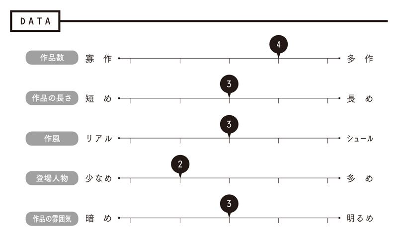
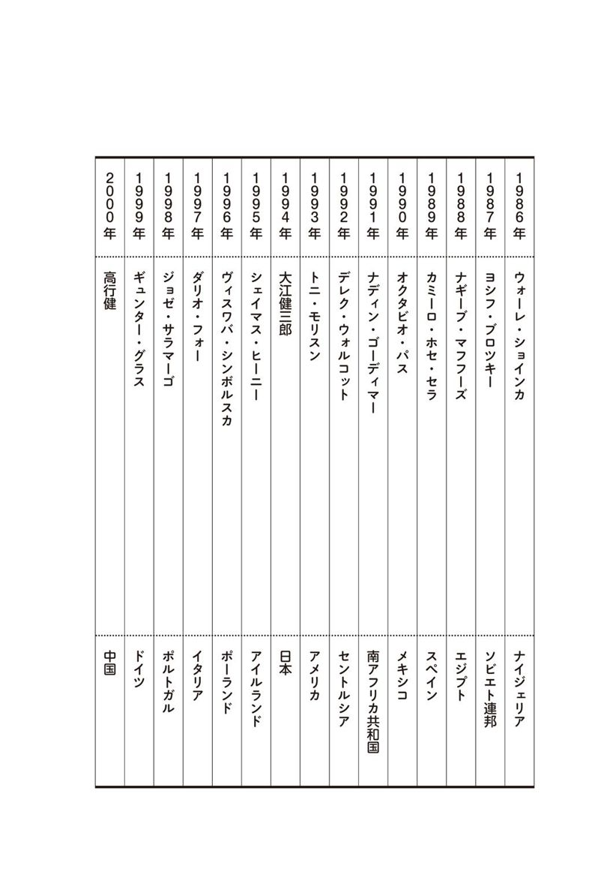

| ノーベル文学賞にもっとも近い作家たち | |
| Unknown | |
| (2017) | |
世界文学の魅惑
INTRODUCTION
世界には面白そうな作家がこんなにいたのか。この本を読み終えた君はつぶやく。そして駆り立てられるように書店におもむき、気になった本を片っ端から手に取るだろう。
地球上の様々な言語圏で、たった今も優れた作家たちが、あまりにも魅力的な言葉を次々と紡ぎ続けている。その言葉は魂を揺り動かし、我々を思索に誘う。これほどまで多くのものを与えてくれるというのに、どうして僕らは知らなかったのか？ 例を挙げよう。毎年秋になるとノーベル文学賞受賞者が発表される。今年こそは村上春樹が獲るのではないか。日本のメディアは期待を煽るが、気づけば聞いたこともない書き手の名前が読み上げられる。ヘルタ・ミュラーって誰だ？ トーマス・トランストロンメルって翻訳あるの？
なぜこんなことになっているのか。実は、本書を読めばわかるとおり、ノーベル賞を獲るほどの作家には多くの場合すでに日本語訳が存在する。つまり熱心な翻訳者や研究者がいて、書物や論文の形で読者を誘惑しようと何年にもわたって努力し続けているということだ。それでも僕たちは本を手に取らない。どうして？
この人の本ってこんなに面白いよ。二〇〇〇円なり三〇〇〇円なり投資しても、絶対に後悔しないよ。そうした身近なアナウンスが全くないからだ。たとえば、信頼する読書好きの友達に、お茶しながら、「これ絶対読んどいたほうがいいよ。読まないで死んだら後悔するって」と言われれば、ほぼ一〇〇パーセント僕たちは書店や図書館でその本を手に取るだろう。
でも誰だかわからない偉い学者さんが、上から目線で「この本の現代における文学的な意義ははかりしれない」なんて言っても、はいそうですか、で終わりだ。だって僕らは日々、生きることだけで忙しくてしょうがないもんね。「文学的意義」って何だそれ？ 面白いかどうか、明日も生きていくための力を与えてくれるかどうかもわからない本に、時給換算で何時間分にもなるお金を投資するなんて、とてもリスクが大きすぎるよ。
でもさ、実はその感覚こそが文学なんだ。世界中にいるどの作家だって、実際の社会の中で、日々金を稼いでなんとか暮らしている。ということは、僕らが直面しているのと同じ、あるいはそれ以上に激しい理不尽さ、筋の通らなさに直面して、苦闘し、物語の形で思考を紡ぎ、僕たちとシェアしようとしている。文学は、芸術ぶった夢見がちなヒマ人がぼんやりと絵空事を書きつけているようなもんじゃない。むしろ見たくない現実を見て、生き延びるための言葉をどうにかして掴もうとする運動なんだ。
だからこの本の書き手たちは作家の人生を叩きつける。絶対に面白いから読め、って君に言う。今はどんな肩書がついていようと、もともとは、みんなただの本好きだったわけじゃない？ それなら友達同士に戻ってみようよ。
この本の文章を読んでみると、作家は単なるその国の代表者なんかじゃないってことがよく分かる。小澤英実はジョイス・キャロル・オーツの作品について語る。「性や暴力、普通の生活を営む人間の内面に潜むグロテスクな心理を描き出す手つきに対する嫌悪」を読み手にかきたてる、と。醜い現実をえぐる作家たちは当然ながら、多数派からは嫌われる。だからラシュディの言うように、本質的に「作家と政治家は本質的に敵同士」なのだ。
どうして作家たちはきれいごとの向こうを見通せるのか。複数の世界を常に移動しているからだ。貧しい人々の世界と富んだ人々の世界、男と女の世界、異民族同士の世界、標準語と方言を含めた、違う言語の世界。移動すれば、一つの場所で当たり前のことが決して他でもそうではないことがよくわかる。
それは時間についても言えるだろう。ラシュディの議論を引きながら橋本智弘はこう述べる。「ドイツの作家ギュンター・グラスは、ナチス政権下の世界観の完璧な崩壊を目撃し、創作を通じて自らの手で現実を構築し直した『過去からの移民』である」。ならば、僕たちもまたそうじゃないか。だって、歳をとらない人なんて誰もいないからね。日吉信貴の語るイシグロの主人公のように、転換する時代に苦しみ、見たくないものから目を背けながら、それを無視もできないのが人間じゃないのか。
こうして考えてくると、二一世紀の世界文学のあり方も自ずから見えてきそうだ。英語さえわかれば世界中のことはなんでもわかる、というグローバリゼーションの嘘にみんなが気づき始め、様々な言語の富に魅了されるまま、複数の世界を移動し始める、というのが来るべき二一世紀文学なんじゃないか。英語作家であることを捨て、民族の言葉であるケニアのギクユ語で書きながら、同時に自作を英訳もし、世界を移動して回るグギ・ワ・ジオンゴなんかがいい例だ。
僕らには日本語話者のままで十分に、世界的になれる道筋がある。この本に渦巻く世界文学の魅惑に、今はただ身を委ねてほしい。
都甲幸治
ノーベル文学賞とは
ダイナマイトの発明者であるアルフレッド・ノーベルによってつくられた、いわゆる「ノーベル賞」のうちの一つ。彼の遺言によると「理想的な方向性」の文学作品を生み出したものに与える、とされている。発表は年に一度、通常十月の木曜日に行われ、賞金はその年によって異なるが、一億円を越えることが多い。
主催：スウェーデン・アカデミー
開始年：１９０１年
受賞者数：110人（うち男性97人、女性13人）
同時受賞回数：４回
受賞時の平均年齢：65歳
受賞者の使用言語ランキング：
１位 英語27人
２位 フランス語13人
２位 ドイツ語13人
４位 スペイン語11人
５位 スウェーデン語 ７人
６位 イタリア語 ６人
７位 ロシア語 ５人
８位 ポーランド語 ４人
９位 ノルウェー語 ３人
９位 デンマーク語 ３人
11位 ギリシャ語 ２人
11位 日本語 ２人
11位 中国語 ２人
参考：The Official Web Site of the Nobel Prize
http://www.nobelprize.org/nobel_prizes/literature/
※すべて２０１４年８月時点のもの
生年▼１９４９年生まれ
出身地▼日本、京都府京都市伏見区（兵庫県芦屋市育ち）
活動拠点▼日本（かつてはイタリア、ギリシャ、アメリカなどに滞在）
作品の特徴▼
夢と現実、光と闇、「こちら側」と「あちら側」が交錯するシュールレアリスティックな世界が、独特の比喩と話法で描き出される。
日本語で読める作品リスト▼
『風の歌を聴け』（講談社文庫）
『世界の終りとハードボイルド・ワンダーランド』（新潮文庫）
『ノルウェイの森』（講談社文庫）
『ねじまき鳥クロニクル』（新潮文庫）
『１Ｑ８４』（新潮文庫）
『色彩を持たない多崎つくると、彼の巡礼の年』（文藝春秋）
『女のいない男たち』（文藝春秋）
他多数
記憶をめぐる冒険
一九七八年四月一日の一三時半頃、神宮球場でヤクルト・スワローズのデイブ・ヒルトンがレフト線にツーベース・ヒットを放ったとき、外野席にいた村上春樹は、小説を書くことを決意したという。彼は当時二九歳で、千駄ヶ谷で「ピーター・キャット」というジャズ喫茶を経営していた。そうして『風の歌を聴け』（一九七九年）が出来あがり、ヴォネガットやブローティガンの影響下にあったことを作者じしんが認めているその作品は、群像新人文学賞を受賞する。同作と、つぎの『１９７３年のピンボール』（一九八〇年）は芥川賞候補になるが、落選。その後、村上は、カーヴァーやチャンドラーやサリンジャーなどの翻訳を精力的に手掛け、多くのエッセイや紀行文なども発表しながら物語を創造し続けて、野間文芸新人賞や谷崎潤一郎賞、読売文学賞、フランツ・カフカ賞、エルサレム賞などを受賞し、近年では、ノーベル文学賞候補の筆頭に挙げられている。
村上春樹は長編小説も書けば短編小説も書く。彼によれば、短編小説は陸上競技でいうと短距離、スプリントの世界であり、長編小説はフル・マラソンの世界である。村上は自らを「生まれつき長距離ランナー」――じっさい彼はフル・マラソンを走り、トライアスロンにも参加する！――であるとみなし、「基本的に長編作家」だと述べている。これまでに一三の長編小説が発表されているが、なかには短編小説を母体とするものもある。「街と、その不確かな壁」（一九八〇年）から『世界の終りとハードボイルド・ワンダーランド』（一九八五年）が生まれ、「螢」（一九八三年）から『ノルウェイの森』（一九八七年）が生まれ、「ねじまき鳥と火曜日の女たち」（一九八六年）から『ねじまき鳥クロニクル』（一九九四年）が生まれた。
主人公はたいてい三〇代の男性で、喪失感や空虚感を抱えている。そして何か（誰か）を探し求めている。それは、ピンボールであったり、羊であったり、妻であったり、小学校の同級生であったりする。そうした探求の過程で、現実と非現実の境界線が消失し、闇の世界が開けてくる。主人公はそこへと向かう、冥府に下るオルフェウスのように。
村上作品では、しばしば、二つの物語が平行して進んでゆく。『１９７３年のピンボール』の「僕」と「鼠」の物語がそうだ。『世界の終りとハードボイルド・ワンダーランド』になると、「僕」と「私」の物語が、はっきりと二つのパートに分けられるようになる。短編から長編へと発展したこの作品について村上は、「何か違うものをくっつけてツィン・ターボで行くしかないと思った」と述懐しているが、これと同様のメカニズムが、カフカ少年とナカタさんのパートからなる『海辺のカフカ』（二〇〇二年）や、天吾と青豆（さらには牛河）のパートからなる『１Ｑ８４』（二〇〇九年）を駆動することになるだろう。
村上春樹の世界を読み解くキーワードは、いくつもある。思いつくままに列挙してみよう。アメリカ、音楽、死、セックス、暴力、闇、地下、井戸、海岸、電話、料理、図書館、動物（園）、巫女、眠り、夢、異界、パラレル・ワールド、メタファー、アフォリズム、デタッチメント、コミットメント......。やれやれ。あまりに多くなってしまったが、おそらく、もっとあるにちがいない。たとえば、時間や記憶がそうである。
時間にかんしては、『ねじまき鳥クロニクル』に多くの言及がある。一例を挙げると、こんな一節――「時間は継続する一本の線というよりは、むしろ思いつくままに膨らんだり縮んだりする不定形な流体のようになった」。ここでは均質的で直線的な時間の概念に対して、感覚にもとづくフィジカルな時間の概念が対置されている。同じような内容は、笠原メイという少女の手紙にも記されている。「きっと時間というのはＡＢＣＤと順番に流れていくものじゃなくて、てきとうにあっちに行ったりこっちに来たりするものなんですね」。
『ねじまき鳥クロニクル』については河合隼雄が、「ふつうクロニクルといったら、やはり時代の順番に書かれることになっている」けれど、その小説はそうはなっていないので「よけいおもしろい」と述べていた。村上の言葉の選択が絶妙なわけだが、じっさいに焦点が当てられているのは、つねに、先の引用にあったような不規則な時間の流れのほうなのである。そんなわけで、「クロニクル」という言葉は、じつは村上の小説世界にまったくそぐわないものなのだ。
『風の歌を聴け』を見てみよう。そこには、「この話は１９７０年の８月８日に始まり、18日後、つまり同じ年の８月26日に終る」、とある。だが物語には、欠落や空白があり、前後のつながりが不確かな、断片的で捉えどころのない時間が流れている。さらには、いわばランダムに、「子供の頃」や「14歳」の頃や「高校の終り頃」のことが入ってきたり、「三年前」や「二年前」や「去年」のことが入ってきたりする。処女作にはすべてがあると言われるが、それはじつに反クロノロジカルな物語なのである。
時間をめぐる議論は、『１Ｑ８４』でも展開されている。ここでは、「人間は時間を直線として捉える」が、便宜的にそうしているだけで、「実際には時間は直線じゃない」と言われている。そして、「それはねじりドーナツみたいなかたちをしているのかもしれない」と続く。きわめて独創的な一節だ。「ねじりドーナツみたいなかたちをした」時間。それは、首都高の非常階段を降りると、「１９８４年」が「１Ｑ８４年」になっているような、そんな時の歪みを示唆してもいるようだ――首都高でタクシーから流れるヤナーチェクの『シンフォニエッタ』を耳にすると、青豆は「ねじれに似た奇妙な感覚」を覚え、「ひょっとしたらあれが始まりだったのかもしれない」と考えているのだから。
村上にあって時間は、まったく直線的ではない。同じことは記憶についても言える。じっさい、初の短編作品「中国行きのスロウ・ボート」（一九八〇年）ではやくも、「僕の記憶」はあやふやで「前後が逆にな」る、と語られているのだ。
記憶は、時間と同じように、非直線的で、断片的である。そして実のところ、小説もそうなのだ。「午後の最後の芝生」（一九八二年）という初期の短編に、「記憶というのは小説に似ている、あるいは小説というのは記憶に似ている」、と村上は書きつけた。記憶と小説――小説の語り――のあいだにある類似性とは、非直線性や断片性にほかならず、そこには必然的に、きわめて自然なかたちで、欠落や空白が生じるだろう。記憶は、村上春樹的な語りを支える土台となり、とりわけ『風の歌を聴け』のような小説それじたいのメタファーとなる。
そのような記憶は、村上にとって、つねに重要なテーマであり続けている。『世界の終りとハードボイルド・ワンダーランド』には、一方に「僕」の失われた記憶があり、もう一方に「私」の作られた記憶――それは「個人的なパラレル・ワールド」を作りだす――がある。『ねじまき鳥クロニクル』では、主人公が電話の女の正体がわからないということが、つまり彼の「記憶」の「死角」が、物語を牽引する。そして間宮中尉の「褪せない記憶」によって表象されるノモンハンの戦争が、そこに奥行きをもたらす。『海辺のカフカ』では、あるときカフカ少年の記憶が「凍りつ」き、すっぽり「抜け落ち」る。ナカタさんの記憶はすべて失われる。佐伯さんは、あらゆる記憶を焼き払うことになるが、それでも、記憶は「なによりも大事なものになる」と語る。『アフターダーク』（二〇〇四年）では、人間は「記憶を燃料にして生きていくもの」だから、いろんなことを思い出すようにと励まされた浅井マリが、最終的に姉エリとの親密な思い出を取りもどす。『１Ｑ８４』では、天吾と青豆が、幼いころに互いの手が残していった「感触の記憶」とともに生きている。
記憶とは、『世界の終りとハードボイルド・ワンダーランド』で言われているように、「アイデンティティー」にかかわるものであり、二つとして同じもののない「心」の問題に通じる。その意味で村上春樹は一貫して心を問題にしてきたと言ってよい。そして記憶には、ノモンハンの戦争が出てくる『ねじまき鳥クロニクル』の頃から、歴史性が加わるようになる。『１Ｑ８４』では、記憶は「個人的な記憶と、集合的な記憶」からできていて、「歴史とは集合的な記憶のこと」だと説明されている。村上にあって記憶は、個人という枠にとどまらず、歴史へと開かれているのである。
最新の短編集『女のいない男たち』（二〇一四年）には、「やつめうなぎだった頃」の記憶や、「避けがたく作り替えられていく」記憶が出てくる。さらに、「まるで他人の記憶の蒐集管理をしている人のように」という比喩もある。これはまるで、作者が自らのことを語っているようではないか。きっと私たちは、これからも、村上春樹の独特の手つきによって「蒐集管理」された様々な「記憶」を読んでゆくことになるだろう。
（西脇雅彦）
この作家が好きな人は、他にこんな本を読んでいます（作家名『作品名』）
●スコット・フィッツジェラルド『グレート・ギャツビー』村上春樹訳（中央公論新社）
●レイモンド・チャンドラー『ロング・グッドバイ』村上春樹訳（ハヤカワ・ミステリ文庫）
●カート・ヴォネガット・ジュニア『スローターハウス５』伊藤典夫訳（ハヤカワ文庫ＳＦ）
●レイモンド・カーヴァー『ささやかだけれど、役にたつこと』村上春樹訳（中央公論社）
●フランツ・カフカ『流刑地にて』池内紀訳（白水Ｕブックス）
代表作のあらすじ
『ねじまき鳥クロニクル』
失業中のオカダ・トオルがスパゲティーをゆでていると、知らない女から謎めいた電話がかかってくる。次いで妻のクミコから電話があり、いなくなった猫を探しに、路地の空き家の庭に行ってほしいという。そこには、涸れた井戸があった。その涸れた井戸は、ノモンハンの戦争に従軍した間宮中尉がかつて放り込まれた井戸と、時を越えて響きあうことになる。
とつぜん、今度はクミコが失踪する。トオルは空き家の井戸に降りていき、クミコとの関係を想い起こすのだが、その井戸は、異界に通じていた。彼はあるホテルにいて、謎の電話の女に会い、そのあと壁を抜けて、井戸に戻ってくる。区民プールにいるとき、不意に、謎の女の正体を知る。トオルは闇の世界に閉じ込められている彼女の救出に向かう。そしてようやく、再び井戸の壁を通り抜けることが可能になる。彼は以前のホテルに辿りつき、最後の戦いが繰り広げられる。すると現実の世界では......。
生年▼１９３６年生まれ
出身地▼アルジェリア、シェルシェル
活動拠点▼フランス、パリ
作品の特徴▼
旧フランス植民地のイスラム圏出身女性として、アルジェリアと女性をとりまく状況を歴史家の視点を交えて多声的、重層的に叙述する。
日本語で読める作品リスト▼
『愛、ファンタジア』石川清子訳（みすず書房）
『墓のない女』持田明子訳（藤原書店）
アルジェリア人がフランス語で語ること
一九五六年六月、当時フランス支配下にあったアルジェリアから初めてフランス女子高等師範学校に入学し歴史学を専攻したファーティマ＝ゾフラー・イマライェーヌは、独立を要求する在仏アルジェリア人学生のストライキを支持し、栄えある名門校の最終試験を放棄。試験勉強の替わりに一日十時間、半ば現実逃避から、半ば挑戦的に一編の恋愛小説を書き続けた。そうして完成した小説『渇き』を翌年アシア・ジェバールの筆名で刊行し、流麗なフランス語をものする植民地出身の二十歳の娘は「アルジェリアのサガン」の異名をとって一躍フランスの文壇に躍り出る。故郷では首都アルジェでのゲリラ戦を機に、独立闘争が激化を極める時期のことである。ものうい夏の海辺で惜しげもなく裸体をさらすアルジェリアとフランスの混血の娘、ナディアの苛立と期待と挫折を細やかに描いた本作は、なるほどサガンのベストセラー『悲しみよこんにちは』と多くの類似点がある。ジェバール当人は決してサガン作品との類縁に言及せず、当の小説も単なる文体練習と弁解しているが、支配国フランスのブルジョワ娘が片手間にしたためた話題作に対して、この程度の小説は植民地出身の自分にだってたやすく書ける、という自負があったのは確かだろう。アルジェリアからは戦時という現実を見据えていない不謹慎さゆえに非難を浴びるが、イスラム圏の若い女性が一人称で自身の身体と内面を語る大胆さは、因習的伝統に根深く浸った北アフリカ社会へのペンによる革命的一撃でもあった。
この第一作を基点に最新作『父の家のどこにもない場所』（二〇〇七年）までの半世紀にわたるジェバールの営為をたどってみると、その変幻自在な創作活動にすぐさま気づく。小説や短編集のみならず、評論、詩集、戯曲も含む一八冊に及ぶ書籍、二本の映画、書籍化されない戯曲もあり、活字になったインタビューやエッセイの数は計り知れない。歴史家、大学人であり、イスラム圏女性の論客でもあるこの人が、評論集をたった一冊しか世に出していないという意外さにも驚く。沈思してまとめる時間を惜しみ、つねに移動して新たな場所を探す作家とも言える。また、自己をさらさない純然たるフィクションと銘打った『渇き』から年月を経て、回想を主とする後期小説に目をやると、自伝的要素を織りませながらアルジェリアの女性社会をいかに語るかという問題に深く関わり、「西欧化したアルジェリア娘のカリカチュア」を描いた第一小説とは対蹠点に立った作家の姿をみとめることができる。
しかし、ある意味スキャンダラスな第一作は既に、全ジェバール作品を貫くまぎれもない徴しをとどめている。まず、美しい古典的な文体であること。次に、作品を構築物として端正に、重層的に構成すること。そして、相反する二つのアイデンティティの葛藤がテーマであること。
第三世界の女性、植民地支配下に生まれ育った女性が支配者の言語で教育を受け、その言葉で自己表現する。しかも、北アフリカという地はイスラム圏のなかでも女性隔離の伝統が根強く残り、年頃の娘たちが高等教育を受けることは例外中の例外だった。ジェバールがフランス語を習い、唯一のアルジェリア人学生として女子高校に入学するのに対し、若い娘は年頃になれば学校を辞め、家族が決めた結婚をするのが一般的だった。お決まりのコースをたどらなかったのは、小学校教師をしていた父の裁量によるものだが、ジェバールは大きな矛盾につき当たる。なぜ自分だけがヴェールを纏わず外を歩く自由を、フランス語で読み書きする特権を得て、それゆえに従姉妹や叔母たち、コーラン学校の同級生、いやもっと多数のアルジェリアの女たちからかくも断絶されているのか。
ほとばしる才能と情熱にまかせて『待ちきれない者たち』（一九五八年）、『新世界の子どもたち』（一九六二年）、『うぶなヒバリたち』（一九六七年）を次々書き継いだのち、一三年間作家活動を休止する。「私は一番大切なものを隠すために書く」と、小説という虚構の世界に浸ったはずだったが、ジェバールは自己の情感を書きとどめる欲求にかられはじめていた。だがそれにはフランス語という「他者」の言葉が大きな壁となった。
パリ、チュニス、ラバトと、初期小説執筆時には異郷にあったジェバールは独立後のアルジェリアに戻り、独立戦争を闘った女たちの聴き取りを通じて、『シェヌーワ山の女たちのヌーバ』（一九七八年）、『ゼルダ、忘却の歌』（一九八二年）の二本の映画を撮る。女性たちの声と生きざまに触れ、フランス語でもアラビア語でも記しえない、声や歌、身体表現も含めた彼女たちの「地下の言葉」を発見する。アルジェリア人でフランス語でしか表現できない自分が書くのは何か、なぜか、そう自問する私とは誰か、アルジェリアの女たちのなかで私とは何か。そういった問いそのものを、映画製作以降ジェバールは作品化していく。『居室のなかのアルジェの女たち』（一九八〇年）は、ドラクロワの名画の沈黙する女たちを想起させつつ、現代のアルジェリア女性のさまざまな局面を多様な語りで変奏させてゆく。それはまさに支配国男性の視線を逆手にとる挑戦的な換骨奪胎である。この書の序文でジェバールは「埋もれた声の主たち「のために」とか「について」話すのではなく「かろうじて近くで、できるならぴったり身を寄せて」話すこと」こそが自分の手法であると、高らかに宣言した。
自己表現のすべを手にしている「私」と、公の言葉をもたない「彼女たち」が「私たち」として交わる「複数の自伝」の試みは、『愛、ファンタジア』（一九八五年）から始まる自伝四部作で展開される。この後に『千夜一夜物語』のシェへラザードの語りに想を得た『影、スルタン妃』（一九八七年）、女性たちのベルベル語の書き言葉を追求した『牢獄は広大なり』（一九九五年）が続き、四作目の完結をもって、個人史と近代アルジェリア史が織りなす壮大な絵巻は閉じられるはずなのだが、残念ながら最終巻は未完である。八〇年代、九〇年代はジェバールの作家としての成熟期であり、作品の完成度においても一番充実している時期である。『サバルタンは語ることができるか』で名を馳せたスピヴァクが『愛、ファンタジア』に幾度となく言及し、ポストコロニアル研究、フェミニズム研究の興隆に伴って、合衆国の大学でジェバールが読みに読まれた時期でもあった。
歴史の皮肉と言おうか、九〇年代は軍とイスラム武装集団が衝突して血で血を洗う「失われた十年」と呼ばれるアルジェリアの内戦の時代だった。多くの知識人、作家、アーティストが国を離れ、危機に瀕する祖国の惨状が文学作品として書かれていったが、ジェバールもこの例にもれない。『牢獄は広大なり』を読むと、後半のトーンが前半と大きく異なり、当初のプランを逸脱したかにみえるその筆運びからは逼迫した悲痛な叫びが聞こえてくる。現実のアルジェリアの悲惨と矛盾を記すため、代表作ともなりうる自伝四部作と併走しながら、内戦の犠牲になった友人を哀悼する『アルジェリアの白』（一九九六年）、短編集『オラン、死んだ言葉』（一九九七年）を追い立てられるように、立て続けに刊行した。
テロリズムの終息をみた二〇〇〇年代から、再びこれまで秘めていた回想や心の内奥のひだを探るような静かなスタイルで『フランス語の消滅』（二〇〇三年）、『父の家のどこにもない場所』を書きあげる。老境の域に達したかにみえるこれら二作がパリとニューヨークで書かれていることにも注目したい。ジェバールの作品は『メディナから遠く離れて』（一九九一年）と『ストラスブールの夜』（一九九七年）をのぞいて、ほとんどがアルジェリアを舞台にしている。しかし自身はアルジェリア国内ではなくパリを活動拠点とし、近年は合衆国の大学で教鞭を執っていた。各作品の最後に記された執筆場所からは、この人がいかに移動する作家であるかが分かる。自身をときにノマドとも亡命者とも呼ぶが、植民地支配と独立、その後の混乱と、アルジェリアという混沌と矛盾の渦中からつねに発信してきた作家でもある。
ジェバールは数多くの文学賞を受賞し、その作品は二三カ国語に翻訳されている。世界的名声を得ているものの、決して読みやすくはないその作品を読ませる魅力とは何か。確かに、イスラム圏の植民地生まれの女性で、祖国を離れ、かつての宗主国の言語で執筆するという状況は、移動するがゆえに混淆を創造していく今日の越境する作家を体現している。歴史家としての見識と思弁的なものの見方にも舌を巻く。しかし、多くの読者を魅了するのは、洞察力にみちた文章で綴られる心情吐露に否応なくからめとられる語りの巧みさであり、ジェバールの語りに共鳴する時、読者は「わたしとは誰か」という終わることのない大きな疑問の渦に、情熱的に、そしてせつなく巻き込まれていくにちがいない。
（石川清子）
この作家が好きな人は、他にこんな本を読んでいます（作家名『作品名』）
●カテブ・ヤシーヌ（ヤシーン）『ネジュマ』島田尚一訳（現代企画室）
●ガヤトリ・Ｃ・スピヴァク『サバルタンは語ることができるか』上村忠男訳（みすず書房）
●チェーザレ・パヴェーゼ『美しい夏』河島英昭訳（岩波文庫）
●マリーズ・コンデ『生命の樹：あるカリブの家系の物語』管啓次郎訳（平凡社）
●ファドマ・アムルシュ『カビリアの女たち』中島和子訳（水声社）
代表作のあらすじ
『愛、ファンタジア』
１９４０年代、フランス支配下のアルジェリアの小さな村、少女＝著者自身が小学校の教師である父に手をひかれて初めて学校に行く光景から物語は始まる。自身のフランス語との出会いを始点に、130年余に及ぶフランスによるアルジェリアの植民地支配の歴史と個人の生い立ちを重複させながら、フランス語で創作する著者自身の存在意義と矛盾を告白する。ベルベル語や口語アラビア語とフランス語、書かれたテキストと消滅する声や叫び、征服者と被征服者、アルジェ占領を記すフランス人男性の記録文と独立闘争を生きたアルジェリア山村の女たちの語り――ここではいくつもの二項対立がせめぎ合い、絡み合って、アルジェリアの壮大な全体史を織りなしていく。著者の明晰な内奥吐露と無名の女たちのとつとつとした語りの多声的な交叉は、アラブの伝統的音楽形式をとりながら西欧の交響曲も想起させる。複数の声の自伝とも呼ぶべき本書の最大の主人公は、フランス語とも言えよう。
生年▼１９４８年生まれ
出身地▼ウクライナ、イヴァーノ＝フランキーウシク
活動拠点▼ベラルーシ
作品の特徴▼
戦争や災害、社会主義体制とその崩壊。そういった体験をしてきた人々の生の声を集めるオーラルヒストリー。
日本語で読める作品リスト▼
『戦争は女の顔をしていない』三浦みどり訳（群像社）
『ボタン穴から見た戦争：白ロシアの子供たちの証言』三浦みどり訳（群像社）
『アフガン帰還兵の証言』三浦みどり訳（日本経済新聞社）
『死に魅入られた人びと：ソ連崩壊と自殺者の記録』松本妙子訳（群像社）
『チェルノブイリの祈り：未来の物語』松本妙子訳（岩波現代文庫）
「ユートピアの声」を集めて
東欧の小さな国の一つであるベラルーシは、日本ではほとんど話題にあがることがないだろう。かつてはロシア語で白ロシア（ベロルシア）と表記されたベラルーシは、ある意味でロシア以上にソ連の面影を残した国であると言われる。「欧州最後の独裁者」と呼ばれるルカシェンコ現大統領は、ソ連時代の社会制度をできるかぎり保存し、社会主義へのノスタルジーに訴えることで支持を集めてきた。ベラルーシは第二次世界大戦でドイツ軍によって深刻な被害を受けるが、隣国ポーランドが破壊されたワルシャワの旧市街の景観を戦前と同じように復興させたのとは対照的に、戦災の廃墟の上にまったく新しい社会主義様式の街並みを建設させた。スヴェトラーナ・アレクシエヴィチの文学はこの国を主たる舞台としている。歴史書に名前が記されているような政治家や将軍ではなく、ソ連に暮らした普通の人々が語る言葉を集めて、「ユートピアの声」としてまとめられる作品を書いた。幸いにも翻訳者に恵まれて、最新作である『セカンドハンドの時間』（二〇一三年）を除けば、すべて日本語で読むことができる。
アレクシエヴィチが取材に基づく独自の創作手法を学んだのは、作家アレシ・アダモヴィチからである。アダモヴィチもベラルーシ人だが、ロシアを含めてソ連全土で戦争文学の書き手として知られていた。第二次世界大戦でベラルーシの多くの農村がドイツ軍により焼き払われ、住民は皆殺しにされた。アダモヴィチは仲間の作家と共にテープレコーダーを担いで戦禍の跡を旅してまわり、生き残った人々からの証言を『燃える村からきた私』（一九七五年、共著）という本にまとめた。九〇〇日にわたるドイツ軍の包囲によって飢餓に苦しんだレニングラードの住民に同様の手法で取材した『封鎖・飢餓・人間』（一九七七～八一年、共著）もよく知られている。事件の体験者に自ら語らせることを主眼としたこれらの作品を、アダモヴィチは「コーラス小説」や「集合小説」などと名付けている。テープに録音した証言を材料にはしているもの、あくまでこれは作家によって創造的に構成された文学作品というのがアダモヴィチの立場である。したがって歴史学におけるオーラルヒストリーとは厳密には異なるものではあるが、広い意味ではそこに含めてもよいように思われる。
ジャーナリストとして働きながら文学の道を試行錯誤していたアレクシエヴィチは『燃える村からきた私』や『封鎖・飢餓・人間』を読んで、アダモヴィチの開発した手法に自らの創作の方向性を決定づけられるほどの感銘を受けた。多くのインタビューでアレクシエヴィチは自分がアダモヴィチの弟子であると言明しているほどである。実は『燃える村からきた私』が出版されたのと同じころ、アレクシエヴィチは最初の著作『私は村を出た』を書いている。農村住民に都市部への移動の自由を与えない国内パスポート制度に批判な表現があったため、検閲によって出版が差し止められたというが、社会主義体制の崩壊後もこの作品が今に至るまで刊行されないままなのは、証言者の声によって作品を構成するという自分の一貫したスタイルが完成する前の未熟な若書きだとアレクシエヴィチが評価しているからだろう。
アダモヴィチは自分の「コーラス小説」の手法について論じた文章の中で、生き生きとした証言を与えてくれるのは女性である場合が多いと述べている。男性の語り手は教科書に書かれているような「客観的」な事件の叙述をそのまま繰り返すことが多い。アダモヴィチの手法を学んで、アレクシエヴィチが最初の取材の対象に女性を選んだのは正解だったといえる。第二次世界大戦では八十万人にのぼるソ連の女性が従軍しており、その勇姿は映画や文学作品でもしばしば描かれてきた。しかし女性兵士自らが体験を語るような場は、アレクシエヴィチの作品『戦争は女の顔をしていない』によってはじめて与えられたといってよい。女性の目に映った戦争は、過酷な戦場の様子を具体的に生々しく描き出すものであり、当局のプロパガンダが理想とするような英雄的な戦争のイメージとはかけはなれていた。そのため刊行は差し止められてしまう。ゴルバチョフの登場した一九八五年にようやく本が出ると、ペレストロイカの時流に乗って二百万部以上のベストセラーとなり、アレクシエヴィチは一躍時の人となった。同じ年には姉妹作ともいえる『ボタン穴から見た戦争』も出版された。戦時中にまだ子供だった人々の声を集めた作品である。証言者自らに語らせるというアレクシエヴィチの手法は、ある意味でアダモヴィチよりも徹底している。作品の本文は人々の「声」だけで構成されており、前書きや後書きを除けば作者の語りが前面に出ることはほとんどない。アレクシエヴィチの作家としての個性は、ごく普通の人々の口から珠玉の言葉を引き出すことのできる話し手への共感力、そして多くの声を「コーラス」に編集・構成する巧みさに見ることができる。社会主義体制下で苦しんだ人ばかりではなく、ソ連というユートピアを支える側にあった者たちも、アレクシエヴィチは等しく「小さな人間」の声として作品に組み込んでいる。ソ連崩壊後に出た『戦争は女の顔をしていない』の新版では、検閲で削除された文章が補完されているだけではなく、削除を要求した検閲官の台詞までもが「声」の一つとして収められている。
一九八九年の『アフガン帰還兵の証言』も大きな反響を呼んだ。戦場で過酷な体験をなめた傷痍軍人や息子を失った母親たちに取材して、アレクシエヴィチはアフガニスタン戦争の知られざる凄惨な光景を明るみに出した。しかしソ連崩壊後の一九九二年、取材した兵士の母親や帰還兵の一部が、アレクシエヴィチの記録した「声」は真実とは違うとして、アレクシエヴィチをミンスクの裁判所に訴えるという事件が起きた。戦死した息子を祖国（今はなきソ連！）のために命を犠牲にした立派な軍人として記憶したい母親にとって、戦争の暗い側面を暴露する『アフガン帰還兵の証言』が耐え難かったことは理解できる。かつて作家に取材を受けた母親は裁判の中で「そんな恐ろしい真実は必要ない」とまで言っている。結果としてアレクシエヴィチを訴えた人々は作家の前で語った自分自身の言葉を否定したことになる。
アレクシエヴィチが「小さな人間」と呼ぶような目立ったところもない普通の人々が、社会主義体制の崩壊後もソ連的なメンタリティーを抱き続けるという現象に作家が関心を向けるようになったのは、『アフガン帰還兵の証言』をめぐる裁判が一つのきっかけだったのかもしれない。次作『死に魅入られた人びと』（一九九三年）では、ソ連解体から急激な体制変換の時期に生きる支えを失って自殺を試みた人々を取材している。その後もアレクシエヴィチは「自殺、死」に関係した証言を集め続けており、またそれと並行するようにして、ソ連に生きた人々の「愛」をテーマにした取材も行っている。後者のほうは『永遠の狩の妙なる鹿』というタイトルだけは決まっているが、まとまった本としては未だに完成していない。実は最新作の『セカンドハンドの時間』は、『死に魅入られた人びと』における死と『永遠の狩の妙なる鹿』の愛という対立しながらも補い合うような二種類の声を編み合わせた作品になっている。
一九八六年に起きたチェルノブイリ原発事故は発電所のあったウクライナだけでなく、ロシアやベラルーシに広範囲にわたる放射能汚染地を作り出した。とりわけベラルーシは国土が小さい分だけ汚染地の占める割合が大きく、住民の生活に深刻な影響をもたらしている。一九九七年に出た『チェルノブイリの祈り』は事故の原因や責任を問うのではなく、事故から十年が経って人々の意識や記憶がどのように変わってきたのかを明らかにしている。ただし一九九四年にルカシェンコが政権に就いて以降、アレクシエヴィチの作品はベラルーシでは出版されなくなっている。『チェルノブイリの祈り』ですらロシアの出版社から出された。二〇〇〇年代にはフランス、ドイツ、イタリアなどに招かれて暮らしているが、これも迫害を避けるための政治的な亡命という側面があった。ただし二〇一〇年代に入ってからは基本的にベラルーシを生活の拠点にしているようだ。
アレクシエヴィチの父はベラルーシ人、母はウクライナ人であり、家庭で使われる言葉はソ連諸民族の共通語であるロシア語だったはずである。彼女の作品を構成する取材相手の言葉もまた、農村のおばあさんが時おりベラルーシ語を差し挟むのを除けばほとんどがロシア語である。ベラルーシは旧ソ連において（ロシアを除いて）もっともロシア語が浸透した地域であり、ベラルーシ人はロシア人以上にソ連的な意識を培った人々だったと言われる。アレクシエヴィチはベラルーシの作家ではあるが、それ以上に今は存在しないソ連、あるいは決して存在することのなかったユートピアを代表する最後の作家といってよいかもしれない。
（越野剛）
この作家が好きな人は、他にこんな本を読んでいます（作家名『作品名』）
●アレーシ・アダーモビチ（アレシ・アダモヴィチ）他『封鎖・飢餓・人間：１９４１‐１９４４年のレニングラード』宮下トモ子訳（新時代社）
●ワシーリー・グロスマン『人生と運命』齋藤紘一訳（みすず書房）
代表作のあらすじ
『チェルノブイリの祈り』
ひとりの女性による、原発事故の消火活動のために被ばくして亡くなった消防士の夫への愛をめぐる語りから始まる。汚染された土地を去った住民、汚染地に住み続ける人々、原発技師、医者、兵士、警察、行政官、教師、ジャーナリスト、救援活動家、被害者と加害者、大人と子供。事故によって人生を変えられたあらゆる人々の声が集められている。それは救いのない悲劇であったり、力強い愛の物語であったり、人間の文明を考察する哲学であったり、ノスタルジーであったり、ときには放射能をネタにした笑い話までもが披露される。語られる空間も旧ソ連の全域にまで広がっていく。人々の語りはどれも興味深いが、中央アジアやチェチェンから紛争を逃れて、無人となった汚染地の村に安住の地を見出したという家族の話がとりわけ胸を打つ。ここに描かれたチェルノブイリが10年後の福島にどのくらい似ているのかを確かめるため、この先も折にふれて読み続けるべき作品である。
生年▼１９３８年生まれ
出身地▼アメリカ合衆国、ニューヨーク州、ロックポート
活動拠点▼アメリカ合衆国、ニュージャージー州、プリンストン
作品の特徴▼
熟練のテクニックと綿密なリサーチで、アメリカの社会構造にいやおうなく規定される個人の生とそこに潜む性と暴力を生々しく描き出す。
日本語で読める作品リスト▼
『かれら』大橋吉之輔・真野明裕訳（角川書店）
『オン・ボクシング』北代美和子訳（中央公論社）
『ブラック・ウォーター』中野恵津子訳（講談社）
『生ける屍』井伊順彦訳（扶桑社ミステリー）
『ブロンド――マリリン・モンローの生涯』古屋美登里訳（講談社）
『アグリーガール』神戸万知訳（理論社）
『フリーキー・グリーンアイ』大嶌双恵訳（ソニーマガジンズ）
『二つ、三ついいわすれたこと』神戸万知訳（岩波書店）
『とうもろこしの乙女、あるいは七つの悪夢』栩木玲子訳（河出書房新社）
他多数
アメリカ文学界のダークレディ
オーツ自身のキャリアを見れば、まさにアメリカン・ドリームの体現者というにふさわしい。大恐慌後の田舎町で貧しい生活を送り、一四歳で祖母から誕生日にタイプライターをプレゼントされて以来、次々に小説を書き始める。家族の中で初めて高校へ進学・卒業し、シラキュース大学への奨学金を勝ち取り、一九歳で『マドモアゼル』誌の短編小説コンクールに入賞、いまではアメリカ文学界のみならず二〇世紀の文学における最重要作家のひとりと目されている。だがこうした経歴ゆえだろう、オーツの作品に多く描かれるのは、彼女自身のありえたかもしれない姿――成功の階段を見事のぼりつめ、破滅や死とつねに隣り合わせの世界で生きたマリリン・モンローやボクサーたち、あるいは夢破れ、やがて狂気や暴力へと落ちてゆく名も無き敗残者たちである。「私はつねになんらかの形で階級闘争を描いてきた」とはオーツ自身の述懐だが、上流階級のインテリといった現在のイメージとは裏腹に、彼女は「真のプロレタリア小説家」として、人種、階級、ジェンダーの三項が複雑に連動しながら揺れ動く「アメリカなるもの」をあぶり出す作品を発表しつづけている。
オーツの作品の特徴を大きくふたつに分けると、一つは「個人的なことは政治的なこと」という七〇年代フェミニズムのスローガンを思わせるような、歴史や政治といった〈大きな物語〉が普通の人々の日常生活、すなわち〈小さな物語〉とどれほど密接に絡み合い影響を与えているかを描く点、そしてもう一つは、この社会で女性として生きることの困難と危険が、つねに作品の骨子を貫いている点にある。
作品の手法としては実在の事件や人物の人生を、厖大かつ綿密なリサーチを元にフィクションに仕立てたものが多い。全米図書賞受賞作である『かれら』（一九六九年）は、窮屈な田舎町や自分を拘束する環境から脱出しようともがく労働者階級の渇望を、登場人物一人一人の圧倒的な日常のディテールとともに書き尽くし、ドライサーとフォークナーを融合させたような壮大な世界観を提示した初期の代表作だが、ストーリーはかつての教え子の家族の半生が元になっている。初期の作品群は自然主義と心理的リアリズムを基調とするが、八〇年代以降はアメリカ的精神の闇を浮き彫りにするような歴史的事件を小説化したポストモダン・ゴシック風の作品によって評価を受けてきた。ブラム・ストーカー賞を受賞した『生ける屍』（一九九五年）では、連続猟奇殺人鬼ジェフリー・ダーマーをモデルにロボトミー手術でゾンビを造ろうとする白人男性の深層心理に肉迫し、『ブラック・ウォーター』（一九九二年）では、エドワード・ケネディ上院議員が運転する車が橋から転落し同乗者の女性のみが溺死したチャパキディック事件を下敷きに、溺れてゆく数分間に若い女性の脳内を駆けめぐる回想が息詰まるサスペンスとなって展開する。
作品量という点では、オーツの右に出る作家はほとんどいないだろう。作家紹介の出だしは多作ぶりの言及から始まるのが恒例となっているほどで、一九六三年のデビューから約五〇年、平均して年に一、二冊のペースで作品を発表しておりその総数はすでに一〇〇冊を越える。長編も数百ページを越える大作が多く、マリリン・モンローの生涯を死後のノーマ・ジーン・ベイカーが語るという異例の視点を採用してベストセラーとなった『ブロンド』（二〇〇〇年）は、一四〇〇ページあった原稿を約半分にカットしている。さらに特筆すべきは、個々の作品がコンスタントに高いクオリティを維持していることである。ところが、アメリカ国内でのオーツの評価は真っ二つに割れており、オーツの伝記作者であるグレッグ・ジョンソンによれば、オーツは「男女問わずフォークナー以来最高の作家」と聖人化され称賛される一方、ぞんざいな「言語マシン」と痛罵されているというし、作家のジョン・アップダイクはオーツが「すぐれた才能に浴びせられた最も苛酷な部類に属する叱責」を受けてきたと述べている。その一因には彼女の多作ぶりに対する懐疑があるが、性や暴力、普通の生活を営む人間の内面に潜むグロテスクな心理を描き出す手つきに対する嫌悪、そして女性作家に対するミソジニーがあることも否めない。
だが、オーツの手腕がもっとも発揮されるのは短編であるという点では多くの批評家の見解が一致している。オーツの作品のなかでもっともよく読まれている作品の一つである「どこへ行くの、どこ行ってたの？」（柴田元幸編『どこにもない国』などに所収、一九六六年）では、郊外に住むティーンエイジャーの少女と連続殺人鬼チャールズ・シュミットを思わせる男との邂逅を描いたもので、少女が大人の女に移行する際に遭遇する性的な暴力と危険を、現代のおとぎ話のような寓話性をまじえて語る。この作品はボブ・ディランに捧げられているが、ポップカルチャーと文学的伝統の融合もオーツの特徴の一つである。またヤング・アダルト作品ではわかりやすい言葉でフェミニスト的立場を打ち出すことも多く、少女の視点から家族の問題に斬り込み、母であり妻である女の苦境と少女の関係や、家庭内暴力、夫と妻のアンバランスな権力関係といった主題が追求される。社会で女性として生きることの自覚と覚悟を促すような記述が、けっして教条的でないかたちで盛り込まれている。
現在オーツの長編の翻訳は絶版のものが多く、入手が容易な作品は短編集とヤング・アダルト作品が主となっている。だが、いかにも王道たるゴシック的なサプライズ・エンディングを排し不思議な読後感が後を引く短編や、『フリーキー・グリーンアイ』（二〇〇三年）、『二つ、三ついいわすれたこと』（二〇一二年）など大人が読んでも充分に楽しめるオーツのヤング・アダルト作品は、彼女のストーリーテリングの技を存分に体感することができる。
こうした小説群に加え、オーツは文学のジャンルも自在に横断する。ロザモンド・スミス名義のミステリ小説や、戯曲や詩やノンフィクションや批評など、ほぼあらゆるジャンルにまたがり旺盛な執筆を行っている。とりわけ父親の影響で幼少より彼女が傾倒しているボクシングについての評論をまとめた『オン・ボクシング』（一九八七年）は、ノーマン・メイラーが「これまで出会ったもっとも創造的なフェミニズム行為のひとつ」と激賞したほか、最良のボクシング評論、第一級のアメリカ文明批評、そしてオーツの最高傑作のひとつとして高い評価を受けている。オーツにとってボクシングとは、文明と野蛮がわかちがたく結びつき、肉体的痛みを介してボクサーと観客とが繋がる非言語的な行為である。極めてマッチョなスポーツであるボクシングは、出産が男を排除する経験であるのと同じぐらい女を排除するが、オーツはそのマチズモを否定するのではなく、ボクシングに魅了される女性としての自らを肯定した上で、外部から冷静に分析を加えていく。ボクシングとはすべての男が引きつけられる「男の中の女性的なもの」への否定であり、生と死の瀬戸際に立った人間たちの虚飾に満ちたドラマであり、「アメリカの夢」であると同時に「アメリカの悲劇」なのである。こうしたオーツならではのボクシング観には、性や暴力をめぐる自身の創作との深い連関をみることができる。
つねに時代を鋭く切り取る作品を発表し、メディアに支配された情報社会に生きる人間の姿を描いてきたオーツは、メールやツイッターやフェイスブックをいちはやく駆使し、作品内にも効果的な道具立てとして用いている。だがその実在の事件や人物を下敷きにした作品がときに非難を浴びるように（近年では米国の桂冠詩人ともいわれるロバート・フロストを人種差別主義者として描いた短編「美しく、暗く、深い」（二〇一三年）が物議をかもした）、ソーシャルメディア上での発言が「炎上」し話題になることもある（エジプトでのレイプ率の高さをイスラム教に結びつけた発言が記憶に新しい）。
創作の双輪として大学教師としても後進の育成にあたり、一九六二年から五年間デトロイト大学で、六七年から一二年間カナダのウィンザー大学で教えたあと、七八年より名門プリンストン大学で三六年間教鞭を執り、ジョナサン・サフラン・フォア（彼の処女作となる『エヴリシング・イズ・イルミネイテッド』（二〇〇二年）は、在学中オーツの熱心な指導のもとに書き上げられた）やジェニファー・ウェイナーといった現在活躍する作家たちを育てたのち、二〇一三年に七四歳で後ろ髪を引かれつつ引退している。
二〇一三年のノーベル文学賞をカナダの女性作家アリス・マンローが受賞したため、しばらくオーツの受賞はないのではないかと予想するむきもあるが、「アメリカ文学界のダークレディ」として君臨しつづけ、約半世紀のあいだ同時代文学を創作と批評の双方で牽引し続けてきた第一人者であることに疑いの余地はない。
（小澤英実）
この作家が好きな人は、他にこんな本を読んでいます（作家名『作品名』）
●アンジェラ・カーター『血染めの部屋』富士川義之訳（ちくま文庫）
●マーガレット・アトウッド『侍女の物語』斎藤英治訳（ハヤカワｅｐｉ文庫）
●ノーマン・メイラー『死刑執行人の歌』岡枝慎二訳（同文書院）
●ドン・デリーロ『ホワイト・ノイズ』森川展男訳（集英社）
●ドン・デリーロ『アンダーワールド』上岡伸雄・高吉一郎訳（新潮社）
代表作のあらすじ
『かれら』
物語はオーツの教え子モーリーン・ウェンダルが語った家族の半生を小説化したものという体裁をとっている。１９３０年代から60年代のデトロイトを舞台に、ロレッタとその長男ジュールズ、長女のモーリーンの３人が、人並みの生活を望み、アメリカン・ドリームを摑もうと夢見ながら、金や愛や欲望に翻弄され袋小路に立たされるさまを描く。兄のブロックに恋人を射殺されたロレッタは、助けてくれた警官のハワードと結婚し３人の子供を持つ。長男のジュールズはカリフォルニアで一旗揚げる夢を見るが、裕福な家の娘ナディーンと激しい恋に落ちその日暮らしの生活を余儀なくされる。父親の死後、自活資金を作るため行きずりの男達に体を売っていたモーリーンは、それを知った義父に激しく殴打され精神に障害をきたす。男に頼るほか生きる術のないロレッタだったが、夫達に先立たれひとりになったあと、彼女とモーリーンの傷を癒したのは帰還したブロックだった。そんななかデトロイト暴動が起こる。ちりぢりになった３人だが、かれらはそれぞれの生活の営みを求めてもがき続けるのだった。
生年▼１９２９年生まれ
出身地▼チェコスロヴァキア（現チェコ）、ブルノ
活動拠点▼フランス、パリ
作品の特徴▼
省察、エッセイ、短編小説など多様なジャンルを組み合わせ、音楽的な変奏形式をしばしばとりながら、人間という存在を解明していく。
日本語で読める作品リスト▼
『冗談』関根日出男・中村猛訳（みすず書房）
『存在の耐えられない軽さ』西永良成訳（河出書房新社）
『可笑しい愛』西永良成訳（集英社文庫）
『不滅』菅野昭正訳（集英社文庫）
『笑いと忘却の書』西永良成訳（集英社文庫）
『別れのワルツ』西永良成訳（集英社文庫）
『ジャックとその主人』近藤真理訳（みすず書房）
『カーテン：７部構成の小説論』西永良成訳（集英社）
『出会い』西永良成訳（河出書房新社）
『無知』西永良成訳（集英社）
他多数
越境と変奏
小説『無知』（二〇〇〇年）に次の一節がある。「自分の記憶が悪意にみち、この国での人生を大切に思わせるものを何ひとつ差し出さなかったからこそ、ヨゼフは後悔もなく、軽快な足取りで国境を越えたのだ」。チェコ人男性がチェコスロヴァキアから西側へ亡命する様子を描いた情景だが、ミラン・クンデラという作家を語ろうとするとき、まず思い浮かぶのは「越境」という言葉だ。東欧からフランスへの亡命という物理的な移動、そして、詩から戯曲・評論を経て小説にいたる文芸ジャンルの横断。なかでも小説の境界をたえず更新し続けているその姿は「越境作家」という名にふさわしい。
ちょっとした冗談がもたらす悲喜劇的な運命を描いた『冗談』（一九六七年）から、「永劫回帰」というニーチェの言葉で物語が始まりを告げる『存在の耐えられない軽さ』（一九八四年）、そして最新作『無意味の祭典』（二〇一三年、未訳）にいたるまで、ミラン・クンデラは、「小説」の可能性をつねに探究し続けている。彼の作品では、登場人物を単に描写するだけではなく、哲学的省察を挿入したり、歴史の一ページに光を当てたり、多層的な構造をなす「物語」が展開されている。というのも、作家が重要視するのは、世界を「多義性」として理解し、絶対的な心理ではなく、たがいに相矛盾する多数の相対的な真実を提示することだからだ（『裏切られた遺言』）。
多様な顔をもつ作家の全体像を描き出すのは困難をきわめるが、以下では、いくつかのキーワードを手掛かりにして、作家ミラン・クンデラの軌跡をたどってみることにしよう。
「モラヴィア」と「ヤナーチェク」――旧チェコスロヴァキアから現在のチェコ共和国にいたるまで、プラハは首都であり、文化面での中心だった。一九二九年四月一日に生まれたミラン・クンデラが幼少期を過ごしたのは、プラハではなく、モラヴィアの中心都市ブルノだった。この体験は、離れた場所から中心を見るという視座をすくなからず養ったにちがいない。また、モラヴィアとの関連で触れなければならないのが、この地を代表する音楽家レオシュ・ヤナーチェク（一八五四‐一九二八）。唯一チェコ文化のＤＮＡを感じるとしたらヤナーチェクだと述べるほど、クンデラはヤナーチェクには賛辞の言葉を惜しまない。発話旋律によって大衆の言葉をオペラに導入するという画期的な試みをしたヤナーチェクは「小国民」という小さなコンテクストに閉じ込められてしまうことがしばしばあったが、それはクンデラ自身が感じていた問題でもあった（なお、クンデラの父はヤナーチェクの弟子だった）。
「抒情主義」――プラハの音楽芸術大学の映画学部（ＦＡＭＵ）を卒業後、同大学で世界文学の授業を担当するようになったクンデラは、一九五三年、詩人としてデビューする。『人間、この広き庭』（一九五三）、『最後の皐月』（一九五五）、『モノローグ』（一九五七）の三冊を発表し、共産主義者の文学者フチークを礼賛する詩などを綴っている。のちに「抒情詩とは自分自身の魂およびその魂をひとに聞かせたいという願望によって眩惑された人間の、もっとも模範的な化身にほかならない」（『カーテン』）と述べているが、これらの詩集を通して共産主義に未来を託す姿は、小説『生は彼方に』に登場する若い抒情詩人ヤロミールを彷彿とさせる。
「プラハの春」――一九六〇年代初頭、短編小説「愁いに悲しむ神である私」（未訳・『可笑しい愛』［一九六九年］の決定版から削除された一編）の執筆が契機となり、クンデラは「反抒情的な詩」である小説の世界に足を踏み入れていく。そしてついに一九六七年、長編小説『冗談』を発表する。それはちょうど「人間の顔をした社会主義」を標榜する「プラハの春」という文化開放政策がチェコスロヴァキアで繰り広げられていた時代であった。クンデラは同年の作家同盟大会で「文化と民族の存在理由」というスピーチを行ない、「プラハの春」を牽引する役割を果たしていた。だが、一九六八年八月、ソ連軍を中心とするワルシャワ条約機構軍が侵攻し、「プラハの春」の路線の転換が余儀なくされてしまう。同路線を推奨していたクンデラもまた公の職を解かれ、作品を国内で発表する可能性を失い、一九七五年、フランスに亡命する。このような知識人の失望の経験は、いうまでもなく、小説『存在の耐えられない軽さ』のなかで反映されている。
「中欧」――ヨーロッパの小説伝統を継承している自負があるにもかかわらず、「東側」の人間というレッテルが貼られているのをクンデラは亡命先のフランスでたえず感じていた。そこで、一九八三年、エッセイ「中欧、あるいは誘拐された西欧」を雑誌『ル・デバ』に発表する。カトリックの伝統などで西欧と文化的な価値観を共有している「中欧」は根本的に西欧であり、社会主義体制の現状は「誘拐」されたものに他ならないとする彼の見解は賛否両論を呼ぶ。だが「最小の空間における最大の多様性」という特徴によって「中欧」を再定義した点は意義深いものだった。この観点は、「国民文学」と「世界文学」のあいだに位置する「中位のコンテクスト」という文学的な議論にものちに接続していくことになる。
「翻訳」――レンヌ大学で客員教授をつとめながら、クンデラは、一九七九年に『笑いと忘却の書』を発表、一九八一年にはフランス国籍を取得すると同時にパリに住みはじめる。母国で作品を刊行する可能性が断たれたクンデラにとって、亡命出版などを除くと、翻訳が唯一の表現手段となった。だがある日、英訳された自分の作品を見たクンデラは愕然とする。大幅な削除が行われ、順序も入れ替えられていたからだ。またあるとき出会った翻訳者はチェコ語を一語も介さず、どうやって翻訳するのかと尋ねると、心臓を指さしながら「ここで」と答えたという（つまり、重訳をしていたということ）。そこで、クンデラは「野生の羊の群れを追う羊飼い」のようにみずからの翻訳をチェックする役回りを演じることとなる。一九九〇年に発表した『不滅』以降、仏訳の作品に「チェコ語のテクスト」と同じ価値を与えることを公的に認めたクンデラは、エッセイだけではなく、小説もフランス語で執筆しはじめ、『緩やかさ』（一九九五年）、『ほんとうの私』（一九九八年）、『無知』、『無意味の祭典』といった作品を現在にいたるまで発表している。フランス語で本格的に執筆活動を始めたのが、プラハで共産主義体制が崩壊した一九九〇年以降というのは、運命の皮肉なのだろうか。
「歴史」――共産主義体制、プラハの春、チェコ事件など、中欧の歴史はクンデラ作品の通奏低音としてたえず響いている。だが、それは日常を営む人物たちの単なる背景にはなっていない。というのも、クンデラの小説世界は、ある種のアンチテーゼから出発しているからだ。つまり、「小説は、忘却をまえにして、みすぼらしく要塞化された城でしかない」（『カーテン』）と。我々は長編小説の細部を忘れてしまうのと同じように、「歴史」も忘れてしまう。そう、「みんなが知っていると仮定できる歴史的な出来事はひとつとして存在しない。そこで私も、数年前に起こった出来事を、まるで千年も昔のことのように語らねばならないのである」（『笑いと忘却の書』）。クンデラは音楽に着想を得て「反復」という手法を用いていると指摘されることがあるが、もしかしたら、それは忘却の歴史に対する一つの戦略なのかもしれない。
「心と体」――クンデラの作品では、心と体の不一致が頻繁に描かれている。たとえば、『存在の耐えられない軽さ』のサビナがトマーシュの部屋を初めて訪れ、抱擁したその瞬間、朝から何も食べていなかった彼女のお腹がグーと鳴ってしまう。感情が極まった瞬間に発せられた体内の音。それは、医学がいかに発達した現代といえども、「心」と「体」の関係には未知な部分が多いことを知らせてくれる。身体との関連でいえば、恋愛の物語でありながらも、排泄にまつわる描写が散見される。それは「キッチュ」という概念と関係しているかもしれない。ここで言う「キッチュ」とは、国家や民族や特定の人物など、ある存在との無条件の一致を熱望する欲求のこと。しかし同時に、それは目にしたくないものや許容できないものを露見させる。だが、クンデラは実存にまつわるあらゆる諸相に光を当てることを恐れない。それは、我々誰もが抱いている紋切型の審美的な価値観への挑戦であり、抗いなのである。
最後に評論集『裏切られた遺言』からクンデラ自身の言葉を引用して、この文章を終えることにしよう。
「小説の価値はあるがままの実存の、それまで隠蔽されていた可能性の開示にある。言い換えれば、小説は私たちの各人のなかに隠されているものを発見する」（以上すべて、引用は西永良成氏の訳による）
（阿部賢一）

この作家が好きな人は、他にこんな本を読んでいます（作家名『作品名』）
●パトリック・シャモワゾー『カリブ海偽典』塚本昌則訳（紀伊國屋書店）
●ガブリエル・ガルシア＝マルケス『百年の孤独』鼓直訳（新潮社）
●ボフミル・フラバル『わたしは英国王に給仕した』阿部賢一訳（河出書房新社）
●ヘルマン・ブロッホ『夢遊の人々』菊盛英夫訳（ちくま文庫）
●Ｗ・Ｇ・ゼーバルト『アウステルリッツ』鈴木仁子訳（白水社）
代表作のあらすじ
『存在の耐えられない軽さ』
医師のトマーシュには信条がある――「女性と性交したあとは、一緒に寝ない」。だが、「エロス的友情」によって幾多の女性と関係を育んできた彼のもとに、ある日、地方で出会ったテレザがやってくる。それは、「プラハの春」という文化開放政策が推し進められていた時代のこと。不意にテレザが訪問してきたように、１９６８年８月、ロシア軍の戦車が突如としてプラハに侵攻を始める。トマーシュとテレザは（犬のカレーニンとともに）画家のサビナがいるスイスに亡命する。サビナには大学教授のフランツという愛人がいるが、トマーシュやテレザとも奇妙な三角関係を始める。だがテレザは突然祖国へ戻ってしまい、トマーシュ（そして語り手）は自問する。たった一度しかない人生で、どの決心が正しく、どれが間違っているのか、誰にもわからない。それは、恋愛でも歴史でも同じかもしれない、「軽さ」と「重さ」のどちらかがよいか判別できないのと同じではないかと......。
生年▼１９３７年生まれ
出身地▼アメリカ合衆国、ニューヨーク州、ロングアイランド
活動拠点▼アメリカ合衆国
作品の特徴▼
重厚なのにスピーディ。深遠なのに笑わされる。近現代の歴史をまるごと、自分なりのフォーマットに落とし込む。
日本語で読める作品リスト▼
『競売ナンバー49の叫び』志村正雄訳
『スロー・ラーナー』志村正雄訳（以上ちくま文庫）
『V.』小山太一・佐藤良明訳
『競売ナンバー49の叫び』佐藤良明訳
『重力の虹』（近刊）佐藤良明訳
『スロー・ラーナー』佐藤良明訳
『ヴァインランド』佐藤良明訳
『メイスン＆ディクスン』柴田元幸訳
『ＬＡヴァイス』栩木玲子・佐藤良明訳
『逆光』木原善彦訳
（以上新潮社）
超然たるヘビー級文学の雄
ノーベル文学賞の決定は、ノーベルの遺した「理想的な方向性」という文言に支配されてきた。文学史上の大作家たることが「理想的」とは、必ずしもならないわけで、その意味でカフカもプルーストもジョイスも受賞していないのは不思議なことではなく、ピンチョンが受賞せずじまいになったとしても、例外的なことではない。
ピンチョンの方も、賞の権威など欲しがるまい。デビュー作『Ｖ.』（一九六三年）でフォークナー賞（処女小説を対象にした最優秀賞）はいただいたものの、『重力の虹』（一九七三年）に対し、アメリカ文芸協会が五年に一度、特に傑出した作品に対して贈る「Ｗ・Ｄ・ハウエルズ・メダル」を与える決定をしたとき、これをキッパリ辞退している（同書に対する全米図書賞は受けたが、式典には某コメディアンが代理出演、爆笑もののパロディ演説をやってのけた逸話は有名である）。
過去半世紀、人前に姿を表したことのない隠遁作家。でもアニメの『シンプソンズ』に本人役で（声の）出演をしたり、コミック音楽楽団を率いるスパイク・ジョーンズのＣＤ復刻版には、うれしそうにライナーノーツを書いたりする。実際に接してみると、とても優しい男だそうで、サリンジャーのようないわゆる人間嫌いでは全然ない。なのに小説家ピンチョンを生きるために、社会の枠内からみずからを締め出している。人生のすべてを創作に捧げているかのようにも、凡庸な人間社会から距離をとって、知識と想像力の塊になっているかのようにも見えるし、かと思うと、なんかこの人、能力高すぎて、すべてお遊びでやってるじゃないかと思える瞬間もあったりする。
正反対の性質が共存する人である。それは作品のテクストにもつきまとう印象だ。木原善彦氏による解説本『トマス・ピンチョン』（京都大学出版会、絶版）の副題は「無政府主義的奇跡の宇宙」というのだが、実にその通りで、ピンチョンの思考はアナーキスト的。乱闘や、無秩序パーティ、政治的・社会的混乱を好んで扱うというだけでなく、論理の整序を崩しながら書いていくというところがある。つまり、ＡとＢが対立するとき、ふつうはＡであればＢではない。ところがピンチョンの世界では「Ａであると同時にＢ」ということが平気で起こるのだ。一九二二年の南西アフリカの話だと思って読んでいると、そこに断りもなく一九〇四年のヘレロ族虐殺のシーンが混入してきたり（『Ｖ.』）、パラグラフの途中で視点人物が交代したり、映画内の話が映画外へ飛び出したり。
幻想的かといえば、そうとも言える。漫画的なところもある。ではリアリスティックではないのかといえば、そんなことはない。男女間の心理劇が凝集した言葉でリアルに描かれるシーンも多いし、根無し草の難民を描いて社会派リアリズムの叙情に近づく場面もある。ただ政治的な闘争の記述にいきなり数学的・物理的概念が絡んできたり、占星術や降霊会のエピソードに接続して、気がつけば死者が語っているみたいな展開になるのだ。小説なのに詩のような言葉が続き、と思うと、突如ミュージカル仕立てになって迷路のネズミが、バスビー・バークレーの映画のような振り付けで踊っていたりする。
もっとも、そういう頭の中を引っかき回されるようなところは『重力の虹』をピークに、『ヴァインランド』（一九九〇年）以降、徐々に減って、小説内のサプライズは、それを解する読者の笑いを誘うようなものへと変質した感がある。最新の二作――『ＬＡヴァイス』（二〇〇九年）と『ブリーディング・エッジ』（二〇一三年、未訳）は、それぞれ一九七〇年のロサンジェルスのビーチの消えゆくヒッピー・カルチャーと、二〇〇一年のマンハッタンの住人が出入りするネット空間を舞台にした探偵／探究小説として淀みなく読める。もちろんそれは、ピンチョンが「フツー」になったという意味ではない。状況設定のとんでもなさも、文章の独特の弾みと捻りも、老練というか、読者に水を浴びせるのではなく、胸に染みるようなふうになってきたということで、ピンチョン印は満載である。
初期の習作的短編をまとめた『スロー・ラーナー』（一九八四年）の序文でピンチョンは過去をふり返り、自らを「ポストビート世代」に属するとしている。五〇年代に沈黙を強いられた若者世代。チャーリー・パーカーとコルトレーンに芸術を感じ、ケルアックの『路上』に共感をおぼえた。制度を信じず、アカデミアには反抗して放浪を選ぶものの、パレードは終わっていたから図書館と映画館にこもった。ピンチョンの場合、コーネル大学の物理工学科に入学したことも、二年次で休学して海軍に入隊し、二年間基地と艦上で（おそらく通信兵をやって）暮らしたことも、復学卒業後、一九五九年のグリニッジ・ヴィレッジをふらついていたことも、金策尽きたかボーイング社に就職したことも、そこを辞めてメキシコで安上がりな執筆生活を始めたことも、六〇年代後半から七〇年代初頭にかけてのカウンターカルチャーの時代をカリフォルニアで過ごしたことも、その間に読み耽ったであろう多様な書物とともに、作品の基盤をなしている。
音楽で言えばディラン、映画で言えばゴダールと同じ時代に頭角を現し、似たような感化と影響を、後々の世代に与えた。ただし『重力の虹』のような作品は、消化に時間がかかり、本格的な読み込みが進むのが八〇年代のこと、一般読者が気軽に注釈つきで読めるようになったのはネットが充実してからだった。他の大作に『Ｖ.』『メイスン＆ディクスン』（一九九七年）と『逆光』（二〇〇六年）があり、これらはみな未だかつて存在しない文学の水準に挑戦するかのような野心作である。新潮社の〈トマス・ピンチョン全小説〉シリーズでは、これら四タイトルだけで合計五〇〇〇ページ、積み上げた高さは三〇センチを超える。
それでも、読み継がれる。「文学的にすごい」だけで関心が持続する時代ではない。人気の秘訣は、小説として面白く、いくら難解に見えようと、波長の合う読者を結局は引きこんで落としてしまう魅力に溢れているからだそう。法外なプロット、主人公のパラノイア、そこはかとなく埋め込まれているディープな知識、重厚で詩的な描写から突然飛び出るオバカなサプライズ......。だがそこに、文明の非人間的な様態への怒り（転じて哀しみ）、権力の暴虐に対して突き立てられる中指、運命に突き回される世界中の人たちへ共感の響きがなければ「ポストモダン小説」の一般的な衰退とともに、ピンチョン人気も衰えていただろう。そうならなかったのは、彼のテクストが歴史に根を張っていて、テクスト外の知識からどんどん魅力が補充されるからである。だがアクロバティックなテクストの魅力は翻訳にずいぶん左右される。ドイツで人気が高いのは、後のノーベル文学賞作家エルフリーデ・イェリネクが『重力の虹』を訳したという点も大きいのだろう。
以下読書案内だが、中編といっていい短さの『競売ナンバー49の叫び』（一九六六年）か、ポップでノリのよい『ヴァインランド』から入るのがよいのでは、と以前には申し上げていた。だが小説好きには最大長編の『逆光』に心ゆくまで浸ってみる贅沢をお勧めしよう。文章がピンチョンの中ではストレートで、ピンチョンらしい世界を味わうためのハードルが高くない（訳者木原氏による解説本も出ています）。一方、あなたの関心が哲学・思想・宗教・映画にあるなら、いきなり『重力の虹』に飛びついて損はない。新訳は下段註が充実し、索引にキャラクターの登場ページまでついているから、一度では無理でも二度目の読みでいろいろ腑に落ちるはず。味わいの点では、十八世紀を舞台にした『メイスン＆ディクスン』の評価がアメリカなどでは非常に高いが、日本向けには註・解説の補充が待たれる。
だが、どの作品も「ピンチョン」である点は変わらない。この作家の文学的目論見はいつも同じなのだ。すなわち、近現代の歴史をまるごと自分なりのフォーマットに落とし込むこと。『Ｖ.』で生命が無機物化していく二〇世紀の歴史を追いかけはじめたが、第二次大戦が書けなかった。それでＶ２ロケットを中心に据えた近代西洋システム論を『重力の虹』として書き出したのだが、それだとどうしてもアメリカの扱いが弱くなるので、アメリカが西欧に犯されていく始まりを『メイスン＆ディクスン』として書きだし、続けて、アメリカの荒々しい産業文明が立ちあがる時期の物語として『逆光』を書いた。フォークナーやガルシア＝マルケスのように一つの郡や村ではなく、世界を舞台にした連作を書いたとも言える。
自らの故郷である〈六〇年代カリフォルニア〉は『ヴァインランド』と『ＬＡヴァイス』でふり返っている。テクノロジーの最新形（インターネット）については、９・11やジャパニーズ・アニメも込みで『ブリーディング・エッジ』のテーマとなった。
これで〈全小説〉を書き終えたのか。それとも八〇歳を過ぎてなおも目映い隠し球を投げてくるのか、今も現役のトリックスターから目が離せない。
（佐藤良明）
この作家が好きな人は、他にこんな本を読んでいます（作家名『作品名』）
●スティーヴ・エリクソン『Ｘのアーチ』柴田元幸訳（集英社）
●リチャード・パワーズ『幸福の遺伝子』木原善彦訳（新潮社）
●ジョン・バース『やぎ少年ジャイルズ』渋谷雄三郎・上村宗平訳（国書刊行会）
●ジェイムズ・ジョイス『ユリシーズ』丸谷才一・高松雄一・永川玲二訳（集英社文庫）
●ウィリアム・ギブスン『ニューロマンサー』黒丸尚訳（ハヤカワ文庫ＳＦ）
代表作のあらすじ
『メイスン＆ディクスン』
独立戦争前の米大陸に線を引き、北と南に分断する仕事を担った英国の天体観察家メイスンと測量技師ディクスンの物語。100年後、この線を挟んで、数十万の死者を生む戦争が起きたことを読者は知っている。自然に直線を刻むなどとは、あまりにもヨーロッパ的な蛮行であるけれども、両人は数年に亘って線引きを続ける。その行状・会話・想念を、20年後、目を輝かせた子供たちの前で生き返らせるチェリコーク牧師の語り口が素晴らしい。冒頭の雪のシーンから鮮やかに再現される18世紀的風景も、古めかしい言葉自体も、博識とウィットに包まれている。喋る犬だの機械仕掛けのアヒルだの中国人風水師だの、ピンチョン一流の（やや変態な）香りを添えるキャラクターが賑わう一方で、建国の父たちはよからぬ企みに従事し、宗教も科学の権威もなにやら暗雲を運び込む。舞台は大西洋の島にも南アフリカにも広がっていて、異人種への対応も、当然ながら相当ヤバイ。構想から20余年、過去の時間をそのまま魔法のテクストに焼きつけた円熟期ピンチョンの贅沢な大長編。
生年▼１９３２年生まれ
出身地▼イタリア、アレッサンドリア
活動拠点▼イタリア、ミラノ、ボローニャ
作品の特徴▼
著名な記号学者から小説家へと転身した、「語る欲求」に忠実な作者によって用意された様々なしかけが、読む愉しみを刺激する。
日本語で読める作品リスト▼
『薔薇の名前』河島英昭訳（東京創元社）
『フーコーの振り子』藤村昌昭訳（文春文庫）
『前日島』藤村昌昭訳（文春文庫）
『バウドリーノ』堤康徳訳（岩波書店）
学者からベストセラー作家へ
ウンベルト・エーコがノーベル文学賞候補に加えられるとしたら、その理由は主に作家としての評価に負うだろう。だが、フィクションを発表する以前からの「肩書」である記号学者、そしてエッセイストとして、彼は膨大な著作を持つ。もっとも、学者に近い作家の受賞の例を、サルトルやオクタビオ・パスにもとめることもできる。しかしエーコが他と異なる理由は、小説が大衆においても大きな成功をおさめている点にある。
物語作家になるはるか以前の若きエーコにとって決定的であったのは、カトリック運動、トマス・アクィナス、国営放送局ＲＡＩの三つである。大衆運動「カトリック・アクション」は、イタリア王国成立の時代に生まれ、第二次大戦後になって、左傾化する信徒のあいだに爆発的に広まった。その指導的立場にあったエーコは、トリノ大学で二〇世紀イタリアを代表する美学者ルイジ・パレイゾンのもとトマス・アクィナスを学ぶのを契機とし、運動から離れている。卒論を『聖トマスにおける美学的問題』（一九五六年、未訳）として公刊したエーコは、トマス・アクィナスから網羅性と体系性のイニシエーションを受けた。この処女作は『中世美学史』（新版一九八七年）へとつながるだろう。大学卒業後は、テレビ放送開始とともに改組されたＲＡＩにてプロデューサー職に就く。ミラノ放送局に設えられた作曲家ルチャーノ・ベリオ主宰の現代音楽ラボで、最先端の電子音楽に触れたエーコは、ボローニャ大学現象学派の牙城であった雑誌『イル・ヴェッリ』の同人であった縁で、新前衛派集団「グルッポ63」の一九六三年のパレルモでの立上会議に参加する。といってもグループ内の同質性は皆無に等しく、すでに『開かれた作品』（一九六二年）で小説の需要の問題へ目をむけていたエーコと、イデオロギー的小説の内なる実験性を追求する詩人サングイネーティ（グループのリーダー的存在）のあいだには、もともと大きな隔たりがあった。
この自己形成期に続き、興隆を極める構造主義に併走しつつ、独自の視点でメディア論を切り拓きながら、一九六〇年代後半には記号学を見出していく。この新たな学は、『黙示録派と統合派』（一九六四年、未訳）と『不在の構造』（一九六八年、未訳）から、『記号論』（一九七五年）や『記号論と言語哲学』（一九八四年）といった著作によって築き上げられる。
『記号論』と同じ頃、正規教授としてボローニャ大学に同名の講座を開設する。一九七〇年代は、ボローニャ大学に開かれて間もないＤＡＭＳ＝総合芸術学部の看板教員となる。エーコは、コミュニケーション学科、大学付属の高等学院と、世界の注目を浴びる研究教育機関を次々と創設する。七五歳をむかえると、約四〇年間続けた教職を退いた。
記号論の起点の一つである語りの問題（特にジョイスのそれ）は、『物語における読者』（一九七九年）から『小説の森散索』（一九九四年）にかけて、読者論、書物論、翻訳論を含んで展開する。後者は、出版の前年にハーヴァード大学で行われたノートン・レクチャーズの記録である。同講座を担当する初のイタリア人に内定したものの、予稿『アメリカ講義――新たな千年紀のための六つのメモ』を残して逝った友人の小説家イタロ・カルヴィーノ（一九八五年没）にまず敬意を表しつつ、エーコは語りはじめていた。
エーコより先に、カルヴィーノはノーベル文学賞の候補として十分考えられたはずだ。しかし六一歳での急な死によって可能性は閉ざされており、やはりノーベル賞とは死との競り合いであるとわかる。カルヴィーノを継ぐのはジャンニ・チェラーティ（一九三七年生）であろうが、ボローニャ大学ＤＡＭＳでエーコの同僚となる英文学者であって、特に視覚に長けている作家の国際的な評価はこれからである（二〇一四年、日本で翻訳初出版）。エーコに劣らず博覧強記の作家ロベルト・カラッソ（一九四一年生、日本未紹介）は、現代イタリアにおいて魔術的・哲学的小説を担う。存命中の作家のうち、カラッソはスウェーデンのアカデミーに推されてしかるべきである。
若きエーコの盟友エドアルド・サングイネーティ（二〇一〇年没）は、詩の分野で有力であった。イタリアの本道は詩であることを忘れてはならない。これまでノーベル文学賞を受賞したイタリア人六名のうち半数が詩人である（詩人三、小説家一、戯曲家二）。ちなみに合計数六は、米英仏独スウェーデンに次ぐ。また、その死までイタリア人候補の最右翼だったアンドレア・ザンゾット（二〇一一年没）は、二〇世紀後半の詩壇を牽引した最後の前衛であった。
物語作家を夢見て批評家へと迂回したエーコだが、満を持して発表した一九八〇年の第一小説『薔薇の名前』から二〇一〇年の『プラハの墓地』まで、六～八年に一本ずつ、計六作の長編を世に問うてきた。新刊が出る度に世界的な話題をさらい、かつて彼が深く分析した大衆の支持は衰えを知らない。もしエーコがノーベル賞を獲るならば、最もセールスをあげた受賞者、あるいはマリオ・バルガス＝リョサ以上のデジャヴュ（いまさら感）あるケースと言われるだろう。この意外性のなさは不利にはたらくかもしれない。
エーコの作品では『薔薇の名前』ばかりが引用される一方、イタリアにおいても日本においてもロングセラーを記録しているのが『論文作法』（一九七七年）である。大学教員として学生たちのために書いたこのマニュアルは、教育的精神にあふれている。おまけに「剽窃となる間違った敷衍説明の例」の皮肉は、学習者どころか研究者においても倫理低下がみられる昨今、アクチュアリティを増している。学術論文の構想や展開のための頭と手の使い方について、一級の学者に学ぶべきことは多い。
またイタリア人読者にとってエーコといえば、『レスプレッソ』誌の最終ページを飾るコーナー「ミネルヴァの紙マッチ」（ミネルヴァはメーカー名）であろう。一九八五年にはじまったこのコラムや、折々の短文は、各国で編集されて様々なアンソロジーを生んできた。過去の散文家の倣いで、コンパクトに時事問題を扱い文学的戯れをなす変幻自在なコラムニストの側面は、日本ではパロディ集『文体練習』（一九六三年の『ささやかな日誌』が元になっている）、政治社会評論『永遠のファシズム』と『歴史が後ずさりするとき――熱い戦争とメディア』からうかがえる。思いついたひとことを即座に書きつけるスペースとしての紙マッチ、そう名付けられたコーナーは、ときにさりげなくも、然るべきリスペクトを不当にも受けていない人に思いをはせる場となる。そのようなときのエーコはとても謙虚でストレートである。最後に例を二つ紹介したい。
コラム開始の翌年、一九八六年九月二一日付「パロディの師」の回では、その夏に亡くなったパオロ・ヴィタ＝フィンツィの再評価を試みる。大戦間に文筆家兼外交官として活動をはじめ、ファシスト独裁体制がかためられつつあった一九二七年に『偽書撰』（同時代作家の偽書という形をとる）を発表しているヴィタ＝フィンツィは、巧みなものまねを越えた模倣＝創作をなす。先人の恩を忘れないエーコ曰く、「良質なパロディは、そのよさから、オリジナルがどうであるか読者にわかってしまう。実際、良質なパロディはあるスタイルの内側に入り込み、そして最小限のアレンジのみでそのスタイルを伝えきる」のだ。自らも実践するパスティーシュの理想にかなうものとみなすヴィタ＝フィンツィ作『偽書撰』が長らく入手困難であったので、懇意のボンピアーニ社に頼んで、新版として一九七八年に復刻させた。それほどエーコのリスペクトは深かった。
また自分も与していたイタリアの新前衛派に比して十年は先行していたブラジルの具体詩人（ヴィジュアル詩人）のアロルド・ジ・カンポスの死を悼んでいる（二〇〇三年九月四日付）。彼の業績としてとりあげるのは『神曲』天国篇のポルトガル語訳である。あえて現代風とせずオリジナルと違和感ない訳に仕上げたと評価するのにあわせて、パウンドがダンテに向かっていったように、ジ・カンポスもダンテに挑んだとして、歴史的前衛（パウンド）とその後継（ジ・カンポス）をつないでいる。翻訳論『ほぼ同じことを言うこと』（二〇〇三年、未訳）の第十一章「本質が変わるとき」の末尾でもダンテのジ・カンポス訳を引用していたエーコであった。
日本では今後も翻訳出版が予定されている（歴史ものに数えられる小説『女王ロアーナの謎の炎』など）。これまで出されたエーコの理論書の翻訳は、大きく二種に分かれることを最後に指摘しておこう。つまり、大手出版社からはエーコの思想の基幹書、それ以外でまとめて叢書化されている一群は、基幹書を再度読み解いた、あるいは手短にまとめたものというようにである。
（土肥秀行）
この作家が好きな人は、他にこんな本を読んでいます（作家名『作品名』）
●イタロ・カルヴィーノ『冬の夜ひとりの旅人が』脇功訳（ちくま文庫）
●エドアルド・サングイネーティ『イタリア綺想曲』河島英昭訳（集英社）
●ピエーロ・カンポレージ『生命の汁：血液のシンボリズムと魔術』中山悦子訳（太陽出版）
●ピエル・ヴィットーリオ・トンデッリ『ぼくたちの自由を求めて』堤康徳訳（東京書籍）
●アンドレア・カミッレーリ『モンタルバーノ警部：悲しきバイオリン』千種堅訳（ハルキ文庫）
●レーモン・クノー『文体練習』松島征他訳（水声社）
代表作のあらすじ
『薔薇の名前』
１９８０年に発表されたエーコの処女小説である。ただちに多くの言葉に翻訳され、世界的なベストセラーとなった（出版から30年で、約50の言語に訳され、４～５０００万部を売り上げた）。翌年のストレーガ賞に輝いたイタリアにおいては、トマージ・ディ・ランペドゥーサの『山猫』（１９５８）に並ぶ出版業界の〝事件〟とされる。すでに国際的な記号学者として知られていたエーコの名が、さらに大衆のあいだで広まることとなった。パロディ精神にもとづき、ラテン語で書かれた手稿の重訳という「枠物語」の体裁をとる。マニアックな細部はさることながら、推理小説やミステリー好き、歴史小説好きといった素朴な読者にうったえるストーリーをそなえた作品である。中世末期を生きる修道士バスカヴィルのウィリアムは、コナン・ドイルのキャラクターさながら、悲劇論と喜劇論が拮抗する古典再興の時代に、ルネサンス精神の火付け役となる喜劇の復活を予感させる事件に遭遇する。１９８６年にＪ・Ｊ・アノー監督ショーン・コネリー主演で制作された映画版は、原作者も認める出来である。
生年▼１９３６年生まれ
出身地▼イタリア、フィエーゾレ
活動拠点▼イタリア、ローマ
作品の特徴▼
１９７０年代よりイタリアのフェミニズム運動を牽引した作家として、フィクション、ノンフィクション（自伝含む）を問わず様々な女性の物語を扱う。
日本語で読める作品リスト▼
『不安の季節』青木日出夫訳（角川書店）
『バカンス』大久保昭男訳（角川文庫）
『メアリー・ステュアート』望月紀子訳（劇書房）
『シチーリアの雅歌』望月紀子訳（晶文社）
『帰郷シチーリアへ』望月紀子訳（晶文社）
『声』大久保昭男訳（中央公論社）
『イゾリーナ～切り刻まれた少女～』望月紀子訳（晶文社）
『別れてきた恋人への手紙』望月紀子訳（晶文社）
『おなかの中の密航者』草皆伸子訳（立風書房）
『思い出はそれだけで愛おしい』中山悦子訳（中央公論新社）
日本育ちのフェミニスト
ダーチャ・マライーニは、まず日本語を話した。フィレンツェ近郊に生まれ、幼少期の七年間を日本で過ごした彼女は、家ではイタリア語、近所の子供たちとは日本語という環境で、「イタリア語よりも日本語を話すほうが楽だった」という。登山家としても有名な文化人類学者の父フォスコ・マライーニは、戦前に日本の外務省の奨学金を得て、北海道でアイヌ研究に携わっていた。その後同盟を記念して京都大学に開設されたイタリア語学文学講座の外国人教師となり京都に移るが、イタリア降伏の際に、もともと生理的ともいえる嫌悪感からファシスト党員証をもつことなく、故国から遠ざかる選択をしていたフォスコは、当然ムッソリーニ＝ナチ派を支持せず、「敵国人」として名古屋市天白の収容所送りになった。解放までの二年弱は、ダーチャを筆頭とする幼い三姉妹にとってはひたすらひもじい日々であった。にもかかわらず、最近でも二〇一四年に来日しているように、ダーチャが日本嫌いにならなかったのは、後年ヒロシマを語る平和活動に身を投じることになる森岡まさ子のような人が乳母であったからでもあろう。日本の思い出は、自伝的小説『帰郷シチーリアへ』（一九九三年）、あるいは『神戸への船』（二〇〇一年、未訳）などで語られている。
戦後の帰国と生活再建は容易ではなかった。特に両親の別居から、父への愛憎こもった感情がうずきはじめる。文筆活動はまさしく生きるためでもあったが、二五歳で発表した処女小説『バカンス』（一九六二年）へとつながった。
一九六〇年代には、雑誌『新しき論題』にて批評精神を磨き、一九六八年のうねりのなか、湧き上がるフェミニズム運動に身を投じる。実験演劇にうったえて時事問題に切り込んでいく姿は、生来のリーダーのそれであった。行動する知識人として（それから「ご意見番」として）、中絶やレイプ、女性監獄での人権無視といった問題をめぐって、因習的な社会の闇に覆われてきた「弱者」と関わり続ける。一九七三年には、女性のみで運営する劇団マッダレーナを創設し、自作発表の場とする。女性同士の対話劇『メアリー・ステュアート』（一九七五年、原題はイタリア語名『マリア・ストゥアルダ』となる）は日本でも人気が高く、宮本亜門演出版は二〇年以上再演されてきた。
自身の道のりや、過ぎ去った時代を反芻し、再考するプロセスを経て一九八〇年代から一九九〇年代にかけて最良の作品を生んでいく。抵抗の世代についての『ヘルシンキへの旅』（一九八四年、未訳）、シチリアで過ごした若年期についての『帰郷シチーリアへ』などである。後者は、代表作となった歴史小説『シチーリアの雅歌』（一九九〇年）にあわせて書かれた。七〇歳をこえても現役を貫き、親しかった人々を回想する『饗宴』（二〇一一年）や、評伝『アッシジのキアラ――不服従礼賛』（二〇一三年）といった作品を発表し続けている（共に未訳）。ストーリーテーラーとしての腕は映画にも活かされる。マライーニの小説が映画化された例には、モニカ・ヴィッティ主演のコメディ『女すり 嘆きのテレサ』（一九七三年）や、『声』（二〇〇一年、日本未公開）などがある。そればかりか、中長期の旅によく一緒に出掛けた詩人パゾリーニ（彼女のパートナーであるモラヴィアの親友）の要請で、彼の映画『アラビアン・ナイト』（一九七四年）の脚色を共同担当する。この同性愛者とフェミニストのコンビにより、エロティックなだけでない、人生の愉楽に満ちた純粋無垢でユートピア的なラブ・ストーリーが生まれた。イタリア映画の奇才マルコ・フェッレーリ監督とのコラボレーション、『ピエラ 愛の遍歴』（一九八三年）と『未来は女のものである』（一九八四年）も忘れられまい。
次に、マライーニに関連して、これまでノーベル賞候補となったイタリアの文人たちについてまとめてみたい。ロンドンのブックメーカーによってマライーニの名が挙げられるのは、イタリアの読者にとっては意外であろう。確かにイタリアは、演劇人ダリオ・フォーが一九九七年に受賞して以来、そろそろ番がまわってきてもいいという声もある。しかし二〇一二年三月に小説家アントニオ・タブッキが六八歳で亡くなってしまってからは、国際的な名声を誇る目ぼしい人がいない。それでも、タブッキと並んで下馬評が高かったクラウディオ・マグリス（一九三九年生）は、現在もなお候補に挙げられてもよいだろう。東の国境の町トリエステ出身のマグリスには、中央ヨーロッパの文学と歴史をテーマにした『ドナウ ある川の伝記』（一九八六年）という無数の断章からなる作品がある。
可能性ある名前が他にあまりない現在、確かにマライーニを考えてみてもいい。しかし彼女を推すとなると、年齢の問題ではなく（彼女はまだ若い）、時代が一つ戻る印象を与える。ただジェンダー的観点からは、現在もなお意味をもつかもしれない。またマライーニ以外で推挙されるイタリア人は、ベストセラー連発の国民的作家アンドレア・カミッレーリ（なんと一九二五年生）であったり、はたまたルポルタージュ小説『死都ゴモラ』で一躍有名になったロベルト・サヴィアーノ（こちらもなんと一九七九年生）であったりするので、相対的にマライーニはまともに映る。もっとも、サヴィアーノの場合は、ナポリの組織犯罪カモッラから死刑宣告が出ていて、平和賞のニュアンスも加味される。繰り返しになるが、マライーニ受賞となれば、イタリアの多くの読者は、もちろん否定的には受け取らないが、エキサイトもしないであろう。「外国の評判はそんなもの」、うれしい勘違いとクールに受けとめるかもしれない。
ついでに、ノーベル文学賞を介してイタリアと日本が微妙に絡み合うエピソードを紹介したい。一九五九年のノーベル文学賞は、シチリア島出身の詩人サルヴァトーレ・クワジーモドに授与された。実際のところ、「他にもいい詩人はいるのに」という評がイタリアになくもなかった。なにせ代表作といえるのは、『古代ギリシャの叙情詩人たち』というシンプルなタイトルの、彼の手による翻訳アンソロジーである（若きダーチャの愛読書、彼女は詩も書いた）。おもしろくなかったのは彼より一つ上の世代に属する詩人ジュゼッペ・ウンガレッティである。二〇世紀詩壇の重鎮である彼は、あまりのいたたまれなさから、授賞式が行われる時期にイタリアを後にして日本に来てしまった。個展のために来日する友人の画家ジャン・フォートリエの誘いに乗ったかたちだが、大物の来日に新聞各紙がインタビューにおしかけている。自然な流れでクワジーモド受賞のニュースについての感想を尋ねられたウンガレッティは、朝日新聞の記者に対して、あからさまに不機嫌になって、「イタリアの文学界では、こんどのノーベル賞をだれも満足していない」と言い切ってしまう。逆にオープンになり、若きイタリア文学者である奥野拓哉には、日本の短歌と自分の詩の近似性、そして自己への影響を認めるような発言もしている。
とはいえクワジーモドは、現在でも、高校生必修の全国統一卒業試験の「テクスト分析」の試験に出題されるくらいの存在感は保っている。このように扱われるのはまさにノーベル賞のおかげである。
一方、一九六〇年代の前後に小説家として有力であったのはアルベルト・モラヴィア（一九九〇年没）である。最近公になった資料により、「のぞき見」作家との偏見からノーベル文学賞の選からもれていたことがわかった。モラヴィアとは一九六二年の邂逅に続いて懇意となり、処女小説を発表したばかりのマライーニは急速な成長を遂げていく。そこにいたるまでに彼女は生涯で一度の結婚をし、のちにたびたび作品で描くことになる流産を経験していた。
無念は晴らされることなく、詩人ウンガレッティは一九七〇年に亡くなった。彼だけのものではなかったリベンジへの思いが叶い、一九七五年には詩人エウジェニオ・モンターレが受賞し、誰もが納得する結果を残した。それから二二年後のフォーの受賞時にまた論争が起きる。フォーの政治性、見定め難い文名は議論の的となりうる。しかしそれよりも、あくまでも自分で演じるために書く姿勢や、時事問題に反応しつつ即興的に変化し続ける作品群は、確かに歴代受賞者のケースに比べて異質であることを指摘すべきであろう。演劇人がノーベル賞をとるのがめずらしくないイタリアでは、ナポリの喜劇作家エドゥアルド・デ・フィリッポ（一九八四年没）もかつて有力視されていた。
「世界で最も翻訳されている女性作家」マライーニは、はたしてノーベル文学賞を獲得できるであろうか。実際の賞の行方をあてるのはなかなか難しい（だから本命・村上春樹が勝つとは限らない）。マライーニが受賞すれば、イタリアにとってはよくもわるくもサプライズとなろう。
（土肥秀行）
この作家が好きな人は、他にこんな本を読んでいます（作家名『作品名』）
●エルサ・モランテ『イーダの長い夜』千種堅訳（集英社）
●アルベルト・モラヴィア『倦怠』河盛好蔵・脇功訳（河出文庫）
●ピエル・パオロ・パゾリーニ『パゾリーニ詩集』四方田犬彦訳（みすず書房）
●フォスコ・マライーニ『随筆日本：イタリア人の見た昭和の日本』岡田温司他訳（松籟社）
●ナタリア・ギンズブルグ『マンゾーニ家の人々』須賀敦子訳（白水Ｕブックス）
●ルーチェ・デーラモ『逸脱』齋藤ゆかり訳（作品社）
代表作のあらすじ
『シチーリアの雅歌』
この１９９０年のカンピエッロ賞受賞作（原題『マリアンナ・ウクリーアの長き一生』）は、しばしばマライーニが手掛けるジャンル「歴史小説」に属する。20世紀の大家レナート・グットゥーゾも認める具象画家であった母トパーツィア・アッリアータの故郷であるシチリア島バゲリーアを舞台とする、貴族女性の物語（18世紀前半）である。啓蒙の世紀の恩恵を受けない因習の土地において、女性は娘から嫁へ、嫁から母へという環に閉じ込められる運命にあるが、主人公マリアンナは聴覚障害によって自らを差異化し、本の世界にこもる選択をする。それでも真の愛を知らず、おじによるレイプからの婚姻という記憶に悩まされるも、ある事件をきっかけとし故郷を離れナポリに旅立つ。１９９７年には、文学作品によく取材するロベルト・ファエンツァ監督で映画化された（日本未公開）。主人公を演じたのは、実人生においても先天的な聾唖者である仏女優エマニュエル・ラボリである。
生年▼１９３８年生まれ
出身地▼ケニア、リムル
活動拠点▼アメリカ合衆国、カルフォルニア大学アーヴァイン校
作品の特徴▼
民衆が植民地支配からの独立にかけた希望や夢が無惨に壊れ、新たな権力に翻弄される社会と人間模様を、大きなスケールで描く。
日本語で読める作品リスト▼
『泣くな、わが子よ』宮本正興訳（第三書館）
『精神の非植民地化――アフリカ文学における言語の政治学』宮本正興・楠瀬佳子訳（第三書館）
ケニアの口承伝統を引き継ぐもの
グギはケニアの農村リムルで生まれた。父は四人の妻を持ち、グギの母は三番目の妻だった。異母兄弟姉妹合わせて二八人の大家族の中で育ったが、実母は第二次大戦直後に離婚し、グギら六人の実子を自力で育てる。グギが育った子供時代・学生時代は、ケニアが独立を求めて、民族解放闘争が激化していく時期だった。家族間でも、コミュニティでも人びとが敵と味方に分断され、疑心暗鬼になり、翻弄されたのである。グギの兄もケニア土地自由軍に参加し、ゲリラ活動を行っていた。彼の作品には、この時期のことがたびたび描かれる。
グギが地元の小学校に通うことができたのは、文字の読み書きができない母の強い勧めのお陰だった。彼は教育こそが苦境を救う唯一の方法だと捉え、一家の希望の星として勉学に励むようになる。出世作『泣くな、わが子よ』（一九六四年）に登場するジョロゲには、グギのそういった部分も投影されている。その後グギはウガンダのマケレレ大学英文科に進学し、在学中に大学で開催された「英語で書くアフリカ人作家会議」において、参加者であるチヌア・アチェベなど、著名なアフリカ人作家たちから刺激を受け、小説、戯曲などを書き始める。そしてケニア独立の翌年である一九六四年に『泣くな、わが子よ』を発表し、東アフリカで初めての英語で書く作家となったのである。この作品は、独立を勝ち取るに至る過程を少年の目を通して書いていて、一躍世間の注目を集めた。
グギはインタビューでこう述べている。「私はこの小説で、マウマウの戦争が、村にとり残された一般庶民に与えた影響を示すことにつとめました。マウマウの恐怖は、それが家庭生活と人間関係を破壊したことです。友人が友人を裏切り、父親が息子に疑惑をかけ、兄弟がたがいの誠実さや善意を疑いました」と。この作品は、出版の翌年にセネガルのダカールで開催された第一回世界黒人芸術祭で最優秀作品賞を受賞した。
マケレレ大学を卒業後、グギはリーズ大学に留学する。そこでの経験は彼の思想形成に大きく影響を与えることになり、その変化は『一粒の麦』（一九六七年）にも表れている。この作品はケニア独立直前の出来事を扱っており、マウマウ戦争を闘い抜いた民衆の生き様を浮き彫りにした。神話、伝説、ことわざ、昔話などをあちこちに散りばめ、民衆の精神構造を形成した文化的価値を前面に出しながら、ケニア独立にかける民衆の夢や期待が語られている。とりわけ、その根底にあるのは、ギクユの神話として語り継がれてきた土地への執着であり、植民地支配による土地略奪への激しい怒りだった。
主な登場人物は、植民地支配によって土地を取り上げられた農民たちだ。ムゴは村はずれの小屋で一人暮らしをし、天涯孤独であった。ギコニヨは、マウマウ狩りにあい収容生活を強いられていた。妻のムンビは、夫の収容中、ホームガード（マウマウ狩りを行なう自警団員）のカランジャとの間に子供をもうけていた。あるときムンビの兄キヒカが、仲間の裏切りにあい絞首刑にされた。その真犯人探しがはじまると、多くの村人は、ムゴこそがキヒカの信頼を受けた同志であり、カランジャが犯人だと思っていた。
独立記念の祝祭に、村人はムゴにキヒカの闘いを讃える演説を頼むが、彼は聞き入れず、ムンビにキヒカ殺しを自白する。だがムンビはこれ以上血を流すことは無意味だと考え、沈黙を守る。記念祝典のクライマックスでムゴが壇上にあがり、村人の前に自らの罪を告白する。その夜ムゴの裁判が行われたが、誰も現場を見たものはいなかった。カランジャは虚ろな気持ちで村を去る。ギコニヨはムンビとの生活の再生を願い、スツールを作って贈り物にしようとする。このスツールには子供を身ごもった女の像が彫られ、新生ケニアを象徴していた。
このように、グギは植民地支配と闘うアフリカの普遍的な状況を描き、アフリカ文学の世界で確固たる地位を確立したのである。その後、グギはケニアに戻りナイロビ大学英文科の講師となるが、ノースウェスタン大学に招聘され、そこでアフリカ文学を教える。しばらくして再びナイロビ大学に復帰したころ、彼はこれまで使ってきたジェイムズ・グギという英語名から、自らのアフリカ人としてのアイデンティティを主張するため、従来のギクユ式名グギ・ワ・ジオンゴに改名する。
彼の最初の戯曲である『デダン・キマジの裁判』（一九七六年）は、ナイロビ大学の同僚ミシェレ・ギザエ・ムゴとの共同執筆である。ケニアの独立闘争期から独立後までを扱い、「森の戦士」デダン・キマジを取り上げた。歌、踊り、マイム、ドラムなどが効果的に織り込まれ、裁判所内外での人びとの動きが、キマジのスピーチを際立たせる。労働者階級の抱負をデダン・キマジに体現させることで、独立闘争の真の指導者として、現代史の中に位置づけた。だが、英語による演劇であったため、英語を解さない民衆にはメッセージが届かなかった。このことは、後のグギにとって重要な意味を持つことになる。
最後の英語小説となった『血の花弁』（一九七七年）は、最高傑作で、グギ文学の集大成ともいえる。これまでと同様、労働者・農民と帝国主義同盟との対立状況を主題にして、一〇〇年のケニア近現代史を扱った。文学的技巧にすぐれ、社会認識の到達点を示すものとなっている。独立後の近代化から置き去りにされた民衆の生き様を克明に描き、白人権力機構に取って代わった黒い政権、高級官僚の欲望、裏切り、腐敗を痛烈に批判した。複雑な人間関係を解明して行くスリリングな謎解きがあるが、重苦しい作品だ。だが、グギは社会に絶望はしていない。作品の最後に女主人公ワンジャに子供ができるが、新生ケニアの希望の星として、この子に未来を託しているのだ。
そして、グギに重大な転機が訪れる。グギは、アフリカ文学の主体性について、作家は「民衆の側に立つのか、帝国主義の側に立つのかのどちらかである」と宣言し、「優れた演劇とは民衆の側に立つもの」と考えた。こうした明確な立場から、グギ・ワ・ミリエや識字学級に参加していたコミュニティの人たちとギクユ語演劇「したい時に結婚するわ」（出版は一九八〇年）を共同執筆し、上演した。すると全国各地から多数の観客が野外劇場に押しかけたが、二ヶ月足らずで政府から上演禁止処分にあう。そして初代大統領ケニヤッタ政権のもと、一九七七年末に逮捕され、政治犯として約一年間、裁判もなく拘禁された。民族語を使って、体制批判の作品を民衆に届けたことが原因と見られた。
拘禁中に彼は英語と決別し、民族語作家に転身する決意を固めた。獄中で、ギクユ語小説『十字架の上の悪魔』（出版は一九八〇年）を執筆した。釈放後、大学への復職は拒否された。一九八二年のロンドン滞在中には、再逮捕・拘禁の風評が流れ、以後二二年間、祖国の土を踏むことがなかった。この間、グギはロンドンをベースに、ケニアの民主化運動の中心的役割を担うことになり、創作活動と講演活動を続けた。スウェーデンでは映画制作の研究を行い、映画の分野にも関心を広げた。
亡命先で書いたギクユ語小説『マティガリ』（一九八六年）は、ケニアでは発禁処分になり、書店や倉庫からこの小説が没収された。この作品はワングイ・ワ・ゴロにより英語訳され、世界中のグギ愛読者に読まれている。
超大作のギクユ語小説『カラスの呪術師』（グギ自身の英訳は二〇〇六年）は、架空独立国家を舞台に、独裁政権のもと、外国の利権と結託した政財界のドン、金と権力の亡者たちの愚鈍、欲望、腐敗を、諷刺やアレゴリー、ファンタジーを交錯させて活写した魔術的リアリズム風の寓話で、「グローバル化する世界を背景に、二〇世紀アフリカを総括したもの」である。民族語による全小説は、アフリカの口承文芸、ストーリーテリングの形式と文体を駆使している。そこには「真のアフリカ小説」の源流は口承伝統、とりわけ農民の文化伝統に見出せるとの確信が込められている。演劇や映画の手法も取り入れ、視覚的にも、聴覚的にも、読者を喜ばせる技法は絶妙だ。グギは、文学・芸術、政治・社会関連の評論を多数発表し、現代アフリカの代表的なイデオローグとして先頭に立ってきた。そのひとつ『精神の非植民地化――アフリカ文学における言語の政治学』（一九八六年）では、自らの長い文学経歴を総括し、英語で書く作家から民族語作家へ転身せざるを得なかった理由を、説得力のある筆致で説明している。
現在はカルフォルニア大学アーヴァイン校の英文学・比較文学科の教授をする傍ら、執筆活動と、世界中を駆け巡る講演活動を精力的に行っている。また、グギは四度来日している。一九八一年には「アジア・アフリカ・ラテンアメリカ文化会議」（川崎）に、一九九二年には「アジア・アフリカ文学者会議」（京都精華大学）に出席した。
（楠瀬佳子）
この作家が好きな人は、他にこんな本を読んでいます（作家名『作品名』）
●ガブリエル・ガルシア＝マルケス『百年の孤独』鼓直訳（新潮社）
●アリス・ウォーカー『カラーパープル』柳沢由実子訳（集英社文庫）
●エメ・セゼール『帰郷ノート：植民地主義論』砂野幸稔訳（平凡社ライブラリー）
●ベッシー・ヘッド『マル：愛と友情の物語』楠瀬佳子訳（學藝書林）
●Ｊ・Ｍ・クッツェー『恥辱』鴻巣友季子訳（ハヤカワｅｐｉ文庫）
代表作のあらすじ
『泣くな、わが子よ』
１９５０年代の独立闘争期にケニアの農村で過ごした多感な少年の物語。
父親は農地を取り上げられ、白人農園主の労働者として働く。二人の妻を持つ大家族の暮らしは貧しい。主人公ジョロゲは実母のすすめにより、小学校から高校まで進学する。教育こそが一家の苦境を救い、荒廃の淵から抜け出す唯一の道と信じて、熱心に学ぶ。兄たちは都会に出て行くが、都会ではアフリカ人に対する差別や植民地支配に対する怒りが噴出する。一家が住む農村にまでおよび、ストライキが起こるが失敗に終わり、農民の味方と、その裏切り者が明確になる。
ある時アフリカ人地主が殺される。ジョロゲの父は長男のしわざと思い、身代わりとして罪を背負い、ホーランズから拷問を受けて死ぬ。長男は虐殺処刑を覚悟で父の敵・ホーランズを射殺する。学校もやめたジョロゲは恋人からも拒絶され、無力感を味わい、自殺直前に母に助けられる。一家が崩壊していく様が如実に描かれている。
10 ナーダシュ・ペーテル
Péter Nádas
生年▼１９４２年生まれ
出身地▼ハンガリー、ブダペスト
創作ジャンル▼小説、戯曲、エッセイ、写真
ハンガリーを代表する小説家。フォトジャーナリストとして活躍したのち、一九六七年に小説集『聖書』を発表。一九八六年に発表した『回想記』ではオーストリア国家ヨーロッパ文学賞、フランスの最良外国書賞などを受賞した。日本語で読める彼の作品はほとんどないが『ヨーロッパは書く』（ウルズラ・ケラー、イルマ・ラクーザ編、鳥影社ロゴス企画）に「文字の伝える体温で」というエッセイが掲載されている。
11 アドニス
Adonis
生年▼１９３０年生まれ
出身地▼シリア、カッサビン
創作ジャンル▼詩
本名はアリー・アフメド・サイード・アスバール。アラブの伝統詩に縛られることなく常に革新的な作品を作り続けており、近代アラビア文学のなかでもとりわけ重要な詩人とされている。フランスの地中海賞外国人部門、ノルウェーのビョルンソン賞など、国外の文学賞の受賞も多く、国際的に評価が高い。『アジア・アフリカ詩集』（高良留美子訳、土曜美術社）には、彼の作品の日本語訳がいくつか収められている。
12 ミルチェア・カルタレスク
Mircea Cãrtãrescu
生年▼１９５６年生まれ
出身地▼ルーマニア、ブカレスト
創作ジャンル▼小説、詩
一九七八年から詩集を出版しはじめる。その後ルーマニア作家協会勤務などを経て、一九八九年のルーマニア革命後、小説家として有名になる。代表作に『ノスタルジア』などがあるが、全て未訳。英語やフランス語などには翻訳されていて、高い評価を受けている。『ヨーロッパは書く』（ウルズラ・ケラー、イルマ・ラクーザ編、鳥影社ロゴス企画）に「ヨーロッパは僕の脳の形をしている」というエッセイが収められている。
13 高銀
Ko Un
生年▼１９３３年生まれ
出身地▼韓国、群山市
創作ジャンル▼詩
一九五八年デビュー。非常に多作な詩人として知られ、アレン・ギンズバーグらと交流したことも。一九七〇年代には韓国の民主化運動に関わり複数回拷問を受け、その後投獄された。作品は多くの言語に翻訳されている。日本語で読むことができる作品は『いま、君に詩が来たのか：高銀詩選集』（青柳優子他訳、藤原書店）、『韓国三人詩選：金洙暎・金春洙・高銀』（韓龍茂・鴻農映二訳、彩流社）などに収められている。
14 ヨン・フォッセ
Jon Fosse
生年▼１９５９年生まれ
出身地▼ノルウェー、ハウゲスン
創作ジャンル▼戯曲、詩、小説
「イプセンの再来」や「二一世紀のベケット」と呼ばれる、イプセンの次に上演回数が多いノルウェー人劇作家。日本では二一世紀に入ってから『だれか、来る』『名前』『眠れ、よい子よ』『死のヴァリエーション』『スザンナ』といった戯曲が上演されている。簡単に入手できる日本語に翻訳された作品はないが、『北欧の舞台芸術』（毛利三彌・立木燁子編著、三元社）に河合純枝によるインタビューが掲載されている。
15 ヌルディン・ファラー
Nuruddin Farah
生年▼１９４５年生まれ
出身地▼ソマリア、バイドア
創作ジャンル▼小説
インドのパンジャブ大学への留学中に執筆した『曲がった肋骨から』で一九七〇年にデビュー。この作品はソマリア人作家初の英語小説である。一九七三年、ソマリア政府に作品を発禁処分とされ、それを機に亡命。一九九八年にノイシュタット国際文学賞を受賞。第六〇回ベルリン国際映画祭の授賞式で、最優秀女優賞に選ばれた寺島しのぶの名前を読み上げた人物でもある。簡単に入手できる日本語訳の作品はない。
〈コラム〉幻の候補者リスト
毎年十月に入ると、にわかに話題になるノーベル文学賞。候補者はどんな顔ぶれか、日本人は受賞するのか......。報道される割に、その実情は意外と知られていない。
たとえば、選考は誰が行っているのか。ノーベル賞とひとくちに言っても、どの賞も同じ団体が選考しているわけではない。「物理学賞」と「化学賞」、「経済学賞」はスウェーデン王立科学アカデミー、「医学生理学賞」はカロリンスカ研究所、「平和賞」はノルウェー・ノーベル委員会、「文学賞」はスウェーデン・アカデミーといった具合に、それぞれ担当が分かれているのだ。
また、文学賞の候補者はどこで知ることができるのか。実は、正式には発表されていないのだ。報道される「候補者」は、主に海外のブックメーカーのオッズを頼りに作り上げられているのである。本書もそういったものを参考に候補者を選んでいる。
だが、一九九三年のトニ・モリスンを最後にアメリカ人が受賞していないこともあり、リストには多くのアメリカ人作家がいた。これでは偏りが出てしまうということで、オッズ外でも有名な気になる作家から、数十年後に受賞しそう（だと思いたい）作家まで、なるべく多くの国から選んでみた。年に一度の文学の「お祭り」、今年は誰が選ばれるのか、是非予想してみていただきたい。

生年▼１９４７年生まれ
出身地▼インド、ボンベイ（現在のムンバイ）
活動拠点▼アメリカ合衆国、ニューヨーク
作品の特徴▼
インド亜大陸の近現代史やイギリスとアメリカへの移民の物語を、宗教やテロリズムの問題を取り込みながら、魔術的リアリズムの手法で重層的に描く。
日本語で読める作品リスト▼
『真夜中の子供たち』寺門泰彦訳（早川書房）
『恥』栗原行雄訳（早川書房）
『ジャガーの微笑：ニカラグアの旅』飯島みどり訳（現代企画室）
『悪魔の詩』五十嵐一訳（新泉社）
『ハルーンとお話の海』青山南訳（国書刊行会）
『東と西』寺門泰彦訳（平凡社）
『ムーア人の最後のため息』寺門泰彦訳（河出書房新社）
インドから飛び立つ想像力
サルマン・ラシュディ（ルシュディ、とも表記）は一九四七年、ボンベイ（現在のムンバイ）の裕福な商人の家庭に生まれた。イスラムの家庭だったがそれほど熱心ではなく、父親が子供たちをモスクに連れて行くのは年に一度ほどだったという。ウルドゥー語と英語のバイリンガルとして育てられ、一三歳の時にイギリスに渡り、名門パブリックスクールのラグビー校へ入学する。一五歳のときに信仰を完全に捨てている。ケンブリッジ大学のキングズ・カレッジに入学し歴史を専攻。卒業後はイギリスの市民権を獲得し、ロンドンに住んで広告のコピーライターとして生計を立てていた。一九七五年に魔法の薬を飲み不死となった男の数百年に渡る旅を描いた奇妙なファンタジー作品『グリマス』でデビューする。このときはさほど注目されなかったものの、一九八〇年に『真夜中の子供たち』を発表し、一躍脚光を浴びることとなる。インド独立前後の六十年余りの歴史を描いたこの壮大な作品は、イギリスとインドの両方で絶大な人気を博し、インド系英語文学の新たな潮流を作ることになった。アルンダティ・ロイ、ハニフ・クレイシ、ゼイディー・スミスといった現代英語文学の人気作家たちは、主にラシュディが拓いた文脈で受容・評価されたと言って良いだろう。『真夜中の子供たち』は翌年のブッカー賞を受賞、さらに一九九三年と二〇〇八年にはベスト・オブ・ブッカー（歴代受賞作の中の最高傑作）に選ばれている。文壇の寵児となった彼はその後も、パキスタンの政治と権力闘争を寓意的に描いた『恥』（一九八三年）、息子に捧げたおとぎ話集『ハルーンとお話の海』（一九九〇年）、インドとイギリスの両方を舞台にした短編集『東と西』（一九九四年）、身体が通常の倍の早さで老いる語り手による家族年代記『ムーア人の最後のため息』（一九九五年）、インドの歴史とロックンロールの絡み合いを軸に二人の男女の愛を描いた『彼女の足下の地面』（一九九九年）、インドのカシミールに似た空想上の街と現代のアメリカをつなぐ『道化師シャリマー』（二〇〇五年）などの多くの作品を継ぎ目なく発表し、今日まで精力的な作家活動を続けている。
もとよりラシュディと言えば、『悪魔の詩』（一九八八年）の出版に端を発した一連の事件によってもっともよく知られている。現代のイギリスにやってくるインド系移民たちの物語にイスラムの起源の歴史を織り込んだこの小説に対しては、預言者ムハンマドを冒瀆的に描いているとしてイスラム圏から猛烈な反発が起き、イランの宗教指導者アヤトラ・ホメイニがラシュディへの死刑宣告を出すに至った。ラシュディ本人はその直後からイギリスの警察の保護下に置かれ危害を加えられることは無かったが、出版に関わった人々に対して世界の至る所で襲撃が起き、日本では翻訳者の五十嵐一氏が何者かによって殺害されている。この一連の事件によってラシュディは身をもって政治問題そのものとなり、現在でもイスラム原理主義について語る際に頻繁に言及される人物となっている。二〇〇七年にラシュディにイギリスのナイトの爵位が授与された際には、イランやパキスタンの政治家たち、そしてアルカイダなどが相次いでイギリス政府を非難する声明を出している。二五年前に一冊の本から始まったこの政治的・宗教的事件は、国際関係の緊張やテロリズムへの恐怖などをはらみながら現在もなお進行中である。一方でラシュディは、死刑宣告直後からの幽閉生活を緻密に綴った回想録『ジョセフ・アントン』を二〇一二年に上梓した。どこから来るとも知れない暗殺者の陰に怯えながら二四時間保護監視の下に置かれた長い生活をも創作の糧にしてしまう様は、ラシュディの表現者としての尽きない貪欲さを示しているだろう。
ラシュディの作品群を大きく特徴付けるのが「魔術的リアリズム」と呼ばれる手法・スタイルである。文学における魔術的リアリズムはラテンアメリカに起源を持つが、英語圏においてはラシュディの登場がその潮流の発端になったと言っても過言ではない。この用語の決定的な定義は無く錯綜しているが、ラシュディ自身が彼流の説明を与えている。ラテンアメリカの魔術的リアリズムの実践者として名高いノーベル賞作家ガブリエル・ガルシア＝マルケスへの追悼文において、彼はこう書いている。「魔術が深く現実に根ざしているからこそ、魔術が現実から生まれ出て思いもよらない美しい仕方で現実を映し出すからこそ、魔術的リアリズムは効果を持つのだ」。魔術はリアリズムへの反目ではなくむしろその徹底としてあらわれる、というのがラシュディ流の定義である。「魔術」の具体例をいくつか挙げてみよう。『真夜中の子供たち』では主人公のサリームが人の心を覗き見るテレパシー能力を用いてインドの歴史に介入していき、『恥』では知的障害を持って生まれ言葉を話すことのできない無力な女性スフィアが凶暴な怪物に変身してパキスタンのあちこちで虐殺を行い、『悪魔の詩』ではテロリストに爆破された飛行機から二人の主人公が奇跡的に生還しイギリスの地に降り立つ。こうした実際にはおよそありえない現象が、小説内ではあたかも全く自然なことのように登場し、史実を含む現実と溶け合うのである。
ラシュディにおいて魔術とリアリズムを媒介するのが「想像力」だ。そしてそれは、移民作家である彼の状況と密接に関連している。エッセイ集『想像上の故郷』（一九九二年）の中で、イギリスに住みながらインドを表象する自らの立場について触れながら、自分のような作家は過去を振り返り故郷を取り戻そうとする衝動に取り憑かれている、と書いている。だがその衝動の次には、故郷を元通りに取り返すことは出来ないのだという悟りが待っている。この不確かさの感覚から出発して彼は創作に向かうのだ。「短く言えば、われわれは虚構（フィクション）を創る。本物ではない、目に見えない街や村、想像上の故郷、心象上のインドを」。そして、そのように生み出された虚構は、事実よりも深遠な「真実」を持つに至るのである。さらに移民という状況は、国境をまたいだ移動に限らず、時間的な移動も指し示している。例えばラシュディによれば、ドイツの作家ギュンター・グラスは、ナチス政権下の世界観の完璧な崩壊を目撃し、創作を通じて自らの手で現実を構築し直した「過去からの移民」である。「移民」は支配的な価値観の崩壊を様々に経験したわれわれ現代人の状況を示す一般的な比喩であり、現実がいかに人工的に作られるかを悟った表現者たちにとって想像力による現実の再構築は中心的な課題である、とラシュディは言う。
このように想像力を駆使しながらも現実に根ざすことを忘れない虚構の書き手であるラシュディは、政治的な発言や表現に躊躇が無い。先のエッセイでは続いて「作家と政治家は本質的に敵同士である」とも述べ、小説は政治家が提示する公式版の真実を否定するひとつの方法である、と主張している。実際に『真夜中の子供たち』では、一九七五年に強権的に非常事態令を発動し政敵を次々排除したインドの首相インディラ・ガンディーが登場し諷刺されているし、『恥』はパキスタンの腐敗した政治をグロテスクな筆致で描き出している。ラシュディと親交のあった批評家エドワード・サイードは生前、彼を擁護し言論の自由を主張するエッセイの中で、「ラシュディは想像力のインティファーダである」と挑発的に述べている（「インティファーダ」は民衆蜂起を意味し、特にパレスチナでのイスラエルに対する抵抗運動を指す）。この言葉が端的に示すように、ラシュディの作品は特定の歴史的・政治的文脈に根を持ちながらも、植民地支配を過去に受けた、あるいは現在も構造的な支配を受けている人々の反権力的な闘争に広く訴えかけるものとして評価されている。
ラシュディの作品は多くが長大で難解である。同時代の政治状況とともに、西洋文学の数々の古典、古今東西の神話からの借用、ロックンロールやボリウッド映画などのポピュラー・カルチャーの影響など、聖と俗の別なく数多の要素がごた混ぜとなった、高級／低級文化の区別を無化する濃密な文体は、読者をしばしば圧倒し当惑させる。だが同時に、虚構において独自の世界認識を作り上げようとするほとんど百科辞書的なスタイルは、一度入り込んでしまえば抗いがたい無二の魅力を持ってもいる。英語圏においては、作家としてはもとより知識人としても非常な影響力を持ち、トリニダード出身で同じインド系の英語作家Ｖ・Ｓ・ナイポールなどと並び、間違いなく現代世界文学を代表する作家の一人であるが、それに比して日本では一般的な知名度や人気は高いとは言えない。新たな翻訳や絶版となった翻訳の再版などを通じてさらに読者を広げていくことが望まれる。
（橋本智弘）
この作家が好きな人は、他にこんな本を読んでいます（作家名『作品名』）
●ガブリエル・ガルシア＝マルケス『百年の孤独』鼓直訳（新潮社）
●ギュンター・グラス『ブリキの太鼓』池内紀訳（河出書房新社）
●アルンダティ・ロイ『小さきものたちの神』工藤惺文訳（ＤＨＣ）
●ゼイディー・スミス『ホワイト・ティース』小竹由美子訳（新潮社）
●Ｖ・Ｓ・ナイポール『ある放浪者の半生』斎藤兆史訳（岩波書店）
代表作のあらすじ
『真夜中の子供たち』
１９４７年８月15日午前０時ちょうど、すなわちインド独立の瞬間と同じ時刻に、サリーム・シナイはボンベイのイスラム家庭のもとに生まれる。この出生の時間により彼の運命はインドの歴史と分かちがたく結びつけられ、サリームは人生を通じてインドから様々に影響を被り、また主体的にその歴史に関わることになる。出生時間の魔術により他人の精神の中に自在に入り込むテレパシー能力を授けられた彼は、同じように多様な超能力を持って生まれた国中に散らばった無数の同胞＝真夜中の子供たちとともに、インドという国自体の寓喩となる。物語はドイツ留学からカシミールに帰郷したサリームの祖父が前近代的な楽園としての故郷の崩壊を感じる場面に始まり、植民地支配からの独立運動とパキスタンとの分離独立を経て、１９７０年代の非常事態令下の混乱した状況の中サリームが自らの半生と家族年代記を書き記す時点に及ぶ。
生年▼１９３６年生まれ
出身地▼アメリカ合衆国、ニューヨーク州、ニューヨーク
活動拠点▼アメリカ合衆国、ニューヨーク州
作品の特徴▼
テロリズム、大衆文化、マスメディアなどが、現代人の心性にいかに影響を及ぼしているか。それを追究しつつ、意外な切り口で固定観念を揺るがす。
日本語で読める作品リスト▼
『ホワイト・ノイズ』森川展男訳（集英社）
『白い部屋』吉田美枝訳（白水社）
『リブラ』真野明裕訳（文藝春秋）
『マオⅡ』渡辺克昭訳（本の友社）
『アンダーワールド』上岡伸雄・高吉一郎訳（新潮社）
『ボディ・アーティスト』上岡伸雄訳（ちくま文庫）
『コズモポリス』上岡伸雄訳（新潮文庫）
『墜ちてゆく男』上岡伸雄訳（新潮社）
『天使エスメラルダ：９つの物語』柴田元幸・上岡伸雄・都甲幸治・高吉一郎訳（新潮社）
マスメディア、テロリズム、小説家
「ドン・デリーロは危険な小説を書く。彼はアメリカの代表的な現代作家であり、彼の十冊の小説は最近の歴史の流れから直接素材を得ている。ケネディ暗殺、有毒物質による汚染、テロ行為。これらはすべてニュースで報道されているものの一部であり、それがデリーロの小説の背景となっているのだ」
これは、ＢＢＣが一九九一年に放送したデリーロに関するドキュメンタリー『言葉、イメージ、そして銃』の冒頭の台詞である。このなかでデリーロは、自身のニューヨークのオフィスと思われる部屋で自作について語る。マスメディアが流すイメージがいかに人の心を支配するか、テロリストの暴力がいかに小説家の力を奪ってしまったか、そして、そんな現代において小説家に何ができるのか。
一九九一年と言えば、デリーロが『マオⅡ』を発表した年である。デリーロは一部でその前衛的な作風が評価されながらも、一九八四年の『ホワイト・ノイズ』までは一般にあまり知られていない作家だった。それが『ホワイト・ノイズ』の全米図書賞受賞、続いてケネディ暗殺を扱った『リブラ』（一九八八年）、中東のテロリストを扱った『マオⅡ』が話題になることで、評価はうなぎ上りになる。さらに一九九七年の『アンダーワールド』を経て、彼の名はノーベル文学賞の候補として毎年挙がるようになったのである。
デリーロが題材としてきたのはテレビ業界（『アメリカーナ』［一九七一年］）、大学のアメリカン・フットボール（『エンド・ゾーン』［一九七二年］）、ポピュラー音楽業界（『グレート・ジョーンズ・ストリート』［一九七三年］）、雑誌業界（『ランニング・ドッグ』［一九七八年］）など、現代アメリカ人の生活に馴染み深いものばかりである。いわばアメリカ人の心性が形成される根幹の要素を鋭く、またアイロニカルな目で見つめてきた。しかも、読者の期待を裏切るストーリー展開、意表を突く表現を使うことによって、読者の固定観念を揺さぶった。予想外のストーリー展開と言っても、「あっと驚くどんでん返し」ではない。ストーリーは分断され、直線的に進まない。事件が起きても解決されず、読者は宙ぶらりんのままに残される。そんなポストモダン的な特徴が「とっつきにくさ」にもつながり、一般読者を広く獲得するには至っていなかったのである。
全米図書賞受賞の『ホワイト・ノイズ』は、そのデリーロのとっつきにくさを残しながらも、馴染み深い題材と辛口のユーモアによって、広い読者層にアピールした最初の作品と言えるだろう。主人公の大学教授ジャック・グラドニー一家は、メディアの作り出すイメージに囚われ、スーパーマーケットでの買い物を儀式的に繰り返すなど、現代アメリカの文化にどっぷり浸かっている。ところが彼らの住んでいる街が有毒物質に汚染され、グラドニーは死の恐怖に怯えることになる。彼らの日常の戯画化された姿、噛み合わない会話に笑いながらも、主人公の恐怖が心に迫る。
デリーロが扱うと、ケネディの暗殺もポストモダン的になる。『リブラ』が試みるのは事件の真相の解明ではなく、いくつもの陰謀の複雑な絡みを描き出すことだ。こうした陰謀のいくつかが暴走し、偶然が絡むことで、ケネディは暗殺される。また、オズワルドはメディアによって提示される自己の姿を想像し、それに酔いしれる人物として描かれる。先に紹介した『言葉、イメージ、そして銃』の中で、デリーロはケネディ暗殺事件によって「アメリカで何かが永遠に変わってしまった」と言う。「ランダム性の感覚、深い両義性が開け、我々は物語の脈絡を失った」と。だとすれば、ケネディの暗殺はデリーロの創作活動にも決定的な影響を与えたと言えるだろう。彼はあえて物語の脈絡を断ち切り、現実の深い両義性を見せつけるのだ。
続く『マオⅡ』は隠棲するアメリカの作家ビル・グレイが国際的テロ活動に巻き込まれ、捕虜解放のために努力せざるをえなくなるさまを描く。メディアによって自己のイメージが作られることを嫌い、隠棲するグレイの姿は、デリーロを彷彿させる部分もあるが、それ以上にデリーロの考えが現われていると言えそうなのが、テロリストの発する強烈なメッセージに対して小説家に何ができるかという問いだろう。「何年も前、私は小説家が文化を変えることができると考えていた。しかし、今は爆弾を作る者やガンマンがその領域を乗っ取った」とグレイは言う。メディアによるイメージ操作、テロという暴力によるメッセージ発信、その中で自律性を保とうとする小説家、この三者の複雑な関係が描かれる。
その後もデリーロの活躍は止まらない。『アンダーワールド』は原著が八〇〇ページを超える大作。多数の登場人物たちの人生の断片を切り取りつつ、一九五〇年代から九〇年代に及ぶ冷戦期のアメリカの変化と民衆の精神への影響を描く。中編『ボディ・アーティスト』（二〇〇一年）では一転して文化的夾雑物を一切排し、肉体を表現に使う女性パフォーマンス・アーティスト（自己の身体をさまざまに作り変えて表現する）を通して、身体と外界の純粋な関係を見つめ直している。外界で作り出された物語を極力剥ぎ取って、人間と時間と言語との関係を見つめなおし、言語の力を究極まで突き詰める――そこまでできるデリーロの力に圧倒されるはずだ。
続く『コズモポリス』（二〇〇三年）はまた一転、コンピュータとインターネットが浸透した世界を描く。主人公のエリック・パッカーは株式や通貨の相場のアナリストで、ハイテク機器を積んだリムジンでニューヨークの街を移動しながら、コンピュータ上で大金を動かしている。いわばバーチャルな世界に埋没しているだけに、彼は身体性にも異常にこだわり、肉体をボディビルで鍛え上げ、行く先々でセックスし、ときには自分の肉体を痛めつけることまでする。自ら破滅を導いていく彼の姿は痛切とさえ言える。本書は監督デヴィッド・クローネンバーグ、主演ロバート・パティンソンで映画化された。
テロリズムやメディアの言説の影響に関心を示してきたデリーロだけに、９・11テロ事件をどう扱うかと期待されたが、事件発生からわずか二カ月後に「崩れ落ちた未来にて」というエッセイを『ハーパーズ』誌に発表、小説としては二〇〇七年の『墜ちてゆく男』という形で結実した。詳しくは「代表作のあらすじ」を参照していただきたいが、あのような言語を絶する事件に真正面から取り組んだ意欲作であり、９・11を扱った小説群の中でも出色の出来と言えるだろう。続く『ポイント・オメガ』（二〇一〇年）では、９・11後の世界を舞台に、人間の戦争行為と、人類（あるいは自然全体）の進化の問題が前面に現われる。言語によって、言語を超えた外界（あるいは外界と身体との関係）に迫ろうとする迫力が、この作品でも確認される。
私は二〇一三年三月、ニューヨーク市アップタウンのデリーロのオフィスに彼を訪ねた。「９・11事件とアメリカ文学」というテーマでニューヨーク近郊のニュージャージー州ニューアーク市で半年間の研究生活を送っていたので、ぜひ『墜ちてゆく男』について話を聞きたいと考えたのだ。出版社を通して連絡を取ると、彼は快く応じてくれ、エレベーターを降りてキョロキョロしている私に「こっちだよ」と声をかけてくれるほど親切だった。当然ながら『言葉、イメージ、そして銃』の映像と比べれば老けていたが、鋭い眼光は変わらない。そして、「『墜ちてゆく男』は自分にとって大昔の本だから」と言いながらも、こちらの質問に誠実に答えてくれた。「落ちる男」というアーティストは、現実に同じようなパフォーマンスをする者がいて、そこから構想されたことなど、貴重な話が聞けた。そして何より、「自分はあの事件を外部で起きたものとして描くのではなく、ビルの内部やハイジャックされた飛行機のなかに入り込みたかった」という言葉に、作家としての気概が感じられた。
「日本にいらっしゃいませんか？」という問いに、デリーロは「いま大作に取りかかっているから......」と残念そうに答えた。どうやら『アンダーワールド』並みの大作に取り組んでいるらしい。次はどんな作品で我々を驚かしてくれるのか。八〇歳に近づきながらもまったく筆力の衰えないデリーロ。これからも楽しみな存在だ。
（上岡伸雄）
この作家が好きな人は、他にこんな本を読んでいます（作家名『作品名』）
●トマス・ピンチョン『競売ナンバー49の叫び』佐藤良明訳（新潮社）
●ポール・オースター『リヴァイアサン』柴田元幸訳（新潮文庫）
●リチャード・パワーズ『舞踏会へ向かう三人の農夫』柴田元幸訳（みすず書房）
代表作のあらすじ
『墜ちてゆく男』
ワールドトレードセンターで９・11テロ事件に巻き込まれたキースは、他人のブリーフケースを摑んで逃げ、別居していた妻リアンのもとに舞い戻る。２人はまた生活を始めるが、キースの心には何かが欠落し、まともな日常を営めない。彼はブリーフケースを持ち主の女性に返しに行き、テロ事件の記憶を語り合ううちに不倫関係に陥る。この物語を軸に、さまざまな人々の「小さな物語」が差し挟まれる。リアンが関わっている認知症の老人たちが治療のプログラムで語る数々の思い出。かつてヨーロッパでテロ組織と関わっていたという、リアンの母のボーイフレンド。ビルから落ちていく男の姿を再現し、市民の神経を逆撫でするパフォーマンス・アーティスト。そして、仲間たちに引きずられる形でテロ行為へと向かっていくイスラム教徒。デリーロらしく「大きな物語」を拒否し、さまざまな人々の物語を絡めつつ、テロリストの内面にも想像力を向けている９・11文学の傑作。
生年▼１９３３年生まれ
出身地▼アメリカ合衆国、ニュージャージー州、ニューアーク
活動拠点▼アメリカ合衆国
作品の特徴▼
ユダヤ系移民の子として育った生い立ちを作品に色濃く反映させ、男としての利己的なまでの性衝動を描くなど、虚実とりまぜて自己を曝け出す。
日本語で読める作品リスト▼
『さようならコロンバス』佐伯彰一訳
『乳房になった男』大津栄一郎・宮本陽吉・佐伯彰一訳
『素晴らしいアメリカ野球』中野好夫・常盤新平訳
『素晴らしいアメリカ作家』青山南訳
『欲望学教授』佐伯泰樹訳
『ゴースト・ライター』青山南訳
『解き放たれたザッカーマン』佐伯泰樹訳
『ヒューマン・ステイン』上岡伸雄訳
『ダイング・アニマル』上岡伸雄訳
『父の遺産』柴田元幸訳（いずれも集英社）
他多数
ルーツと欲望
生まれ育った家庭環境と受けてきた教育が、自分よりもずっと恵まれている女性との恋愛と別れ――デビュー作『さようならコロンバス』（一九五九年）は甘く切ない青春恋愛物として捉えられがちたが、この作品におけるフィリップ・ロスの関心事は一九四〇年代から五〇年代のユダヤ系アメリカ人社会の雰囲気や階級差であり、男のエゴイスティックとも言える性衝動であった。現代アメリカにおいてユダヤ人であること、男であることはどういうことか、そして何が自分を形成してきたのか。以後の長い作家生活でも、ロスはほぼ一貫してこれらの問題に取り組んできたと言える。
ロスは一九三三年、ニュージャージー州ニューアーク市に生まれた。厳格なユダヤ系移民の家庭に育ち、たたき上げの父とは何かと対立したようだ。高校卒業後、ペンシルヴェニア州のバックネル大学で英文学を学び、さらにシカゴ大学で修士号を取得。その後すぐに執筆した『さようならコロンバス』で全米図書賞を受賞し、一躍人気作家となった。
『さようならコロンバス』は自身の環境に題材を得ており、その後の多くの小説でもロスはニューアークを舞台としている。また、この小説とともに発表された「狂信者イーライ」や「ユダヤ人の改宗」などの短編では、ユダヤ系アメリカ人社会の偏狭さを批判的に扱い、そのためユダヤ人から激しい非難を浴びた。
その後のロスの作品には野球小説（『素晴らしいアメリカ野球』［一九七三年］）あり、ニクソン政権への諷刺（『われらのギャング』［一九七一年］）あり、カフカ的な変身譚（『乳房になった男』［一九七二年］）あり、とにかくバラエティに富んでいる。奔放な想像力と、過剰なまでに溢れ出る言葉に、読者は圧倒されるだろう。しかし、彼の真骨頂はやはり自己の出自に素材を求め、分身的な人物を使って、ユダヤ系アメリカ人として、そして男としての自己を追究することだ。ユダヤ人として育った家庭環境や教育を時に誇張しながら、性的人間としての男の滑稽さも露わにする。
柴田元幸氏はロス作品のこうした特徴を次のように述べている。「『事実』に基づいて『小説』を書くことから生じうるねじれやもつれやよじれをとことん増幅させ、現実とはどのように虚構であり虚構とはどのように現実であるかという問いを執拗に実演してみせる」（『父の遺産』の「訳者あとがき」より）。このタイプの作品にベストセラーとなった『ポートノイの不満』（一九六九年）のほか、分身的なキャラクター、ネーサン・ザッカーマンを使ったシリーズ、『ゴースト・ライター』（一九七九年）、『解き放たれたザッカーマン』（一九八一年）、『解剖学講義』（一九八三年）などがある。このあたりが初期から中期の代表作と言えるだろう。
その後、五〇歳を過ぎてもロスの筆力はまったく衰えず、精力的な創作活動を続けた。『背信の日々』（一九八六年）はネーサン・ザッカーマンの弟の歯科医ヘンリーを登場させ、彼が手術を受けて死んだ場合と生き残った場合、そして病気にならなかった場合とを並行して描く。その「病気にならなかったヘンリー」がイスラエルを訪問し、アラブ人との関係からユダヤ人としての自己を見つめ直す。「フィリップ」というペルソナを使用して現実と虚構の関係を複雑にもつれさせた『いつわり』（一九九〇年）、自身の父の死を回想したノンフィクション『父の遺産』（一九九一年）なども、幅広い読者を得た。最後の作品は、若いときに対立していた父と和解し、その死を看取る感動の記録だ。ロスの人生を知る上でも貴重な本となっている。
私生活においては、小説の主人公たちさながら、ロスは派手な女性関係を続けたとされている。長年つきあっていた女優のクレア・ブルームと一九九〇年に再婚したが、四年後に離婚。その後、ブルームが回想録で、離婚の原因はロスの女性関係だと暴露した。このあたりも現実と虚構が分かちがたく結びついた作家の一面と言えるだろう。
さらにその後も、『シャイロック作戦：告白』（一九九三年）、『サバスの劇場』（一九九五年）、『アメリカン・パストラル』（一九九七年）、『私は共産主義者と結婚した』（一九九八年）と、相次いで長編を発表、高い評価を得た（『シャイロック作戦：告白』はペン／フォークナー賞、『サバスの劇場』は全米図書賞、『アメリカン・パストラル』はピューリッツァー賞を受賞）。『アメリカン・パストラル』と『私は共産主義者と結婚した』では、再びザッカーマンの目を通し、五〇年代という自己の育った時期のアメリカ人の心性を追究、現在への影響を明らかにしようとしている。しかし、残念ながらこれらの作品は日本語に訳されていない。ロスのあまりにも旺盛な創作力に日本語訳が追いつかなかったと言ってもいいかもしれない。ともかく、こうした実り多き八〇年代から九〇年代、ロスはアメリカ最高の作家としての地位を確立し、ノーベル文学賞候補としても取り沙汰されるようになった。
二〇〇〇年、ロスは『ヒューマン・ステイン』を発表。ここでもザッカーマンを使い、自分が生まれ育った時期のニューアークを部分的に舞台としながらも、そこにアフリカ系アメリカ人の人種問題を絡めている（詳しくは「代表作のあらすじ」を参照のこと）。この小説はロバート・ベントン監督、ニコール・キッドマン、アンソニー・ホプキンス主演で映画化された（邦題『白いカラス』）。
翌年の『ダイング・アニマル』（二〇〇一年）では、かつて乳房に変身した性的人間、デイヴィッド・ケペシュを再び登場させ、老いてもまだ若い女性への欲求を枯らしていない男の姿を描いている。また、『ヒューマン・ステイン』同様、老人の性に目を向けながらも、自己が生きてきた時代におけるアメリカの道徳観の変化を振り返る。ケペシュは年老いていながら、というより年老いているからこそ、相手の女性の肉体に執着し、若いときは無縁だった激しい嫉妬を感じる。この老いらくの恋の激しさこそ、この小説の圧巻と言えるだろう。この小説もイサベル・コイシェ監督、ペネロペ・クルス、ベン・キングズレー主演で映画化されている（邦題『エレジー』）。
続く『プロット・アゲインスト・アメリカ』（二〇〇四年）では、ロスは再び自己の子供時代に目を向け、一九四〇年代にリンドバーグが米大統領となってナチスと協力し、ユダヤ人への偏見が激化していたらどうなっていたかを想像している。それ以後も毎年のように作品を発表、老いた現在から自己の生きた時代を徹底的に振り返っている印象だ。戦後アメリカの精神を形成してきたものを追究し、人間が内面に抱える矛盾や葛藤を描き切ろうとする――このようにロスは自己をフィクションとして扱い、現実と虚構とをない交ぜにしながら、豊かな文学世界を築いてきたのである。
私は二〇一二年九月から二〇一三年三月、ロスの生まれ故郷であるニュージャージー州ニューアーク市で研究生活を送った。ニューアーク市のラトガーズ大学に知っている教授がいたのがここを選んだ主な理由だが、ロスの故郷をじっくり見られたのも嬉しかった。かつては全米一危険とも言われた都市。いかにも廃屋という感じのビルが並んでいたり、人種的にはすごく雑多だったり、ロス作品の舞台の雰囲気が味わえた。ちょうどロスが八〇歳を迎え、ニューアークでは市を上げてお祝いをしようとしている時期だった。ニューアーク市立図書館ではロス関係の展示が行われ、ロスゆかりの場所を訪ねるバスツアーも企画された。直前に知ったため、バスツアーには参加できなかったが、展示でロスの生い立ちや作品を振り返りつつ、ロスの作品がいかにこの市に根差しているか、そしてロスがいかにこの市に愛されているかを思い知った。
ロスは数年前に筆を断つことを発表、二〇一〇年の『ネメシス』以降、何も発表していない。あれだけの想像力の持ち主が書かずにいられるのか？ 実は大作を書いているのではないか？ そんな憶測をめぐらす人々も多く、興味は尽きない。ロスが大作をひっさげて復活する日を私も心待ちにしている。
（上岡伸雄）

この作家が好きな人は、他にこんな本を読んでいます（作家名『作品名』）
●Ｊ・Ｄ・サリンジャー『キャッチャー・イン・ザ・ライ』村上春樹訳（白水社）
●ソール・ベロウ『犠牲者』大橋吉之輔・後藤昭次訳（白水社）
●マラマッド『魔法の樽 他十二篇』阿部公彦訳（岩波文庫）
代表作のあらすじ
『ヒューマン・ステイン』
主人公のコールマン・シルクは71歳の元大学教授。ニューアーク市出身のユダヤ系で、マサチューセッツ州の大学で古典文学を教えていたが、つまらない事件から黒人を差別したと見なされ、定年を待たずに退職した。ところが、彼自身も実は差別に苦しんだ黒人だった。肌の色が薄いことを利用して、ユダヤ系アメリカ人として生きてきたのである。コールマンは失意の時期、フォーニアという34歳の女性と知り合い、彼女との関係を心の支えとする。フォーニアは子供のときに継父からいたずらされ、結婚してからはベトナム帰還兵の夫から暴力をふるわれ続けた不幸な女性だった。差別から逃れるために家族を捨てたコールマンの苦悩、その彼が人種差別主義者と言われる不条理、そしてフォーニアとの傷ついた者同士の関係。それらが、人生の終焉を迎えつつある孤独な老作家ザッカーマンの心情を通して描かれる。老人の性と死の問題にも向き合う、ロス後期の代表作。
生年▼１９３３年生まれ
出身地▼アメリカ合衆国、ロードアイランド州、プロヴィデンス
活動拠点▼アメリカ合衆国、
ニューメキシコ州、サンタフェ
作品の特徴▼
外部の闇へ追放されるもの、消えゆく存在への共感的眼差しを備えつつ、血と暴力と死が充溢する（神話的）世界が描かれる。
日本語で読める作品リスト▼
『チャイルド・オブ・ゴッド』黒原敏行訳（早川書房）
『ブラッド・メリディアン』黒原敏行訳（早川書房）
『すべての美しい馬』黒原敏行訳（ハヤカワｅｐｉ文庫）
『越境』黒原敏行訳（ハヤカワｅｐｉ文庫）
『平原の町』黒原敏行訳（ハヤカワｅｐｉ文庫）
『血と暴力の国』黒原敏行訳（扶桑社ミステリー文庫）
『ザ・ロード』黒原敏行訳（ハヤカワｅｐｉ文庫）
『悪の法則』黒原敏行訳（早川書房）
血と暴力に満ちた世界で
アメリカの小説家・劇作家。アメリカ東部ロードアイランド州プロヴィデンスのカトリック家庭に、チャールズ・マッカーシー・ジュニアとして生まれた（後に改名）。幼いときに家族で移住し、少年時代を過ごした南部テネシー州ノックスヴィル一帯は、彼の初期小説の舞台となった。一九五〇年代初頭にはテネシー大学に入学するも一年で中退し、空軍に入隊、四年間のうちの二年間をアラスカ州の基地で過ごした。その後大学に戻るも再び退学し、シカゴに移り住む。その後執筆した『果樹園の番人』（一九六五年）がランダムハウス社の敏腕編集者アルバート・アースキンの目に留まり、作家デビューを果たした。同作品がフォークナー賞を受賞して以降は、アースキンの後ろ盾で獲得した数々の文学賞や奨励金で生計をたて、ヨーロッパやアメリカ南西部、メキシコ各地を転々とした。一九六六年、渡欧中に船上で知り合ったイギリスの歌手・ダンサーと生涯二度目の結婚（十四年後に離婚、その後別の女性と再婚）。一九八〇年代のほとんどはニューメキシコ州エルパソの石造りの小さな家で暮らし、取材などは頑なに拒否する隠遁の執筆生活を送った（金欠の時期に講演を依頼されたのにもかかわらず、言いたいことはみんな本に書いたと言って断ったというエピソードが残る）。
現在では大衆作家としてのイメージもあるが、マッカーシーは長らく作家のための作家であった（一九九〇年代以前の作品はどれも売り上げは伸びず、印税をもらったこともなかったと自身、述懐している）。晦渋な語句、濃密な文章、引用符（日本語の「」）を用いない独特な文体、暗澹とした哲学的主題、そして何よりも暴力と死の場面が充溢するその作品群への入り口は少しばかり険しかった。だが、それは探求すべき宝の宝庫への入り口だった。マッカーシーは自身の作品世界をめぐり「血の流れない人生など存在しない」と意味深長な発言をしているが、この言は「すべての存在が争うことなく生きていけると考える者こそが真っ先に自分の魂や自由を差し出してしまう」と喝破する、彼の人生哲学の要約であり、世界や自然の人間に対する根源的な冷酷さ・無頓着さという、彼のすべての小説に通底するモチーフを端的に説明している。「生と死の問題を扱う」偉大な作家としてメルヴィル、ドストエフスキー、フォークナーの名前を挙げているように、存在の生死という普遍的テーマを中心に据えた神話的世界の構築こそがマッカーシー文学のオメガでありアルファであるといえるだろう。
東テネシーやアパラチア山脈南部地方の文化・風習・言語を色濃く反映した初期の作品群は、アメリカ南部文学、とりわけ流血事件・黒い笑い・グロテスクな登場人物などを特徴とするサザン・ゴシックと呼ばれる文学伝統に位置づけられる。『果樹林の番人』では、殺害された父親の敵討ちを心に誓う少年が、その父親を殺し穴に遺棄した若者と、その死体を保存し奇妙に供養する老人とゆがんだ師弟関係を築いていく。第二作『外なる闇』（一九六八年）においては、人里離れた山の中で暮らす兄妹が近親相姦の末にできた赤ん坊をめぐり、『マタイによる福音書』八章十二節よろしく、世界の「外の闇」へと追放されていく。第三作『チャイルド・オブ・ゴッド』（一九七三年）では、貧乏白人（ヒルビリーという侮辱語は使用しないほうがいいだろう）レスター・バラードが社会から疎まれ、殺人を犯し、女性の死体を屍姦する「怪物」と化していく。これらの作品では、読者が主人公たちに共感することが求められているわけではないし、彼らがなぜそのように行動したり考えたりするのかについて精神分析的な解釈枠が通用することもない。また、これらの人物の生死は恐怖と共感という同居しがたいタッチで描出されているが、読者は彼らを自己ではないものとして、つまり自身のアイデンティティを規定するための絶対的な他者と見なすこともできない。たとえば、収容所で「狂った人間にいうべきことはなかった」と描写されるレスターの状況は、誰しもが「レスター・バラード」でありうるという事実を逆説的に示すものとなっている。マッカーシーの人物たちの生死が究極的な意味で悲劇としてあらわれるのはそのためだ。すべてが無慈悲な神によって定められた宿命であり、人間は世界を通りすぎていくだけの存在なのだ。
『サトゥリー』は一九五〇年代前半のノックスヴィルを舞台にした半自伝的な作品といわれる。マッカーシーの父親は一九三〇年代のニューディール政策において中心的事業を担ったテネシー川流域開発公社の弁護士であり、地元の名士であった。この作品で強く暗示される父親と息子との確執がどれほど事実に基づいているのかは憶測の域を出ないが、主人公サトゥリーが不自由のない家庭生活を捨てて、石膏板で作られたぼろ屋形船での川上生活を選択する行為にはマッカーシー自身の人生や文学に向かう姿勢が反映されているようだ。それは釣糸を垂らし、ひもすがら魚が掛かるのを待ち続けるトム・ソーヤ的な船上生活ではない（暗澹たる表情をした若者が釣糸を垂らす川にはつねに毒性の油が浮き、廃棄物のガスが湧き出ている）。サトゥリーは、年金をもらい続けるために父親の遺体を川底に沈めざるをえないような人物たちの生活のただ中に暮らし、家族・社会・歴史、あるいは世界からも切断された彼らの生死を自身の目で活写するというわけだ。
批評家たちに激賞された『ブラッド・メリディアン』（一九八五年）は、マッカーシーの作品のなかでも世界の本質を小説によって再創造しようとする企図の壮大さにおいて随一のもの（例えば高名な批評家ハロルド・ブルームはホメロス、シェイクスピア、メルヴィルにも比するに値する叙事詩であるとみなしている）。一八四〇年代、アメリカ・メキシコのボーダーランドで懸賞金獲得を目的とするインディアンの頭皮狩りの一団の（聖なる）蛮行を描いたこの作品は「真正なるアメリカの終末論小説」とも評された。この作品には文字通り暴力と虐殺の描写が充溢しているが（ほぼ五ページごとに殺人や死の描写がある）、それは暴力や死への衝動が人間性の起源に存在するという作者の透徹した眼差しと確信によって支えられている。「戦争こそ神である」と賛美するホールデン判事の悪魔的存在は圧倒的だ。
同じくボーダーランドを舞台にしながら前作とは異なり、多分に感傷的なウェスタン小説の側面をもつ『すべての美しい馬』は、マッカーシーの小説六作目にして初の全米ベストセラーとなった作品だ。続く『越境』『平原の町』とあわせて『国境三部作』をなす、ウェスタンという大衆ジャンルを活用したこの作品で、彼は若きカウボーイ、ジョン・グレイディのイニシエーションの物語を書いた。『国境三部作』はいずれも古き良き牧場生活であれ、世を去った愛する者であれ、消えてしまったもの・消えゆくもの者へのノスタルジアを喚起してやまないが、読者はそこにとどまることを許されない。リリシズムとリアリズムの間を揺れ動くことによって、人間が自分のことを何も知らず、また、人生や世界をコントロールできないという真実が示されているからだ。『越境』における主人公ビリー・パーハムの彷徨の物語、とりわけ冒頭のメキシコから越境してきた牝狼を生まれ故郷の山麓に返還しようとする部分は、崇高美と残酷な現実が見事に同居しているという点で世界文学のなかでも屈指ではないだろうか。一九七〇年代後半にはすでにスクリーンプレイとして書かれていた『平原の町』の小説への改稿も含めて、『国境三部作』はアカデミズムにおいても一般においてもマッカーシーの評価や名声をゆるぎないものとした作品である。
その後、スリラーという別の大衆向けジャンルを活用した『血と暴力の国』（二〇〇五年）（アントン・シガーはホールデン判事の生まれ変わりのような殺人鬼である）、ピューリッツァー賞を受賞したポスト・アポカリプス小説『ザ・ロード』（二〇〇六年）（絶対的悪が支配する世界での絶対的な善の可能性が追及されている）といった以後の作品は、こういってよければ、純文学的テーマと大衆文学的テーマを巧みに包摂しながら、同時代性と脱時代性を見事に融合させる、マッカーシーの到達点を標しているとも考えられる。もっとも、西部作家・南部作家、あるいはウェスタン作家・スリラー作家などの形容はあくまで便宜的である。事実、マッカーシーの作品ではジャンルの約束事が凌駕され、アメリカ西部や南部の神話性に密着すると同時にそれを突き崩しながら、時代性や地域性を超越した物語創生が行なわれているのである。今ここにある現実を描く物語（事実であれ、フィクションであれ）が氾濫する現在、そのような物語的現実からも逃れ、彼方からの声に耳を傾けつつ、神話あるいは宇宙そのものに身をまかせる感覚をマッカーシーの読者は味わうのだ。
（山口和彦）
この作家が好きな人は、他にこんな本を読んでいます（作家名『作品名』）
●ドストエフスキー『カラマーゾフの兄弟』原卓也訳（新潮文庫）
●メルヴィル『白鯨』八木敏雄訳（岩波文庫）
●フォークナー『響きと怒り』平石貴樹・新納卓也訳（岩波文庫）
代表作のあらすじ
『すべての美しい馬』
西部開拓時代から続くテキサスの牧場に生まれたジョン・グレイディは、「馬を愛する理由こそが人を愛する理由」とする、カウボーイ精神を継承する少年であった。時代は１９４０年代前半、戦争や近代化の影響さらには祖父の死と両親の離婚にともない、彼の願いはむなしく牧場は売却される。インディアンと同様、昔のカウボーイ生活が消えゆく存在と化した故郷をすてて、彼は親友のロリンズとともに馬で国境を越え、メキシコにわたる。道中、正体不明の少年ブレヴィンズの馬をめぐる騒動に巻き込まれるものの、やがて二人はラ・プリシマ牧場にたどりつく。そこは馬と人間が一体化して生きる、カウボーイの理想郷であった。馬を見る目を買われ重要な仕事を任されるようになった彼は、牧場主の一人娘アレハンドラと恋に落ちる。理想の地で理想の生活を手に入れたかにみえたジョン・グレイディ。だが、ロマンスの行く末には暴力と死がうごめく過酷な運命が待っていた。
生年▼１９４１年生まれ
出身地▼アメリカ合衆国、ミネソタ州、ダルース
活動拠点▼アメリカ合衆国
作品の特徴▼
これまでの歌詞とは異質の「詩」を歌い、ポピュラー・ミュージックを革新し、詩が歌と同じ「声の文化」であることを再認識させた。
日本語で読める作品リスト▼
『ボブ・ディラン全詩集』中川五郎訳
（ソフトバンククリエイティブ）
『ボブ・ディラン自伝』菅野ヘッケル訳（ソフトバンククリエイティブ）
『タランチュラ』片岡義男訳（ＫＡＤＯＫＡＷＡ／角川マガジンズ）
現代詩を歌う「ソング・アンド・ダンス・マン」
ボブ・ディランはビートルズと並んで、ロック・ミュージックに革命をもたらしたミュージシャンである。ディランは、それまでのポピュラー音楽の「歌詞」とは違ったコトバを創造してきた。ひとことで言えば、ディランは「現代詩」を歌うシンガー・ソング・ライターだ。
では、歌詞と詩の違いはどこにあるのか？ 詩人のゲーリー・スナイダーは、「ロックの歌詞とはちがって、詩には過去から途切れることなく繋がっている、膨大な文化的、元型的な伝承（作られたもの）が生きています。そしてそれは未来にも向けられているのです」と言っている。おそらくスナイダーがロックの歌詞として考えているのは、「ぼくはきみに首ったけ」「規則やルールはぶっこわせ、おれにはおれの生き方がある」といった生の感情をぶつけたコトバをさしているのだろう。もちろん、「ソング・アンド・ダンス・マン」を自称するディランの作品にも、シンプルなラブソングはあるが、スナイダーがいう「詩」を歌ったものが、ディランをディランたらしめている。
いまアメリカでも日本でも、詩は少数派の文化といえる。歴史的にみると、詩は「ソング」から離れ、ソングは「ダンス」から離れていった。古代ギリシャでは詩のイクタス（詩脚における強音）とは、本来コロスが歌い、踊るときのフット・フォール（足取り）のことであった。したがって、メジャー（韻律）とは身体的姿勢、つまりフット・メジャー（足取りを決める尺度）だといえる。イクタスとメジャーはいわば同意語であり、このとき、詩とソングとダンスはまだ未分化の状態であった。
詩はダンスから離れたとき、肉体から離れはじめた。そしてソングから離れ、話コトバへと移る。さらに話コトバから、印刷された活字へと変わり肉声を失ったとき、詩は頭脳の中に閉じ込められた。こうした「閉ざされた詩」を再生するために、実際の話コトバのリズムを使って詩を書こうとする詩人たちがでてきた。これを提唱し実践したのが、エズラ・パウンドやＷ・Ｃ・ウィリアムズといったモダニストの詩人である。次にポストモダンの詩人チャールズ・オルスンが、詩人のブレス（息）の重要性を唱えた。そして五〇年代後半に登場するビート世代が、ポエトリー・リーディングよって詩が「声の文化」であることを再発見した。ビート世代の詩人たちが始めたポエトリー・リーディングは、大学の教室に閉じ込められていた「詩」を、街のカフェやギャラリーへひっぱりだした。それは、頭で詩を分析することから、身体全体で詩を体験する試みだった。つまりポエトリー・リーディングは、古くて新しい「詩の流通手段」といえる。それは詩人の肉体から切り離されてしまったコトバに再び肉体を取りもどすことであり、詩のコトバに呪術的パワーを復活させることでもあった。ここにみられる特定の時空間を共有するコミュニケーションの方法は、後のロック・ミュージックのコンサートと相通じるものがある。そして、六〇年代になって詩を歌う「シンガー・ポエト」ボブ・ディランが登場する。ディランは、ビート世代の詩人たち、とりわけアレン・ギンズバーグとの交友をとおして、詩の伝統を吸収しながら、一方では、歌うことの重要性をギンズバーグやほかの詩人たちに再認識させた。
では、ディランが歌ってきた詩は、英詩のどのような伝統から生まれたのだろうか？ 初期の傑作の一つ「激しい雨が降りそうだ」（一九六三年）をみてみよう。この作品は、「ランダル卿」という口承バラッドの応答歌の様式で歌われている。「バラッド」とは、詠み人知らずの物語歌のことで、ときに内容は歌い手によって作り替えられ、時代や場所をこえ歌い継がれてきた口承詩である。その意味では、ディランを現代の吟遊詩人と呼べるかもしれない。
「ランダル卿」では、母と息子（ランダル卿）のやりとりの中で、息子が恋人に毒を盛られたという事実が明らかにされる。この不気味なバラッドの「私の息子、ランダル卿よ、どこへ行ってきたんだい／私の立派な若者よ？」という問いかけを、ディランは「青い目をした私の息子よ、どこへ行ってきたんだい／私の愛しい若者よ？」と変え、五つの問いを「青い目をした息子」に応えさせている。
ディランの作品では、現代社会が抱えるさまざまな問題――自由の抑圧、人種差別、戦争といった主題が象徴詩の手法によって展開されてゆく。各連から一行ずつ引用すると――「ぼくは七つの悲しい森の真ん中に足を踏み入れたのです」、「野生のオオカミに囲まれた生まれたての赤ん坊を見ました」、「ドブで死んだ詩人の歌を聞きました」、「黒い犬を歩かせている白い男に会いました」と続き、各連の終わりに、「いまにも、激しい、激しい、激しい雨が降りそうなんです」という一節が繰り返される。
さまざまな経験をしてきた「青い目をした息子」に、「これから何をするんだい？」と母親はたずねる。それにたいして息子は「死刑執行人の顔がいつもうまく隠され／飢えが醜く、魂が忘れ去られ／黒が色で、ゼロが数字」であるような混沌とした世界の状況を語り、「すべての人が見えるように、山からそれを反射させるのです」と応える。最後の「ぼくは沈み始めるまで海に上に立つのです／しかし歌い始めるまえに、自分の歌をよくわかっているでしょう」という一節からは、時代の語り部の姿が浮かび上がってくる。ディランは、バラッドや民謡やブルースのメロディーを基調に、聖書、文学作品、トピカルな事象からの引用や、そこから連想したイメージを組み合わせ、「ここそしていま」の意味を創造してゆく。過去のものを同じコンテクストで語れば単なる真似だが、ディランの場合は、過去を共時的な文脈で提示し、伝統を新たなものに変容してゆく。それはまるで、種々雑多なオブジェがキャンバスに並べられた、ロバート・ラウシェンバーグの「コンバイン・ペインティング」のようだ。興味深いのは、語りの方法だ。それはモダニストの詩人が断片化したイメージをコラージュしながら、作品全体の意味を伝える詩作法と似ている。
例えば、善悪の二元論を超越した「ジョーカーマン」という作品では、こんなコラージュが歌われている――最初のスタンザでは、「あなたは水の上に立って、パンを投げる／いっぽうでは、鉄の頭をした偶像の目が光り輝き／遠く離れた船が霧のなかへと航行する／あなたはハリケーンが吹き荒れるなか、両手の拳に蛇をつかんで生まれた／あなたにとって、自由はすぐそこにある／しかし、真実がはるか彼方にあるとき、自由が何の役にたつというのだ」そして四番目の連では、「あなたの唯一の先生は、レビ記と申命記、／そしてジャングルと海の掟／ミケランジェロなら、薄明かりの霞のなか、乳白色の馬に乗る／あなたの石像を彫ったであろう／動乱の世界を遠くはなれ、野に憩い／星の近くでまどろむあなた、その顔を子犬が舐める」といったイメージが重置されている。
コラージュの詩学の際だった作品「廃墟の街」（一九六五年）をみてみよう。この曲は各連で「廃墟の街」の奇妙なイメージが歌われている。最初の連では「絞首刑の絵はがきが売られ／パスポートは茶色く塗られ／美容院は水夫たちで一杯／街にはサーカスがきている」倒錯の世界が暗示され、九番目の連では、「ネロのネプチューンに称えあれ／タイタニック号は夜明けに出航する／そしてみんなが叫んでいる／おまえはどちらの側だ、と／そしてエズラ・パウンドとＴ・Ｓ・エリオットは／船長の塔で争っている／かたやカリプソの歌い手たちは、二人を見て笑っている／漁師たちが花を捧げるのは／海の窓の間／そこには美しい人魚たちが流れ／廃墟の街について／思い悩む人などだれもいない」――その後に長い間奏が続き、最後の連で、これまでのすべての連が、「廃墟の街」から送られた手紙であることが明かされる。その手紙を受け取った語り手は、「きみが言っている連中は／ぼくも知っている、あいつらは何もわかっちゃいない／やつらの顔を並べ変え、すべてに別の名前を付けなくてはならなかった／いまは、その手紙があまりうまく読めない／もう手紙はよこさないでくれ／それが廃墟の街から書かれたものなら、話は別だが」、と混乱した状況に戸惑いながらも、現実を見据えようとしている。曲全体からは、あらゆる価値が問い直される現代の「荒地」が浮かびあがる。
ディランはこれまで、さまざまな歌の様式を試しながら、つねにそのスタイルから脱皮し、変容を繰り返している。最後に「現代詩」との関係からみて、興味ぶかい作品を挙げておく。「自由の鐘」「マイ・バック・ページ」「ミスター・タンブリン・マン」「エデンの門」「ジョアンナのヴィジョン」「悲しい目をしたローランドの貴婦人」「見張り塔からずっと」「白痴風」「ハリケーン」など、六〇年代半ばから八〇年代にかけて発表された作品に、聴きごたえのある詩が歌われている。
（原成吉）
この作家が好きな人は、他にこんな本を読んでいます（作家名『作品名』）
●Ｔ・Ｓエリオット『荒地』岩崎宗治訳（岩波文庫）
●ウディー・ガスリー『ギターをとって弦を張れ』中村稔・吉田廸子訳（晶文社）
●ジャック・ケルアック『オン・ザ・ロード』青山南訳（河出文庫）
●アレン・ギンズバーグ『ギンズバーグ詩集』諏訪優編訳（思潮社）
●アルチュール・ランボー『ランボー詩集』堀口大学訳（新潮文庫）
代表作のあらすじ
「ライク・ア・ローリング・ストーン」
かつて羽振りのよかった育ちのよい女性が、運命の歯車から振り落とされ、すべてを失ってしまう。その「転がる石」のような危うい存在を、戯画的手法で描いた作品。ロック・ミュージック最高傑作の一つ。
その他『フリー・ウィーリン、ボブ・ディラン』『ブリング・イット・オール・バック・ホーム』『追憶のハイウェイ６１』『ブロンド・オン・ブロンド』『ジョン・ウェズリー・ハーディング』『欲望』など多くの名盤を残している。
１９７８年を皮切りに、通算７回来日している。２０１４年には３月から４月にかけて来日し、東京、札幌、名古屋、福岡、大阪で全17公演を行い、健在ぶりを多くのファンの前でアピールした。

生年▼１９２８年生まれ
出身地▼アイルランド、コーク
活動拠点▼イングランド、デヴォン
作品の特徴▼
普通の庶民が対人関係を結ぶのに感じる難しさや、ふと湧き出す欲望や悪意、後悔や諦念といった心理を、断罪のない静謐な筆致で描く。
日本語で読める作品リスト▼
『同窓』鈴木英也訳（オリオン社）
『フールズ・オブ・フォーチュン』岩見寿子訳（論創社）
『フェリシアの旅』皆川孝子訳（角川文庫）
『リッツホテルの天使達』後恵子訳（ほおずき書籍）
『聖母の贈り物』栩木伸明訳（国書刊行会）
『密会』中野恵津子訳（新潮社）
『アフター・レイン』安藤啓子・神谷明美・佐治小枝子・鈴木邦子訳（彩流社）
『アイルランド・ストーリーズ』栩木伸明訳（国書刊行会）
あなたとの距離はどれくらい
ウィリアム・トレヴァーの作品は、「現代において最高に精妙で洗練されたフィクション作品と位置づけられる」――アイルランド人作家ジョン・バンヴィルはそう明言する。トレヴァーは短編小説の名手だ。英語圏においては当代随一の短編作家とさえ激賞されている。これまで発表した短編小説の作品数は、一〇〇編をゆうに超えるが、その量産ぶりに質が見事に伴っているのが非凡なところである。トレヴァーはお気に入りの作家として、ジェイムズ・ジョイスやＦ・スコット・フィッツジェラルド、ヘミングウェイなどの名前を挙げているが、それも短編小説家としての彼らを想定しているそうだ。短編小説は人生の真実の爆発であるべき、というのがトレヴァーの持論で、彼が描き出すその真実は、ときにもの悲しく、ときに罪深く、ときに情けなく、ときに邪悪で、ときにおどろおどろしく、ときに穏やかで、ときにもどかしいふれあいとすれ違いだ。トレヴァーはまた、現時点で一四冊の長編小説をものしている名うての小説家でもある。「長編小説にもたまさか手を出す短編小説家」というのがトレヴァーの本人評であるが、長編小説も短編小説に決して見劣りしない。
トレヴァーは、アイルランド最南部のコークで、裕福とはいえないプロテスタントの親のもとに生まれた。プロテスタントは、かつてはアイルランド社会の上層を占めていたが、独立戦争後には、大多数を占めるカトリック信者の庶民と立場が逆転、肩身が狭い存在であった。そういう国柄を考えると、トレヴァーは生まれたときから社会的マイノリティに属していたことになる。そのアウトサイダー体験は、主流から数歩離れたところから見る、彼の客観的な人間観察眼の中に息づいている。
父親の転勤の関係で国内を転々とする子ども時代を送った後、トレヴァーはひとかどの彫刻家となった。ある対談でトレヴァーは、トマス・ハーディの小説『日陰者ジュード』の主人公みたいな彫刻職人、と表現しているが、アイルランドを代表する芸術的彫刻家オシーン・ケリーの手ほどきを受け、展示会にも出品していたのだから、これは謙遜と言うべきだろう。トレヴァー本人が二〇〇四年に出版した短編集『密会』に収録されている「聖像」の主人公コリーのほうが、まだしもイメージに近いかもしれない。
やがて一九五二年に新妻ジェインと一緒にイングランドへ移住、以来トレヴァーはずっとイングランドで暮らしながら長編小説や短編小説をコンスタントに発表している。文学賞の受賞歴も華々しく、特に短編小説では、Ｏ・ヘンリー賞最優秀賞を三回受賞している。二〇〇二年には、文化的貢献を認められて大英帝国からナイト爵位を授かった。しかし本人の弁によれば、自分はアイルランドを捨てたつもりなどないし、職さえ見つかっていたならばずっとアイルランドに住んでいただろう、という。自分がアイルランド人だという意識も、非常に強いのだそうだ。
こうした移動や移住の経歴が作品にも反映したか、トレヴァーの作品はほとんどアイルランドかイングランド、あるいはその両方を舞台に繰り広げられる。彼は、出世作の長編小説『同窓』（一九六四年）以来しばらくは、もっぱらイングランドで起こる物語を書いた。なぜそうしたかというと、新参者の彼にとって、イングランドの文化や感性がエキセントリックで、これは自分のものではないという距離感があったからだそうだ。そしてイングランド暮らしが長くなってくると、今度はアイルランドが自分にとって少し隔たった国だと感じられるようになり、それによってアイルランドを遠近法的視点から眺めることが可能になったので、今度はアイルランドを舞台にした小説を書きはじめたのだという。
トレヴァーにとっては、書く対象から少し身を退いた距離感が非常に重要らしい。トレヴァー自身は、一九八九年の『パリス・レヴュー』対談において、その距離感のことを「切り離され感」と表現している。カトリックとプロテスタント、独立派と親英派との間で揺れるアイルランド人の複雑な民族アイデンティティ問題を、トレヴァーが作品に採り入れるようになったのは、短編小説で言えば「秋の陽光」（一九八〇年）や「がまんの限界」（一九八一年）、長編小説なら一九八三年の『フールズ・オブ・フォーチュン（幸運の愚者）』や『庭園の沈黙』（一九八八年）あたりからのようだ。この複雑な問題は、トレヴァーの長編の最高傑作との呼び声もある『ルーシー・ゴールトの物語』（二〇〇二年）においても、通奏低音を奏でている。支配階層アングロ・アイリッシュの末裔で豪邸（いわゆるビッグ・ハウス）を受け継ぐことになった主人公ルーシーと、その屋敷に火を放とうとしたＩＲＡ支持派のホラハンが、不完全な意思疎通の中で、互いに贖罪しあうのである。
ただ、こんなふうにアイルランドを描く際でも、トレヴァーはそれがどこのことなのか、はっきりさせないことがしばしばある。作家コルム・トビーンも指摘しているように、トレヴァーはよく、アイルランドのどことも特定できないような町を設定する。代表作の長編小説『フェリシアの旅』（一九九四年）の場合、主人公の一人ヒルディッチが住む家が、「英国バーミンガム市デューク・オヴ・ウェリントン通り三番地」と何度も明記される一方、女性主人公フェリシアがアイルランド時代を過ごした故郷は、対照的にいつまでたっても曖昧なままだ。トレヴァーはこのような手段を使って、アイルランドとの間に「切り離され感」を持とうとしているのかもしれない。そのおかげで、私たちのようにアイルランド人ではない読者も、物語世界に溶け込むのが容易になっている。
だがそれでいて、トレヴァーが書くアイルランドは、アイルランドらしさのリアルな感触もしっかりまとっている。物語の背景になる立地や政治性の、この抽象的な普遍性と個別性が入り交じる感覚もまた、トレヴァーの作品の大きな特徴と言えるだろう。ただしトレヴァーは、政治的あるいは宗教的な力学そのものを描くことよりも、その磁力場に身を置く二、三人の人間のふるまいと心理を描きたいのだ、と言っている。
トレヴァーは、登場人物の現実の状況と、その人間が思い描いている記憶や白昼夢や空想といった心理的場面を、ほとんど区別せず、同じくらいリアルな体験として隣り合わせにして書くことがある。『フェリシアの旅』のような長編小説でもそうだし、「孤独」や「ローズは泣いた」（ともに二〇〇四年）といった短編小説でも、トレヴァーはこれを実践する。登場人物たちは、自分が思い描いて現出する世界に圧倒されがちになる。
トレヴァーが造形する登場人物たちには、トレヴァーが確保している「切り離され感」を与えられていない。彼らや彼女たちは、考えるいとまもなく、何らかの状況に肉迫され、それとの距離をとることができずに翻弄され、普段の自分をどうしようもなくかき乱されてしまう。問題のあまりの近さに、視界狭窄が起こってしまうのだ。その翻弄を、トレヴァーは穏やかな悲しみをこめて遠くで書いているように思われるのである。
二〇〇四年の短編「密会」のラストは、そんなトレヴァーの視点の取り方をまさに好例として示しているようだ。これはロンドンで密会を重ねてきた中年の男女の物語である。人目を忍ぶ関係ゆえか、この男女はお互いを名前で呼びあうことをしない。そしてそれにつきあうかのように、語りもまた、この二人の名前を明かさず、「彼」「彼女」とだけ言及している。匿名であることによって、この二人は、個別でありながらも普遍性を帯びていく。
結末の場面で、二人は別れ話を胸に抱き、しめやかに雑踏の中へ別れ去る。この二人の抱擁する姿が、百貨店のショー・ウィンドーにしばし映る。それまでは二人それぞれの心のひだを持ち上げるようにして心理を語ってきた物語の視点は、このときすっと二人から離れていく。そうして離れた視点は、「二人には見えていない二人の姿」を描き、そして「今の二人には見えていない未来」は、二人が思っているほどには陰鬱なものではない、と予告するのである。
当事者にとっては八方ふさがりにしか思えない状況に、薄日を忍び込ませるのが、この離れた視点だ。タイトルの「密会（A Bit on the Side）」をもじっていえば、主人公たち二人から「ちょっとばかり脇に」体をよけた視点が、読者をかすかな解放感へといざなう窓口になっているわけだ。
トレヴァーが「切り離され感」を大事にしているのは、冷徹な人間観察のためというよりむしろ、こんなふうに、貧弱な希望を遠くから投げ込むためなのかもしれない。そしてそのちっぽけな希望は、特定のカップルに差し出されるだけではなく、この二人の普遍性を通して、あらゆる読者の心にも、届けられる。それがトレヴァーの真骨頂なのだ。
（宮原一成）
この作家が好きな人は、他にこんな本を読んでいます（作家名『作品名』）
●アントン・チェーホフ『チェーホフ短篇集』松下裕訳（ちくま文庫）
●ジェイムズ・ジョイス『ダブリンの人びと』米本義孝訳（ちくま文庫）
●サマセット・モーム『雨・赤毛：モーム短篇集Ⅰ』中野好夫訳（新潮文庫）
●アリス・マンロー『ディア・ライフ』小竹由美子訳（新潮社）
●ロディ・ドイル『パディ・クラーク ハハハ』実川元子訳（キネマ旬報社）
代表作のあらすじ
『フェリシアの旅』
17歳のフェリシアは、故郷アイルランドを離れ、英国バーミンガムに向かう。父には黙って、そして約百歳になる曾祖母の貯金をくすねて、家出したのである。姿をくらました恋人で、お腹の子どもの父親でもあるジョニー・ライセットが勤務しているはずの工場を探し出し、再会して一緒に暮らすつもりだった。捜索中フェリシアは中年の社員食堂管理役ヒルディッチと知り合う。フェリシアに親身に助言したり協力したり、ついには中絶手術にまで付き合ってやるヒルディッチだが、実は彼は、若い女性としばらく交際しては殺害することを繰り返す異常者で、現代版「青ひげ」であった。すんでのところでフェリシアは彼の魔手を逃れ、一文無しで飛び出す。フェリシアに対しこれまでにないほどの魅力を感じていたヒルディッチは、彼女に去られた後、精神不安定がひどくなり、首つり自殺する。彼の自殺を知ったフェリシアは、その後ロンドンでホームレスとして日なたで生きている。
22 マーガレット・アトウッド
MARGARET ATWOOD
生年▼１９３９年生まれ
出身地▼カナダ、オタワ
創作ジャンル▼小説、詩、評論
カナダを代表する作家。一九六六年詩集『サークル・ゲーム』でデビュー。小説家としては一九六九年の『食べられる女』が一作目にあたる。女性を主人公に据えた作品が多く、フェミニズム文学の旗手と評されることがよくある。『昏き目の暗殺者』（鴻巣友季子訳、早川書房）で二〇〇〇年度のブッカー賞を受賞した。日本語で読める作品には『侍女の物語』（斎藤英治訳、ハヤカワｅｐｉ文庫）、などがある。
23 セース・ノーテボーム
CEES NOOTEBOOM
生年▼１９３３年生まれ
出身地▼オランダ、デンハーグ
創作ジャンル▼小説、エッセイ
一九五五年に『フィリップとよその人びと』でデビュー。世界中を旅した経験をもとに、数多くの小説、紀行文を書く旅行作家として知られる。ある男が死に至るまでの二秒間を描いた『これから話す物語』（鴻巣友季子訳、新潮社）や、日本に関する小説とエッセイをまとめた『木犀！／日本紀行』（松永美穂訳、論創社）が日本語に翻訳されている。また『早稲田文学』において『儀式』（松永美穂訳）が連載中（本書刊行時）。
24 アモス・オズ
AMOS OZ
生年▼１９３９年生まれ
出身地▼イスラエル、エルサレム
創作ジャンル▼小説
一四歳で家を出て、イスラエル独特の農業共同体であるキブツに入り、そこで働くかたわら創作活動をはじめる。一九六五年に短篇集『ジャッカルが吠えるところ』でデビュー。中東をめぐる平和活動も精力的に行っている。日本語で読める作品に『わたしたちが正しい場所に花は咲かない』（村田靖子訳、大月書店）、『ブラックボックス』（村田靖子訳、筑摩書房）、『地下室のパンサー』（村田靖子訳、未知谷）などがある。
25 ハビエル・マリアス
JAVIER MARÍAS
生年▼１９５１年生まれ
出身地▼スペイン、マドリード
創作ジャンル▼小説
スペイン内外の数多くの文学賞を受賞している小説家であり、国内では英文学のスペイン語翻訳者としても著名である。一九七一年『狼の領域』でデビュー。『白い心臓』（有本紀明訳、講談社）はスペイン、フランス、アイルランドでそれぞれ文学賞を受賞したほか、ドイツでは百万部を越える大ベストセラーになり、米国ではフィクションを含めた世界の二五の主要作品（一九九六年度）のひとつに選出されている。
26 ペーター・ハントケ
PETER HANDKE
生年▼１９４２年生まれ
出身地▼オーストリア、ケルンテン
創作ジャンル▼小説、戯曲
一九六六年『雀蜂』でデビュー。日本ではヴィム・ヴェンダース監督の映画『ベルリン・天使の歌』の脚本家として知られている。ユーゴスラヴィア紛争やＮＡＴＯの空爆に対する批判で、激しい議論を引き起こしたことも。日本語で読める作品は『ドン・フアン（本人が語る）』（阿部卓也・宗宮朋子訳、三修社）、『私たちがたがいをなにも知らなかった時』（鈴木仁子訳、論創社）、『左ききの女』（池田香代子訳、同学社）など。
27 レス・マレー
LES MURRAY
生年▼１９３８年生まれ
出身地▼オーストラリア、ナビアック
創作ジャンル▼詩
現代オーストラリア最高峰の詩人であり、オーストラリア・ナショナル・トラストによる「オーストラリア人間国宝」にも選ばれている。一九六五年に第一詩集を発表。自身の作品のみならず、オーストラリアに住む人びとの詩を集めたアンソロジーの編者としても知られ、アボリジニの文化にも詳しい。日本語で読める作品は『二十世紀オーストラリア詩紹介』（康子・クレアモント、玉川大学出版部）に三篇収められている。
〈コラム〉受賞者は一〇〇人一〇〇色
ノーベル文学賞の第一回は一九〇一年。一〇〇年以上の歴史があり、歴代の受賞者は一一〇人もいる。それだけいれば、もちろん受賞者も多種多様である。受賞時の平均年齢は六五歳で、最年少受賞年齢はラドヤード・キップリングの四二歳（一九〇七年）、最年長受賞年齢はドリス・レッシングの八八歳（二〇〇七年）だ。
同時受賞者が出たのは四回だけと、他のノーベル賞に比べるとかなり少ない。受賞者がいなかったことは、第二次世界大戦中を中心に七回あった。
受賞を辞退したのは、今までで二人だけである。一九五八年のボリス・パステルナークは、当時冷戦の真っただ中であったソ連政府の意向により辞退させられた。死後、一九八八年に彼の息子が代わりにメダルを受け取っている。一九六四年のジャン＝ポール・サルトルは「個人的な理由」で受賞を辞退している。
受賞者に与えられたメダルは、さまざまなところで保管されている。アーネスト・ヘミングウェイのものは、キューバのサンティアゴ・デ・クーバの教会にある。ウィリアム・バトラー・イェイツのものは、アイルランド、スライゴーの博物館に展示されている。どちらも生まれた町ではなく、それぞれの思い出の地にあるのが興味深い。
生年▼１９４２年生まれ
出身地▼アルゼンチン、ブエノスアイレス
活動拠点▼アメリカ合衆国
作品の特徴▼
近代化の潮流の波間に葬られ忘却の淵にある多くの死や過去の意味を徹底して追求、現実と非現実が混在する不可思議な状況に読者を誘う。
日本語で読める作品リスト▼
『ドナルド・ダックを読む』（アルマン・マトゥラールとの共著）山崎カヲル訳（晶文社）
『谷間の女たち』水谷八也訳（新樹社）
『THE OTHET SIDE／線のむこう側』水谷八也訳
（『せりふの時代』30、２００３年冬号、小学館）
『世界で最も乾いた土地：北部チリ、作家が辿る砂漠の記憶』水谷八也訳（早川書房）
『ピノチェト将軍の信じがたく終わりなき裁判：もうひとつの９・11を凝視する』宮下嶺夫訳（現代企画室）
『死と乙女』青井陽治訳（劇書房）
他多数
チリを語る宿命
一九七三年九月一一日、民主的選挙により成立したチリのアジェンデ社会主義政権が軍事クーデターにより粉砕された。この日、ドルフマンは政府の文化政策アドヴァイザーとして大統領府で仕事をするはずだった。が、小さな偶然から彼は友人と交代していた。友人はそこで命を落とし、ドルフマンは生き延びる。この日、作家としての彼の運命は決まった。
ドルフマンは一九四二年にアルゼンチンで生まれるが、両親は共に幼いころに移住してきたユダヤ系であった。父が経済学者であり共産党員であったため、四三年の軍事クーデターで一家はアメリカに逃れる。幼いドルフマンは両親が家ではスペイン語を話していることを隠し、必死にアメリカ人になろうとした。しかしスパイ容疑で逮捕されたローゼンバーグ夫妻が死刑になる五三年、レッドパージの嵐が父の職場にも及び、一家はチリへと逃れる。
チリでのドルフマンはアメリカ人として見られ、心の拠り所のないまま、悩ましい青春時代を過ごす。やがて中南米文学に目覚めた頃、チリ大地震（一九六〇年）が起こる。救援活動を通して、貧困層の労働者に出会った彼は次第に政治活動を始め、その過程でチリ国籍を取得する。七〇年の大統領選でアジェンデが辛勝すると、彼を支持する政党、統一人民行動運動に加わり、七一年には新政権下で創立された国営出版社キマントゥから、ディズニー・アニメを文化帝国主義の先鋒と鋭く批判した『ドナルド・ダックを読む』をアルマン・マトゥラールと出版。七三年の夏からは文化・メディアに関する仕事を大統領府内でするようになっていた。しかしあの日、すべてが変わってしまったのだ。
ドルフマンは亡命し死から遠ざかるが、母国チリでは、ピノチェト軍事政権が多くの同胞を殺害し、その死を闇に葬り去っていた。それを国外から見るしかなかった彼は、忘却の淵に追いやられた同朋の死を現在に向けて物語る使命を負わされたのだ。
彼は亡命先のアムステルダムで、長編小説『マヌエル・センデロの最後の歌』（一九八二年）を書き上げる。拉致、拷問、暗殺が横行する時代を生きたマヌエル・センデロの人生を、生まれる前の後世の胎児たちが語り合い、現実世界に絶望してゼネストを起こし、誕生を拒絶するという奇想天外な長編小説に仕立てることにより、彼はチリの現状を描こうとした。
同じ頃、ドルフマンは行方不明になった多くの男や女の詩を書き続けていた。その詩作で彼は「自分が架け橋となり、死者と生者がその橋を渡って心を通わせるような、あるいは自分が墓の盛り土となって彼らがそこで出会い、嘆き、触れあっているような気がした」と語っている。やがて彼は、河原に打ち上げられた死体の手を握っている一人の老婆の幻を見、そしてその声に耳を傾ける。この老婆こそ、詩、小説を経て、最終的に戯曲となる『谷間の女たち』（一九九七年）の原型であった。
『谷間の女たち』の舞台は民政化直後のある小国、近代化の進まぬ山間の寒村。男は全員、軍に拉致され一人もいない。軍を恐れる女たちを尻目に、老婆ソフィアだけは毎日河を見つめて過ごし、狂人扱いされている。そんな彼女のもとに一体の死体が流れ着く。彼女はそれが父親だと主張し、軍に埋葬許可を求める。近代化に希望を抱く隊長は許可を与えようとするが、かつて社会主義政権下で痛い目にあった地主層出身の副官は、静かな「秩序」を重んじ、秘密裏に死体を焼却して、その存在すら否定する。しかし新たな死体がまた流れ着く。ソフィアが夫だと主張する様を見た女たちは、抑圧されていた男たちへの思いを一挙に爆発させ、口々にあれは夫、息子、兄、弟だと主張し始め、最後は隠されている真実を求めて河原に集結する。人の良かった隊長も副官同様、「秩序」の必要性を痛感し、武力で対峙する。
ギリシア悲劇を思わせる女たちの反乱は、隊長と副官の亀裂を明確にする。安定した被搾取層の存在がなければ近代は成立しないと悟る副官は民主主義の意義を認めず、自国の近代化や民主化に夢を抱く隊長を軽蔑する。この亀裂を一層際立たせるのが、先住民インディオの末裔で、語り部でもあるソフィアだ。彼女は殺害されるが、幕切れで、彼女の孫娘が一言も声を出せない赤ん坊を抱きながら、物語の「語り方」を教えようとする場面は印象深い。
『THE OTHER SIDE／線のむこう側』（二〇〇四年）は日本の新国立劇場のために書き下ろされた。この戯曲は戦闘中のトミスとコンスタンツァの国境近くに住む老夫婦アトムとレヴァーナの物語。二人は戦場で死体を集め、将来遺体を捜しに来る家族のために、その特徴を記録し、埋葬して生計を立てている。二人には一人息子がいたが、一五年程前に家を出たままだ。二人は年頃の死体を扱うたび、息子では......という思いと、それを否定したい思いが複雑に交錯する。そこに休戦を知らせる放送が入るが、突然、一人の男が壁を破壊して乱入してくる。男は部屋を二分する「線」を引き、それが新たな国境だと言う。部屋はトミスとコンスタンツァに分割され、夫婦も出身地に従い、引き離される。以後、男は家の中の国境を警備し、通過する際にはパスポートを要求し、家の物すべてを合法的に分割し始める。奇妙な対話の中で、レヴァーナはこの男は息子では、と思い始める。芝居の後半、男は埋められた死体を原則通りに分類できない苛立ちから感情的になり、「線」を乱し、異なるもの（民族・性）が混交することへの嫌悪を露わにする。しかし線による分割を貫徹しようとする彼もまた、男女の「線」を越えた混交の結果生まれた者に過ぎない。彼は自己存在の起因自体を呪うかのように「線」を強要する。終盤、家からの退去を勧告されても動かないレヴァーナに男が逆上し始めた頃、再び戦闘（＝混交）が始まる。青ざめた男は、止める彼女を振り切って外へ走り出し、爆死する。息子だと確信していたはずのレヴァーナは、前言を翻すと、再び死体の処理をしながら息子の帰還を待ち続ける。
この戯曲では「線」の根本的な意義が様々な次元で問われる。女／男のボーダーは性別のみならず、日常の中に埋没していた夫婦の様々な差異を浮上させる。アトムは都会育ちで、ダム建設に携わり、近代化を推し進める人間であり、レヴァーナは山奥育ちで、ダムの底の前近代的な村の出である。彼は論理的で、彼女は直感で行動する。アトムが未来を見、この家を捨てようとするのに対し、レヴァーナは行方不明の息子にこだわり、過去にしがみつく。しかしアトムはその差異を意識しながらも、彼女への欲情を抑えられず、線を侵犯する。この芝居は抽象的で非現実的な空気が漂うが、「線」の意味を激しく揺さぶるのが「性・食・排泄」という形而下の欲求なのだ。二人の間に立つ男はすべてを法に基づき、分離、管理し、秩序を保とうとするが、果たしてその線に意味はあるのか？ あるいは線がないところに秩序はないのか？ 男が息子かどうかも含め、すべては決定されないまま、ドルフマン特有の曖昧な状況のみが舞台を支配する。
チリ北部の砂漠の紀行文『世界で最も乾いた土地』（二〇〇四年）は、「死」をめぐる瞑想でもある。一万三千年前の子供が残した人類最古の足跡。ラス・カンパナスの天文台で聞く、人間同様死に至る星の話。世界の近代化を支え、硝石で沸いたパンパ・ユニオンの廃墟。アリカのチンチョーロ人の世界最古のミイラ。そして人知れず軍に処刑された友人の死体の捜索。数えきれない死を目撃し、それを飲み込み、腐敗させることなく記憶する世界一乾いた砂漠から聞こえる様々な「死」の声に耳を傾けた彼は、「存在」そのものに内在する孤独に気づく。そして古の砂漠の住人たちが見せた死者との関わり方に慰めを見出す。友人の死も含め、様々な死を包み込むその砂漠では、かつてチリ最北の町アリカの人々が死者の共同体を作っていた。彼らには、生と死の距離を保ちながらも、死は生の一部、生はすでに死の一部であるという感覚が色濃くあった。記憶と存在が交じり合う官能的な関係。砂漠の旅でドルフマンが過去と現在と未来を行き来しながら思いを巡らせているのは、この問題であった。そしてあの日以来、彼が描こうとしてきた問題はここに集約されている。
ソフィア、レヴァーナ、そして『死と乙女』（一九九一年）のポリーナは「前進」や「近代的発展」の前に沈黙を強いられ、過去の自分を否定することを強要されるが、彼女たちは一貫して過去は現在の自分の一部であり、その否定は自分自身の否定につながると直感で感じ取り、過去を手放さない。彼女たちは自分たちの「生」を肯定するために、砂漠のように過去や死を抱き、忘却に抗い、素手で近代という巨大なシステムと闘っているのだ。死に憑りつかれ、過去にこだわる三人の女たちは、「病気」「狂気」の刻印を押される。しかし「死」に負のイメージを押しつけ、視界の外へと追いやってきた時代は、連綿と続く「存在」の時間に比べれば、ごく短い。彼女たちが過去や死を抱きながら闘っているのは、男性原理が作り上げてきた近代そのものなのだ。ドルフマンは彼女たちが抱える暗い過去、死の中にこそ、近代を打開できる仄かな希望があるのだと静かに訴えている。
（水谷八也）
この作家が好きな人は、他にこんな本を読んでいます（作家名『作品名』）
●ガブリエル・ガルシア＝マルケス『戒厳令下チリ潜入記――ある映画監督の冒険』後藤政子訳（岩波新書）
●イサベル・アジェンデ『精霊たちの家』木村榮一訳（河出書房新社）
●パブロ・ネルーダ『ネルーダ詩集』田村さと子訳（思潮社）
代表作のあらすじ
『死と乙女』
長期の軍政が終わり、やっと民政化したある国。ポリーナは秘密警察に拉致され、拷問、強姦された過去を持つ。夫で弁護士のジェラルドは軍政下での人権問題を解決する新政府組織の委員。別荘への夜道、パンクで立ち往生した彼を助けた医師ロベルトは、ジェラルドの別荘に泊まるが、２人の話を隣室で聞いたポリーナは彼らが寝静まると、医師の部屋に忍び込み、彼を拳銃で殴り椅子に縛り付け、銃を向けたまま朝を迎える。目覚めたジェラルドに、ポリーナはこれが私を犯した男だと告げる。銃を手に罪の告白と謝罪を求める彼女に、ロベルトは暴力の連鎖を諌め、潔白を主張する。法的良心のためジェラルドは苦悩するが、ポリーナは銃を突き付けたまま、最後のテンカウントを始める。異様な緊迫感の中、誰の言葉が真実なのか見えないまま、唐突に巨大な鏡が舞台を隠し、最後のコンサートの場へ。シューベルトの「死と乙女」が流れる中、観客は着地点を持てぬまま、鏡に映る客席の中に３人の姿を見る。
生年▼１９２７年生まれ
出身地▼アメリカ合衆国、ニューヨーク州、ロチェスター
活動拠点▼アメリカ合衆国、ニューヨーク
作品の特徴▼
征服欲旺盛な批評家にとっては難解。その他の読者にとっては愉快。
日本語で読める作品リスト▼
『ジョン・アッシュベリー詩集』大岡信・飯野友幸訳（思潮社）
『波ひとつ』佐藤紘彰訳（書肆山田）
思いがけない世界へ
現役のアメリカ人の物書きの中では、もっとも多くの「主要な賞」を授与されている人物――それが詩人のジョン・アッシュベリーであるらしい。なんでも二〇〇六年の時点では、ジョン・アップダイクの受賞数が三九だったのに対して、アッシュベリーのそれは四五にものぼったのだとか。そもそも「主要な賞」とやらの定義自体あやしいものだが、ともかく以降も彼が華々しい受賞歴を更新し続けていることだけは間違いないだろう（そう言えば、二〇一二年にはオバマ大統領から直々に米国人文科学勲章を授与されていた）。もちろんこの事実自体は、なんら彼の詩の価値を増やしもしなければ減らしもしないはずだが。
一九二七年にニューヨーク州ロチェスターで生まれたアッシュベリーは、近郊の小さな町ソーダスで少年時代を送った。四五年に全寮制の名門進学校ディアフィールド・アカデミーを卒業し、ハーヴァード大学に入学。ディアフィールド時代には詩作に手を染め、ハーヴァード時代には後に「ニューヨーク派」の詩人として共に知られることになるケネス・コークやフランク・オハラらと出会った。四九年にハーヴァードを卒業。五一年から五五年まではニューヨークでコピーライターとして働く。その間に小詩集『トゥーランドットとその他の詩』（一九五三年）を発表。さらに五六年には詩集『木々』を発表。そのすこし前の五五年にフルブライト奨学金を得て渡仏。五七年にいったん帰米しニューヨーク大学大学院に入学するものの、五八年に再び渡仏。以降六六年に帰米するまでの期間はパリで暮らす。同地では、『パリ・ヘラルド・トリビューン』や『アート・インターナショナル』に寄稿するために美術批評を執筆。ニューヨークへ戻ってからも詩作と美術批評の執筆を続ける一方で、七〇年代からはブルックリン、ハーヴァード、バードなどの大学で教鞭を執った。詩人としてはいまだに現役であり、二〇一四年現在で主要詩集の刊行数が三〇点近くを数えている。
ところで拙文冒頭ではアッシュベリーの華やかな受賞歴について触れたが、詩人としての出発は必ずしも順風満帆というわけではなかったようだ。たとえば先にも触れた詩集『木々』は、いちおうＷ・Ｈ・オーデンによってイエール若手詩人賞に選ばれたおかげで世に出たのだが、どうもオーデンはこの詩集のことをあまり買っていなかった節がある。それどころか、六二年に出た詩集『テニス・コートの誓い』は、そのラディカルな前衛性に面食らった批評家たちから酷評の集中砲火を浴びせられた（もっとも後年には、この詩集は詩論的にも政治的にも尖鋭な「言語派詩人」たちによって崇められることになったのだが）。アッシュベリーが押しも押されもしない詩人として広く世に知られるようになったのは、七五年に出た『凸面鏡のなかの自画像』がアメリカの三大文学賞（ピューリッツァー賞、全米図書賞に全米批評家協会賞）を総なめにして以降のことだと言っていいだろう。この詩集に収められた表題作については別項で触れているのでここでは措くが、多くの批評家たちが二〇世紀を代表するアメリカ詩のひとつに数えている。その後も名詩集『波』（一九八四年）や野心的な長編詩『工程図』（一九九一年）などが発表されるたびに、アッシュベリーの名声はますます確固たるものへと化していった。今では「我々はアッシュベリーの時代に生きている」などという批評家の物言いも、すっかりおなじみになっている。
ただしそうは言っても、アッシュベリーはだれからもそれなりに評価される無難な「国民詩人」などではけっしてない。むしろ読者の好き嫌いがはっきりと分かれるタイプの書き手である（ちなみに彼の詩に対してヒステリックな拒絶反応を示す批評家たちは、決まって難解さや不可解さをあげつらう）。それはそれで結構なことだが、これからアッシュベリーの作品を読んでみようという方には、彼が初めて教職に就いた頃に書いた短めのメタポエム（詩についての詩）などをまずお勧めすべきかもしれない。
たとえば、『屋形船の日々』（一九七七年）所収の作品、「そして『詩は絵のごとく』が彼女の名前」などはいかがだろうか。「詩は絵のごとく」は古代ローマの詩人ホラティウスに由来するフレーズで、ここでは詩も写実画のように現実の像＝模倣を示すべしという金科玉条を表している。ところがこの詩の本文はといえば、それに対してさっそく半畳を入れるところから始まるのだ――「もうそんなふうに言ったら駄目／美に悩まされたら、あけっぴろげで／なにもないところへ出てきて／休むこと」。やがてこの詩は再び「詩＝絵」のテーマに焦点を当てなおし、詩作法をざっくばらんに披露し始める――
大事な言葉をちょっとだけ見つけよう それに地味で
冴えない感じの言葉もたっぷりと。彼女は
自分の机を買わないかと持ちかけてきた。いきなり通りは
バナナと日本の楽器の轟音でいっぱいになった
読者にしてみれば、引用最初の二行は想定内の詩作指南にとどまっているかもしれない。だが続きの二行は、そんな指南に自ら忠実に従いながらも、軽々と想定外の世界へと歩み出ていくアッシュベリーの持ち味を示している。なぜここで机の売買が話題になるのか。なぜ通りがバナナと日本の楽器の轟音でいっぱいになるのか。もちろんそう問うてもいい。しかしそんな問いの答にすぐさまありつこうとするのは、どうやらこの詩の楽しみ方としては得策ではなさそうである。なにしろこの作品のおしまいのフレーズは以下の通りなのだから――「だから理解が始まったとしても／そうすることによって理解は未完に終わるというもの」。このように、キレのいいアッシュベリー作品の中では、あらかじめ完成された世界の理解がただ単になぞられたりすることはない。むしろそこでは、詩行の運びのもたらす思いがけない出来事が、さらに思いがけない世界の理解へとわたしたちを誘いだしてくれる。あるいはそんな理解が到来する予感をわたしたちに与えてくれる。だからアッシュベリーの読者は、あくまでも「未完」の状態に置かれることになるのである。
そんなわけで、この詩人ならではの期待と待機の感覚をさらに堪能したいという方には、短詩ばかりでなく長詩を読むこともお勧めしたい。既に触れた詩集『波』所収の表題作なども、その候補のひとつに挙げておくべきだろう。筆者には七〇〇行を超える「波」のあらましを述べることなどとてもできないので、ひとまず次の部分を抜き出しておく――
そのとき知ることはわくわくする思いの
崇高なる外皮を得ることができる 夕日を浴びて輝く
砂漠の湖畔のように。おかげでもし喜びのあまりわたしの構造物が
すっかり崩壊してしまったら わたしはすくなくともそんな満足を覚え、
生きのびるためには永遠である必要などないことを悟るだろう
微笑など浮かべて、いい子ぶったふるまいの呪縛と一緒くたになどなって。
「知ること」（knowing）の運動は、既にストックされてしまった「知識」（knowledge）よりも、ずっと探索の可能性に満ちている。さらに言えば、あっけなく崇高性そのものを捉えてしまうことよりも、かろうじてその「外皮」だけをつかんで予感を覚えることのほうが、断然「わくわくする」――ここでもまた、アッシュベリー一流の「未完」の詩学が息づいていることが察せられるだろう。狙いは「永遠」の生などではなく、つねに変化の諸相に心身をさらしつつ一瞬一瞬を「生きのびる」ことなのだ。それだけに、この詩人の作品を読みふけっていると、今後彼がノーベル文学賞を取ってあっぱれな受賞歴がまたもや更新されるか否かなどといった問題はどうでもよくなってきてしまう。だがもしうっかりそう断言すれば、拙文はこのページ上で果たすべき役割をあらかた放棄することになってしまうのだろうか。（＊アッシュベリー作品の拙訳作成にあたっては、大岡信・飯野友幸訳『ジョン・アッシュベリー詩集』を適宜参照させていただきました）。
（山内功一郎）
この作家が好きな人は、他にこんな本を読んでいます（作家名『作品名』）
●アルチュール・ランボー『ランボー全集』鈴村和成訳（みすず書房）
●レーモン・ルーセル『ロクス・ソルス』岡谷公二訳（平凡社）
●ポール・オースター『幽霊たち』柴田元幸訳（新潮文庫）
●筒井康隆『パプリカ』（新潮文庫）
●吉増剛造『長篇詩 ごろごろ』（毎日新聞社）
代表作のあらすじ
『凸面鏡のなかの自画像』
定番すぎるかもしれないが、やはり詩集『凸面鏡のなかの自画像』（１９７５年）所収の同名の長編詩を代表作として挙げさせていただこう。この作品の冒頭に現れるのは、16世紀イタリアのマニエリスムの画家パルミジャニーノによる風変わりな作品、「凸面鏡のなかの自画像」の描写である。だがほどなくそれは、アッシュベリーならではの「スペキュレーション」（くさぐさの想い）の「スぺクルム」（ラテン語で「鏡」を意味する）による増幅によって取って代わられる。すると芸術界と現実界のあいだに広がる距離が、自由に伸び縮みし始めるのである。とりわけそれが縮む瞬間には、「凸面鏡のなかの自画像」は、他ならぬ読者自身の鏡像へとさえ化すだろう。結局この詩は芸術界と現実界を短絡させることを戒める方向へと進むが、その代わりに両世界間の共鳴がかつては「厄介でも本当に／存在していた」ことを明示し、それがこれからも出現するであろうことを暗示する。そこに至るまでの迷走的な瞑想のプロセスを楽しむのがお薦めの作品だ。
生年▼１９５４年生まれ
出身地▼日本、長崎県
活動拠点▼イギリス
作品の特徴▼
平明な文体を用いて、過去への人間の執着と同時に人生の虚しさが、主人公による信頼できない一人称の語りを通じて描き出されている。
日本語で読める作品リスト▼
『遠い山なみの光』小野寺健訳
『浮世の画家』飛田茂雄訳
『日の名残り』土屋政雄訳
『充たされざる者』古賀林幸訳
『わたしたちが孤児だったころ』入江真佐子訳
『わたしを離さないで』土屋政雄訳
『夜想曲集：音楽と夕暮れをめぐる五つの物語』土屋政雄訳（すべてハヤカワｅｐｉ文庫）
遠い過去を見つめて
現代イギリスを代表する作家カズオ・イシグロは、石黒一雄として一九五四年に長崎で生まれる。海洋学者であった父親の仕事の都合で一九六〇年に渡英し、その後かの地に留まり続け、三〇歳を目前にしてイギリス国籍を取得した。日本語をほとんど解さない彼は、一九八二年に英語で書く小説家としてデビューを果たして以来、二〇一四年現在に至るまでに六冊の長編と一冊の短編集を発表している。
一九八一年にインド出身のサルマン・ラシュディがブッカー賞――イギリスで最も権威ある文学賞――を受賞したことに象徴される通り、一九八〇年代のイギリスでは、第二次大戦以後の主に旧植民地からの移民流入の影響を受けて、国際的な背景を持った作家による文学作品への需要が高まっていた。そのような時代背景の影響もあり、イシグロの最初の二つの長編小説である『遠い山なみの光』（一九八二年）と『浮世の画家』（一九八六年）は、敗戦直後の日本を主な舞台としている。だが、イシグロは五歳で日本を去った後、一九八九年に至るまで故国の土を踏むことはなかったがゆえに、この二作における日本像は、彼自身が保持する日本の記憶よりもむしろ、戦後の日本文学や日本映画――例えば川端康成の『山の音』と成瀬巳喜男によるその映画版、小津安二郎の『東京物語』と『秋刀魚の味』など――に依拠しながら描き出されたものである。この実際には借用から成り立った日本像は、日本に明るくなかったイギリスの読者の異国趣味を掻き立てることとなり、『浮世の画家』は高名なウィットブレッド賞を受賞するという快挙を成し遂げる。
だが、イシグロの作家としての地位を不動のものとしたのは長編三作目の『日の名残り』（一九八九年）であり、この小説によって彼はブッカー賞を獲得することとなる。本作は、物語の舞台こそイギリスに設定されているものの、そのイギリス像が、イシグロが直接目にしてきたイギリスではなく、文学、映画、旅行ガイドなどに登場するステレオタイプなイギリス像からの借用によって成り立っているという点で、前二作との共通性を有している。また『日の名残り』までの三作は、扱われているテーマにおいても一貫している。日本とイギリスという舞台に違いはあるものの、この三つの小説においては、第二次大戦中、職務への忠実さがゆえにファシズムに積極的に加担し、その結果、戦後の民主化した社会において、自らの人生を振り返っては激しく苦悩することとなる老人が共通して登場しているが、彼らの姿を通してイシグロは、価値観が大転換する時代を生きた人々の苦しみとともに、過去に犯した過ちに真正面から向き合えずに、ひたすら言い訳を繰り返してしまう人間の弱さを描き出しているのである。
『日の名残り』は一九九三年にジェームズ・アイヴォリー監督によって映画化されるほどの人気作となるが、この後に発表された長編四作目の『充たされざる者』（一九九五年）は、冗漫とも思われるほどの長さを有する前衛的な実験小説であり、一見したところそれまでの三作とは趣が全く異なっていたため、一部の批評家からは不評であった。しかしカフカを想起させるシュールレアリスティックな装いのみに目を奪われることなく注目すべきは、この作品における芸術（家）の扱いである。世界的ピアニストである主人公は、名前も国籍も不明だが東欧と思しき架空の町に招聘され、現代音楽の力でかの地の危機を解決する救世主として、人々から歓迎を受ける。しかし、崇拝されているはずの彼は、住民たちから次々と雑事を押し付けれ、結局芸術家としての職務は何もこなせぬまま、町を去ることになるも、人々から咎められることはない。この芸術（家）に対する奇妙な扱いは、明らかに現代の大衆消費社会における、芸術（家）の一消費財への失墜の隠喩となっている。『充たされざる者』は実のところ、このような小説家も含む芸術家にとって切実な問題と真摯に向き合った力作であり、さらにはそれ以後のイシグロの全作品の萌芽的な存在となっている点でも注目に値する。『日の名残り』までの三作で、人生を悔いる老人の姿を存分に描き出したイシグロは、『充たされざる者』以後の作品では、家庭の崩壊と芸術の失墜という主題に取り組むようになる。
一九二〇、三〇年代のロンドンと上海を主な舞台とした五作目の長編『わたしたちが孤児だったころ』（二〇〇〇年）には、家庭の崩壊という主題が前作から引き継がれる。ピアニストと探偵という職業上の差異はあるものの、この二作の主人公は、自らの家庭の崩壊と世界の崩壊を短絡的に同一視し、己の職務の完遂によって、家庭と世界は同時に救われるという誇大妄想を抱いている点で共通している。読者の頭の中ではこの二人の姿が重なることはしばしばであろう。とは言え、チャールズ・ディケンズの『大いなる遺産』を下敷きとした、探偵小説仕立ての物語となっている『わたしたちが孤児だったころ』は、前作と比べるとはるかに読みやすいため、この二作が読者に与える印象には大きな開きが生じるものと思われる。
戦後のイギリスを舞台とした、続く六作目の長編『わたしを離さないで』（二〇〇五年）では、芸術の失墜という主題が『充たされざる者』から引き継がれている。本作の主人公は移植用臓器供給のためだけに生み出され、遅くとも三〇歳前後までに臓器摘出により死ぬことを運命づけられたクローンたちである。彼らは幼少期から一〇代半ばまでを過ごす全寮制寄宿学校で、徹底した人文学教育、芸術教育を施されるが、ある時、優れた芸術作品を生み出せば延命を勝ち取れるという噂を耳にした後、作品制作に必死で取り組むようになる。しかし物語の最後で、生み出された作品は彼らの延命を可能にしないことが明らかとなり、主人公たちは予定されていた通りの死を迎えることとなる。クローンたちの無残な死という形で芸術の無力さを描き出すことによって、『わたしを離さないで』は『充たされざる者』と同様に現代社会における芸術の意義を真摯に問いただしているのである。だが、主人公たちの置かれた状況という点において重苦しさを感じさせはするものの、クローンであること以外には、普通の人間と何も変わるところのない少年少女たちのみずみずしい青春劇も描き出したこの小説は、イシグロの作品の中で『日の名残り』と並ぶ人気作となり、二〇一〇年にはマーク・ロマネク監督により映画化されている。
そして目下のところ、イシグロの最新の単行本であり、唯一の短編集となっている『夜想曲集：音楽と夕暮れをめぐる五つの物語』（二〇〇九年）は、タイトルの通り音楽をテーマとした五つの書下ろし作品を収録した著作であるが、本書は、前作と前々作以上に『充たされざる者』と強く結びついている。冷戦終結から二〇〇一年九月一一日までの時代の、ベネチア、イギリス、アメリカのいずれかを舞台とし、若干の例外を除いて、登場人物がそれぞれの作品ごとに完全に異なっているこれら五つの短編は、家庭の崩壊と芸術の失墜という二つの主題を『充たされざる者』から継承しているが、『夜想曲集』ではさらに、この四作目の長編で用いられたちょっとした描写や設定のいくつかが再利用されている。だが、短編ということもあり、本書に収められた作品においては物語が速やかに展開していくので、『夜想曲集』は一見冗漫な『充たされざる者』と比べると圧倒的に読みやすくなっている。
村上春樹は「カズオ・イシグロのような同時代作家を持つこと」と題された随筆において、イシグロはひとつひとつの作品を通して、「巨大なひとつの絵画」を描き出そうとしていると述べているが、この村上の指摘通り、イシグロの個々の作品同士は様々な形で密接に関連し合っている。それぞれの作品を別々に読むだけでなく、複数の作品を読み込み、それらの間のまだ誰も見つけていない関係性を探ることもまた、イシグロを読む醍醐味である。
なお、前記の七冊の単行本の他に、日本語で読むことのできるイシグロの作品としては、日本を舞台とした初期の短編「ある家族の夕餉」（一九八〇年）と、『充たされざる者』との結びつきを強く感じさせる短編「日の暮れた村」（二〇〇一年）がある。この他に、イシグロが脚本を担当した、ジェームズ・アイヴォリー監督による映画『上海の伯爵夫人』（二〇〇五年）をＤＶＤで観ることができる。
（日吉信貴）
この作家が好きな人は、他にこんな本を読んでいます（作家名『作品名』）
●川端康成『山の音』（新潮文庫）
●フランツ・カフカ『城』前田敬作訳（新潮文庫）
●チャールズ・ディケンズ『大いなる遺産』佐々木徹訳（河出文庫）
代表作のあらすじ
『日の名残り』
長年イギリスのダーリントン・ホールに仕えてきた老執事スティーブンスは、１９５６年夏、数日間の休暇を取り、屋敷の新たな所有者となったアメリカ人ファラディの車で国内の名所巡りの旅に出る。その道中で、彼は、１９２０～30年代のダーリントン卿に仕えていた日々を振り返りながら、自らの主人と、彼を陰から支えた自分の功績を、上品ながらも尊大な口調で読者に向けて執拗に誇示し続ける。だが、その語りが続くにつれて、実のところダーリントン卿はナチス・ドイツへの協力者であり、戦後非難の嵐に曝された末に失意のうちに亡くなったという事実が少しずつ明かされていく。父の最期も看取らず、自分を愛した女性の気持ちにも応えず、実は小者に過ぎなかった主人ダーリントンに盲目的に追従するだけに終わってしまった己の人生を、老執事は激しく後悔するも、物語の最後で、堅物だった彼は新たな主人のためにジョークを身に付けることを決意する。
生年▼１９６８年生まれ
出身地▼ドミニカ共和国、サントドミンゴ
活動拠点▼アメリカ合衆国、ボストン及びニューヨーク
作品の特徴▼
オタク的な知識を散りばめたスペイン語交じりの英語で、魔術的リアリズムに学んだ手法を使ってドミニカ共和国の暗い歴史に切り込む。
日本語で読める作品リスト▼
『ハイウェイとゴミ溜め』江口研一訳
『オスカー・ワオの短く凄まじい人生』都甲幸治・久保尚美訳
『こうしてお前は彼女にフラれる』都甲幸治・久保尚美訳（すべて新潮社）
カリブ海を渡るエンタープライズ号
一九六八年にドミニカ共和国のサントドミンゴで生まれ、一九七四年にアメリカ合衆国に移民してきたジュノ・ディアスにとって、英語の習得は非常に難しかった。まもなく読めるようにはなるものの、しゃべるとどうしてもスペイン語訛りが出てしまう。彼が図書館に通いながら古典的なＳＦやファンタジーを耽読する少年時代を過ごしたのも当然だろう。一九九二年にラトガーズ大学を卒業し、一九九五年にはコーネル大学で創作の修士号を得る。学生時代に書いた短編をまとめた『ハイウェイとゴミ溜め』を一九九六年に出版し、ディアスは高い評価を得た。だが、次回作であり初の長編小説である『オスカー・ワオの短く凄まじい人生』を出すまでに十一年もかかってしまう。
二十ページ書いても削りに削ってようやく一ページにしてしまうほど極端に遅筆なこともその理由だろう。だがより大きかったのはその内容と書き方の変化である。『ハイウェイとゴミ溜め』と『こうしてお前は彼女にフラれる』（二〇一二年）の二冊の短編集は、ドミニカ共和国やアメリカ合衆国を舞台にリアリズムの手法で描かれている。しかし『オスカー・ワオの短く凄まじい人生』はまったく違う。オスカー、友人であるユニオール、オスカーの姉のロラなど複数の視点が交錯し、現在、オスカーの母親の若いころ、祖父母が独裁者トルヒーヨに迫害を受け死に至るまでという、大きく分けて三つの時間を作品は移動する。しかも、通常のリアリズムはところどころで破綻している。オスカーと母親が拷問の末、サトウキビ畑で死に瀕すると、金色のマングースが現れて助けてくれる。すなわち、『オスカー・ワオの短く凄まじい人生』は魔術的リアリズムの作品でもあるのだ。
ドミニカ共和国が存在するカリブ海地域は一六世紀以降、土着のネイティヴ・アメリカンの文化とイベリア半島のラテン文化、そして黒人奴隷たちが持ち込んだ西アフリカの文化が融合し、独自な世界を形作っていた。一九四三年、キューバの作家アレホ・カルペンティエルがこの状況を「驚異的な現実」と呼んだのが、今日的な意味での魔術的リアリズムの起源である。コロンビアのカリブ海沿岸地域で育ったガブリエル・ガルシア＝マルケスは神話や伝説、民間信仰、迷信などを文学の素材として巧みに取り入れながら、辺境に住むマイノリティたちが自分たちの声を世界に響かせるための手法として、魔術的リアリズムを鍛え上げた。『百年の孤独』（一九六七年）や『族長の秋』（一九七五年）はその成果である。彼の作品はアメリカ合衆国の作家たちにも大きな影響を与えた。黒人であるトニ・モリスンやラテン系のサンドラ・シスネロスはその代表的な二人だ。
モリスンやシスネロスに多くを学んだディアスは、ガルシア＝マルケスから直接的にも間接的にも強い影響を受けている。コロンブスがカリブ海にやってきたことでこの世界にもたらされたフクと呼ばれる呪いがカブラル家に取り憑き、三代に渡って繰り返し不幸をもたらし続けるという、回帰する時間のモチーフは『百年の孤独』と共通しているし、極端に好色で暴力的な大統領像は『族長の秋』に学んだものだろう。オスカーの祖父が殺されても、公式の記録にはまったく残らず、後世の人々は細部を想像で埋めるしかない、という部分は、『百年の孤独』においてストライキをしていた三千人が射殺されたまま姿を消すシーンを連想させる。
だが、もちろん『オスカー・ワオの短く凄まじい人生』には独自な部分も多い。ガルシア＝マルケスの小説では、神話や迷信などの土着文化が魔術的想像力の源泉となっていたが、ディアスの作品においてはＳＦ、ファンタジー、ロールプレイングゲーム、日本のアニメなど、メディアが生み出したイメージから、魔術的なものが引き出されている。その点でディアスは、魔術的リアリズムの定義を『オスカー・ワオの短く凄まじい人生』において書き換えていると言えるだろう。
英語の本文にかなり多くスペイン語が混ざっているのも大きな特徴である。通常、アメリカ合衆国の文学作品では英語以外の言語が登場しても、文中でその翻訳が示されるが、『オスカー・ワオの短く凄まじい人生』では英語訳がまったく存在しない。したがって英語しかわからない者も、あるいはスペイン語しかわからない者も、テクストを完全に理解することはできないように書かれている。そもそも、タイトルに出てくるオスカー・ワオという呼び名自体が、オスカー・ワイルドのスペイン語訛りなのだ。本来翻訳が不可能であるはずの固有名詞までもが二つの言語の壁を超えて置き換えられてしまうのは興味深い。
なぜディアスは英語にスペイン語を混ぜるという書き方をしたのか。実はアメリカ合衆国内のラティーノ／ラティーナ人口は五千万人で、スペイン本国よりも多い。これを上回るのは世界でも人口一億のメキシコだけなのだ。アメリカ合衆国民の一六・三パーセントというのはすでに黒人を抜き、彼らは最大のマイノリティ集団となっている。すなわち、アメリカ合衆国はすでにスペイン語の国でもあるのだ。それなのに、アメリカ文学が英語だけで書かれる、というのは彼らの存在を否定する身振りでしかないのではないか、とディアスは作品を通じて告発している。
それだけではない。そもそもアメリカ合衆国は自国の都合のみを理由として、中南米の政治や経済に我が物顔で介入してきた。ガルシア＝マルケスの『族長の秋』でも、そもそも大統領をその地位に据えたのはイギリスとアメリカだったし、『オスカー・ワオの短く凄まじい人生』に登場する独裁者トルヒーヨもアメリカの後押しがなければ、暴力的な政治を続けることはできなかっただろう。すなわち、中南米に政治的な狂気をもたらしたのはアメリカ合衆国であり、スペイン語と英語が混ざった書き方こそ、その現実を捉える有効な武器となっているのだ。
様々な文化が交じり合い、言語が混じり合う『オスカー・ワオの短く凄まじい人生』においてもう一つ特徴的なのは、本文と時に呼応し、時に別のことを延々と語り続ける脚注だろう。ディアスはこうした、複数の声が響く書き方をマルティニーク島出身の作家、パトリック・シャモワゾーの『テキサコ』から学んだと語っている。フランス語圏、英語圏、スペイン語圏がともに影響し合っている『オスカー・ワオの短く凄まじい人生』は、真の意味でカリブ海的な作品でもあるのだ。
短編集である『ハイウェイとゴミ溜め』と『こうしてお前は彼女にフラれる』は将来的には、他の短編と統合されて九〇〇ページほどの小説としてまとめ直される予定らしい。『オスカー・ワオの短く凄まじい人生』と平行して書かれた二冊は、主題的にも繋がっている。浮気を繰り返し、家族をおいてアメリカ合衆国に働きに行き、現地でも別の家族を作り、ドミニカの家族をアメリカに呼び寄せるも、結局は姿を消してしまう父。何年も父を待ちながら子供たちを育て、アメリカで置き去りにされてからは働き通しで、なんとか家族を守ろうとする母。次第に手がつけられないほど荒れていく兄。そして、貧困の中、なんとかチャンスを掴んで作家になろうとするユニオールの物語が、短編を読むうちに浮かび上がってくる。その点でこれら二冊は『オスカー・ワオの短く凄まじい人生』よりも自伝的な作品である。
『ハイウェイとゴミ溜め』で印象的なのは、ドミニカでの少年時代を描いた作品「イスラエル」だろう。ユニオールは兄のラファと、バスに無賃乗車しながら、顔のない少年イスラエルを見に行く。彼は赤ん坊のころ、豚に顔の下半分を食いちぎられてしまったのだ。兄弟が見つけたとき、イスラエルはニューヨークにいる父親に送ってもらった凧を上げていた。そして彼自身も、いつかアメリカで顔を治してもらうという夢を語る。極貧の彼が手術を受ける日はおそらく来ないだろう。そもそも、自分の国をめちゃくちゃにしてしまったアメリカを、どんな願いでもかなう天国として、子供までもが思い描かなければならないという現実が悲しい。
『こうしてお前は彼女にフラれる』では、「ミス・ロラ」や「浮気者のための恋愛入門」など複数の短編において、青年になったユニオールが強迫的に浮気を繰り返す。そもそも父親の浮気から家族の不幸が始まったのに、どうして彼は父親の行動を繰り返すのか。実は父親に捨てられ、母親にも愛情をかけてもらえないまま育ったユニオールは、人を信じ愛することで親密な関係に入ることに耐えられないのだ。このまま裏切られてしまうのではないか。そうした恐怖から、むしろ自分で関係を壊してしまうのである。相手の女性を裏切ることで、むしろユニオールは自分自身が追い込まれてしまう。マッチョの浮気者として振る舞うかぎり男性は幸せになれない、というディアスの男性批判は鋭い。
（都甲幸治）
この作家が好きな人は、他にこんな本を読んでいます（作家名『作品名』）
●ガブリエル・ガルシア＝マルケス『族長の秋』鼓直訳（集英社文庫）
●マリオ・バルガス＝リョサ『チボの狂宴』八重樫克彦・八重樫由貴子訳（作品社）
●フリア・アルバレス『蝶たちの時代』青柳伸子訳（作品社）
代表作のあらすじ
『オスカー・ワオの短く凄まじい人生』
ニュージャージー生まれのドミニカ系二世である主人公のオスカーはとにかくモテない。それもそのはず。ＳＦやファンタジー、ロールプレイングゲームが大好きで、『宇宙戦艦ヤマト』や『ＡＫＩＲＡ』にはまり、日系スーパーであるヤオハンのフードコートでチキンカツカレーを食べるのが何よりの楽しみの彼は、女の子たちの前でもオタク的知識を披露し続けてしまうのだから。ようやく親と一緒に訪れた父祖の地、ドミニカで真実の愛を手に入れたと思った瞬間、彼はとんでもないことに巻き込まれる。なんと相手の女性は警官の愛人でもあり、オスカーは殺すぞと脅されてしまうのだ。時間を遡れば、実は彼の母親も、そして祖父母もまたドミニカの独裁政権から激しい暴力を受けていた。拷問により祖父は死に、母は生きるために祖国を捨てたのだ。このまま愛をあきらめるべきなのか。だがオスカーは引き下がることを拒み、たった一人でドミニカの暗い歴史に立ち向かう。
生年▼１９４５年生まれ
出身地▼アイルランド、ウェクスフォード
活動拠点▼アイルランド、ダブリン
作品の特徴▼
主要作品の多くは一人称の語り手をもつ。彼らの記憶で染色した言語の糸を、バンヴィルは鮮やかに紡ぎ出す。
日本語で読める作品リスト▼
『バーチウッド』佐藤亜紀・岡崎淳子訳（早川書房）
『コペルニクス博士』斎藤兆史訳（白水社）
『ケプラーの憂鬱』高橋和久・小熊令子訳（工作舎）
『プラハ――都市の肖像』高橋和久・桃尾美佳訳（ＤＨＣ）
『海に帰る日』村松潔訳（新潮社）
『無限』村松潔訳（新潮社）
『いにしえの光』村松潔訳（新潮社）
未来が過去へ流れ込むところ
ポストモダンの時代だと言われるが、そのとらえにくい概念に包装されて萎縮している印象の同時代文学にあって、バンヴィルはモダニズム文学の本格的継承者として異色である。ジョイス、エリオット、カフカの影響が顕著であり、たとえば彼に「啓示」を与えたというジョイスの『ダブリン市民』から、日常の平凡な現実を高次の詩的言語で描写する方法を学んだと自ら認める。バンヴィルの主題や描写の対象はしばしば低俗だが、頭韻や韻律を駆使し、複雑な連想を喚起する言語の糸が美しいテクストを織り成す。小説を言語の芸術として創作する作家は今日では少ない。バンヴィルは芸術の観念を多用したモダニズム文学から、それをいま継承している少数者の一人である。
バンヴィルの文学世界は独自であり、難解と言われることがある。その不思議な魅力に貢献する個性的な文体と、彼の小説、とくに近年の小説に流れる時間の関係を解説してみよう。
小説の時間は、連続する語と文が生成する直線的運動によって形式的に決定される。英語の現在形と過去形の区別を知っているわれわれは、物語の出来事を過去形で語ることでその先にそれと異なる現在を見つけようとし、前方へ移動する。こう語ったのは『バベルの後に』のジョージ・スタイナーだが、このことを考えても、初期の近代小説が日誌や手紙の形式をとったことは自然であり、日付の順に出来事を記述し、それらを過去に追いやり、現在の時点を移動させていくことを意図したわけである。二〇世紀初頭に〈意識の流れ〉の文学が隆盛し、過去と現在を往還する複雑な意識の動きを文章の直線的運動に収めようとしたが、それでもジョイスの『ユリシーズ』やウルフの『ダロウェイ夫人』の登場人物たちは都市を歩き、文章の運動と歩調を合わせた。
ところが、バンヴィルの登場人物たちはしばしば前方に背を向け、過去に向かって移動しつづける時間の流れをじっと見つめる。この時間意識についてバンヴィルは、「未来が......現在の針穴を通ってたえまなく過去へ流れ込んでいく」と『いにしえの光』で表現している。彼の小説で直接話法の会話は極端に少ない。他者のことばは発せられる瞬間に過去のものになり、語り手の回想の対象として彼らの一人称の語りにとり込まれる。バンヴィルの小説に流れる時間において現在と過去の関係は連続的であり、言語によって形成されるそれらの区別を曖昧にするので、われわれに不思議な印象を与える。
この時間意識はバンヴィルの伝記的事実とかかわっているかもしれない。彼はアイルランドのウェクスフォードの田舎で生まれた。父は自動車修理工場の事務員だった。少年バンヴィルが家庭と故郷を嫌ったことはよく知られており、『海に帰る日』や『いにしえの光』の主人公たちは無粋な親を軽蔑し、裕福な友人の家庭に憧れるが、それらの描写はバンヴィルの少年時代の記憶と結びついていると思われる。あるインタビューでバンヴィルは、小さいころウェクスフォードの「通りの名も覚えようとしなかった。機会さえあれば、すぐに脱出することを知っていたからだ」と語っている。目のまえの風景がまもなく過ぎ去るという感覚、あるいはそれを過去に押しやろうとする衝動が小さいころから強く、彼の文学の時間意識を決定した――そう考えるとわかりやすい。
『海に帰る日』の初老の語り手マックス・モーデンは一年まえに妻を失った。彼は孤独である。彼が死んだ妻に対して語りかける印象的なことば、「わたしはそこにいる、すぐそこにいる（"I am there, almost there"）」は、存在をあらわす現在形の動詞のあとに現在の「ここ」に対比される「そこ」を置き、存在が現在の時点からいままさに滑り落ちていくような感覚をあらわす。過去へ流されることは死を意味する。モーデンはこの流れのなかで足をすくわれそうになるが、他方で過去を回想し、記述する。その記述が『海に帰る日』のテクストになるわけだが、彼が書くことで物語は前進する。とどまることのない時間の流れのなかで、死に向かって流されるか、過去を記述して前進するか。これら二つの対立する動きを内包するモーデンの言語は、押し寄せては退行する波の動きに似た文体の運動を生成し、海に漂うような不思議な浮遊感をもたらす。
とは言え、バンヴィルは過去の正確な再現が可能だと信じていない。『海に帰る日』でモーデンは、「わたしたちはこんな表現で語らなかったはずだ」とか、「いまになって当時のことばで語ることはなんとむずかしいことか」とか、「このような状況を説明しようとすると、言語はなんと不正確で不十分なものか」と語り、過去の記述が不完全であることを認める。また、語り手の願望や想像や嘘が語りに侵入し、過去の事実を歪曲する。『いにしえの光』の語り手アレグザンダ・クリーヴは、「遠い過去のさまざまなイメージで頭がいっぱいだが、それが記憶か、それともわたしの想像の産物か、しばしば判然としない」と言う。クリーヴは、彼の人生を決定づけた思春期の事件を回想し語りつづけるが、物語の最後に、彼はそれを誤解していたことが判明する。語りの視点の恣意性などと言えば凡庸なポストモダンの文学論のように聞こえるかもしれない。それはたしかにバンヴィルの主題の一部だが、彼の視点の魅力はむしろその多層性にある。彼の語り手たちは、同時に複数の視点で語る。記憶のなかの過去の自分や、他者の声とともに語るのである。
「過去がわたしの内部でもう一つの心臓のように鼓動する。」これは『海に帰る日』にある印象的な表現である。過去と現在の同時的共存の意識、過去が現在の内部で生きているという感覚をもつバンヴィルは、いま一人のモダニストであるエリオットの文学概念、歴史的感覚の継承者である。エリオットは同時代のロンドンの現実を「観察」し、ダンテやシェイクスピアやボードレールの声をつかって描写したが、バンヴィルも同様にジョイスやカフカらの声をつかって同時代を描写する。ついでに言うと、バンヴィルは彼の文学をリアリズムとよぶ。わかりやすい例を彼の紀行文『プラハ――都市の肖像』からとろう。バンヴィルはプラハを訪れ、その現実を観察し、この都市の魅力を語った。「プラハで過ごした昼夜を回想すると、そのイメージを自分の記憶からとり出しているのか、ヨゼフ・スデクの写真から喚起しているのか、わたしにもわからない」と書いている。原題Prague Pictures はバンヴィルの多義的言語の一例であり、彼が見た現実のプラハの情景を意味すると同時に、プラハの写真家スデクの作品にも間接的に言及する。言語の多義性はバンヴィルの意識のなかの映像の複合性、多層性と関連する。この紀行文を精読すると、プラハを歩くバンヴィルの姿に、かつてそこに生きたカフカや、バンヴィルが物語の主人公にした科学者ケプラーの姿が重なり合い、われわれの意識に多層的映像があらわれることがわかる。マニエリスムの作家バンヴィルが喚起する卓越した映像である。
私見では、文学研究の再興とヒューマニズムの復権の一つの鍵は記憶である。記憶は個人のものである――スタイナーが語ったように、「精神の双子は存在しない。」言い換えれば、記憶とともに生きるわれわれの存在は、記憶によって個人として規定される。ところが、インターネットの普及とともに記憶に対するわれわれの信頼は著しく低下した。情報の量、正確さ、保存のすべてにおいて人間の記憶はテクノロジーにまったく及ばないことが明白になり、その結果、情報の保存の手段としてわれわれはしばしば記憶よりもテクノロジーを選択するようになった。これに対してバンヴィルの作品は、記憶こそ人間的な生の条件であると強く訴えるように見える。インターネット時代の読者は、バンヴィルの登場人物たちが記憶にこれほど固執する姿に違和感を覚えるかもしれない。が、それでも彼は人間的な文化の生産の中心の場が人間の意識であることをあらためて強調する。思い出すことがあまり求められなくなったように見える世界で、彼は記憶が文化の基盤になるべきだと主張する。『プラハ――都市の肖像』の冒頭でバンヴィルは言う、「本書はガイドブックでなく、ガイドブックとしてつかわれることを意図していない。......記憶と想像力の両方を駆使して一つの場所をよび起こす試みである」と。つまり、情報を求める読者はガイドブックを参照すればよい、自分は個人的な記憶で染色した言語で独自の世界を建設する、というわけである。ここにバンヴィルの一貫したヒューマニズムがあると思う。これは彼がスタイナーの『言語と沈黙』から継承する立場である。その目的はなにか。『言語と沈黙』の有名なことばをつかってこの問いに答えるなら、それは「人間をまもる読書」のためだということになる。
（加藤洋介）
この作家が好きな人は、他にこんな本を読んでいます（作家名『作品名』）
●ジェイムズ・ジョイス『若い芸術家の肖像』丸谷才一訳（新潮文庫）
●サミュエル・ベケット『ゴドーを待ちながら』安堂信也・高橋康也訳（白水Ｕブックス）
●ジョージ・スタイナー『言語と沈黙』由良君美他訳（せりか書房）
代表作のあらすじ
『海に帰る日』
ある夏、海に近い避暑地で一人の少年が裕福なグレイス一家に出会った。少年は一家に憧れ、その娘のクロエを恋した。クロエの双子の弟でことばを発しないマイルズと、二人の家庭教師ローズもいた。ある日、クロエとローズが海岸で口論し、それが直接の原因になり、クロエとマイルズは横に並んで沖に向かって歩いて行った。二人はそのまま戻らなかった。溺死したのである。事故を目撃した少年はやがて美術史家になり、結婚し、一人の娘を育てた。彼の名前はマックス・モーデン、物語の一人称の語り手である。彼は事故の記憶を抱えながら生きてきたが、最近の妻の病死とともに孤独になり、過去と向き合うようになり、避暑地を再訪する。かつてグレイス一家が滞在した借家に間借りし、彼らと過ごした夏の記憶を求めて避暑地をさまよう。借家の世話人はローズだが、モーデンとローズは過去の出来事についてはしばらくのあいだ語らない。モーデンは妻を追うように死の世界へ移行しようとするが、物語の最後で彼の心は変化する。
生年▼１９５５年生まれ
出身地▼アイルランド、ウェクスフォード
活動拠点▼アイルランド、ダブリン
作品の特徴▼
失ったものの大きさや自分が過去に行った選択に対して感じる不安と、どうにか折り合いをつけていく心の密やかな働きをすくいとる。
日本語で読める作品リスト▼
『ヒース燃ゆ』伊藤範子訳（松籟社）
『ブルックリン』栩木伸明訳（白水社）
『フィンバーズ・ホテル』
（コルム・トビーンを含む７人のアイルランド人作家による共同連作短編集、誰がどの章を書いたかは明かされていない）、ダーモット・ボルジャー編、茂木健訳（東京創元社）
哀愁がじんわり伝わる
小説家であり戯曲作家であり詩人、また優秀な文化評論家としての顔も持つコルム・トビーンは、一九五五年、アイルランドの南東に位置するウェクスフォードのエニスコーシーに生を受けた。父親マイケル・トビーンは、教師をしながら共和党フィナ・フォイル党員として熱心に活動していた。祖父はアイルランド共和軍（ＩＲＡ）のメンバーだったという。ということはつまり、代表作の小説『ヒース燃ゆ』（一九九二年）の登場人物設定は、トビーンの自伝的要素をかなり色濃く反映しているわけだ。
二〇〇九年のインタビューによれば、トビーンがはじめて文学から鮮烈な感動を受けたのは一六歳の時で、ヘミングウェイの『日はまた昇る』に心をわしづかみにされたのだという。そして一七歳のひと夏を、海岸でヘミングウェイを読みふけることに費やしたあげく、スペインに対しヘミングウェイと同じような思い入れを抱くようになり、ユニバーシティ・カレッジ・ダブリンを卒業した後すぐにバルセロナに渡っている。
三年後、二三歳でアイルランドに帰国してからは、しばらくジャーナリストの道を歩いている。一九八一年には都市総合情報誌『イン・ダブリン』の編集長、さらにその翌年、政治と時事問題を扱うアイルランドの代表的月刊誌『マギル』の編集長となり、筆を振るう。だが、一九八五年には創刊者との対立がもとで『マギル』誌を去り、その後アフリカや南米を歴訪した。
フィクション作品でのデビューは、バルセロナ滞在経験に取材した小説『南』（一九九〇年）で、二年後には前掲の『ヒース燃ゆ』を発表し、新進気鋭の小説家としての評判をすぐさま確立している。その後は、長編小説に関して言えば、数年に一作といったペースで出版を重ねているが、発表作品のいずれもが非常に高い評価を受けている。
ジャーナリズムやルポルタージュの体験は、『十字架の跡をたどる――カトリック圏ヨーロッパの旅』（一九九四年）などの旅行記と、数冊の時事・文化評論集としても結実しているが、トビーンがフィクションを書くときの文体にも、理想的な形で息づいているように思われる。衒いのない精確で明瞭な彼の筆致は、良質のジャーナリズムの文章に通じるものだ。
文体と同様、彼が描き出す作品世界もまた、奇を衒ったところがなく、いつのまにか肌になじんでいくような日常感を湛えている。彼の小説には、海辺や遊泳、海に浸食される土地、そして部屋の敷居などというモチーフがよく登場するが、そうしたモチーフが担う象徴の意味も、こちらの虚を突くような意外性は少なく、すっと心に届くものだ。
実験性や新しさが見あたらないというわけではない。たとえば『ヒース燃ゆ』は、奇数番号の付いた章が主人公エーモンの今の生活をたどり、偶数章では、彼の現在との因果関係が匂う過去の数場面を描く、という凝った構成になっている。また、他の文芸作品を下絵に使ったかのような、一種のテクスト間相互関連性をまとった作品もある。長編小説『ブルックリン』（二〇〇九年）での、主人公アイリーシュ・レイシーとジム・ファレルのなれそめは、ジェイン・オースティンの『高慢と偏見』でエリザベス・ベネットとダーシーが舞踏会で出会う場面を、ほとんどそのまま焼き直した按配だ。さらにはこの『ブルックリン』の物語設定自体、ジェイムズ・ジョイスの短編「イーヴリン」をくるっと裏返しにしたような構図になっている。二〇一三年に発表されたミニ長編小説『マリアによる福音書』は、イエス・キリストが磔刑に至るまでの伝記を、もしもイエスの弟子たちではなく聖母マリアが書いたとしたらこうなる、という設定になっている。これは、声を奪われてきた弱者の目線から正史に異議申し立てをする、という極めて現代的なアプローチの成果といえる。
だが、かといって『ブルックリン』が、パロディ性やテクスト間相互関連性を最前面に押し立てているのかというと、決してそうではない。『ヒース燃ゆ』の章の構成にしても、そこから感じられるのは、奇抜さというよりはむしろ几帳面な規則性だ。文芸作品を制作するうえでの作法に、読者の意識を向けさせるような傾向は、実はさほど強くない。
トビーンの小説は、革新性より叙情性の方が印象に残る作品である。急所や盲点を突く知的な刺激は二の次にして、それよりも、疎外感という気持ちを抱いた経験のある人なら誰しも共感するような心の疼きを、じんわり素直に伝えることが、トビーンの関心事であるようだ。自由間接話法を効果的に多用して、トビーンの小説は登場人物の傍らに寄り添う視点をとる。その際の微妙な距離のとり方は、ヘンリー・ジェイムズの諸作品を思わせるものがある。トビーンが寄り添うのは、同性愛者――トビーン自身、自分がゲイであることを早くから公表している――や国外生活者などといったアウトサイダーであることが多い。こうした人物の感性を通して、トビーンは孤独な哀愁を語る。
哀愁を生む原因の典型は家族の喪失だ。特に、父や母の不在は、トビーンにとって大きなテーマであるらしい。『ヒース燃ゆ』では、母の不在と父の死の影響が主人公エーモンの生涯を支配している。一九九九年発表の長編小説『ブラックウォーター灯台船』は、三〇代の娘と母親と祖母がひとつ屋根の下で暮らす六日間を追いかける物語だが、エイズによる病死が間近に迫る一家の長男デクランを介護するのは自分だ、と激しく競い合う彼女たちの現在には、約二〇年前に皆が経験した父親の死が大きな影を落としている。また、二〇一〇年に発表された短編集のタイトルは、『空っぽの家族』という。そして、前掲の『マリアによる福音書』では、出俗と死刑により息子を二度失う母親マリアの心情が開示される。
失われた家族のテーマに代表される、取り戻しようのない過去にまつわる追憶や連想や未練が、人生にはばらまかれていて、人の前進をさまざまな形で妨げる。
興味深いのは、トビーンの小説の人間たちがしばしば、その障害物の存在や自分の優柔不断を、かえっていとおしんでいる点だ。前に踏み出すのを躊躇する自分に、彼らはそれほど自己嫌悪を抱かない。これまで自分をある方向に向かわせてきたさまざまな力の存在にふと気づき、次に自分はどの力に身を委ねるか決めずにいるあいだは、未来はまだ現実にならず、どうにでもなり得るのだと悟り、優柔不断にいっとき浸ってしまう。それは大きな不安を伴う時間だが、そこには自由の甘美さもある。逡巡がもたらすほのかな陶酔を、トビーンのペンは優しく見事にすくいとる。
実在の文豪ヘンリー・ジェイムズの人生に取材した伝記的長編小説『巨匠』（二〇〇四年）の主人公ヘンリーは、まさにその典型といえる。第一一章に次のような場面がある。五〇代半ばに達したヘンリーの自宅に、兄ウィリアムの一家が逗留している。この聡明な兄に対してヘンリーは、子どもの頃からつねに劣等感と気後れを感じていた。それが、ヘンリーが人生に対して距離を置いた観客のようなスタンスをとるようになった一因でもあったのだ。ウィリアムに同行してきた思春期の娘ペギーは、ヘンリーが二〇年近く前に発表した小説『ある貴婦人の小説』を夢中になって読むが、ペギーは、結末だけが不満だ、とヘンリーに文句をつける。おじさまは、あの女性主人公に、どうして新しい人生へ踏み出させなかったのか、と。ヘンリーの答えはこうだ――「人生を送る中で、暗闇に向かって飛び出すのは、誰にとっても大変難しいことなんだよ」。トビーンのさまざまな主人公たちの心境を代弁するような言葉である。
けれども、優柔不断に長く浸ることを、人生は許してくれないものだ。未来に待ち受けるものが何であれ、人は、ためらう背中をじわりと押されてため息をつきながら、足を前に出すことになる。過去にこだわらず生きていくことは難しい。過去と手を切るのは耐えられないと思えてしまうことさえある。けれども、そうはいっても人生や歴史はとにもかくにも未来へ向かって流れる。前へ向かうその流れが連れてくる諦めと安堵が入り交じった感情を味わうこと、それがトビーンを読む醍醐味だろう。
だが、ここ数年のトビーンには変化も見られる。『マリアによる福音書』のマリアのように、様子見のたたずまいを捨てて、背中を押される前に未知の未来へ決然と飛び込む主人公が現れるようになったのである。しかもトビーンは、マリアの心理から距離を置くことをせず、第一人称の語りで、マリアの視点と心に全身全霊没入する書き方を採用している。トビーンは新境地を拓きつつあるのかもしれない。だとしたら、新しい地点に歩を進めたトビーンは、孤独でためらいがちの哀愁と諦観という自分の過去の作風と、今後どのように切り結び、あるいは折り合いをつけていくのだろうか。期待が膨らむ。
（宮原一成）
この作家が好きな人は、他にこんな本を読んでいます（作家名『作品名』）
●ジョン・マクガハン『青い夕闇』東川正彦訳（国書刊行会）
●ヘンリー・ジェイムズ『ワシントン・スクエア』河島弘美訳（岩波文庫）
●ジェイムズ・ジョイス『ダブリンの人びと』米本義孝訳（ちくま文庫）
●ジェイムズ・ジョイス『若い芸術家の肖像』丸谷才一訳（新潮文庫）
●Ｏ・ワイルド他『ゲイ短編小説集』大橋洋一監訳（平凡社ライブラリー文庫）
代表作のあらすじ
『ヒース燃ゆ』
最高裁裁判官エーモン・レドモンドは、裁判シーズンが終わるたびに、妻カーメルを伴ってダブリンを離れる。ウェクスフォードのカッシュ村に里帰りし、海水浴するのが一番の楽しみなのだ。彼が下す判決は、若者の自由より体制維持を重んじる内容になりがちで、彼の娘ニーヴや息子さえもそれをあからさまに批判する。そのニーヴは、エーモンの知らぬうちに未婚の母になっていた。エーモンは無表情の裏で内心動揺する。カッシュ村でカーメルが発作で倒れる。エーモンが、父マイケルの卒中を回想した直後の出来事だった。カーメルは、貴方はいつも私に興味を向けない人だった、と言い残し死んでいく。新婚当時もカーメルは一度、貴方は両親の思い出にとらわれていて私のことを想ってくれないと漏らしていたことをエーモンは思い出す。独りになった彼は鬱屈した日々を送る。心配してやってきたニーヴの幼い息子マイケルが、エーモンに水遊びをせがむ。波の中で孫に抱きつかれたとき、エーモンの心が何かを感じる。
生年▼１９５５年生まれ
出身地▼ロシア、モスクワ
活動拠点▼ロシア、モスクワ
作品の特徴▼
倫理、道徳などの制限もなく、テーマを変えて繰り広げられる悪趣味かつ皮肉に満ちた、小説の概念すらも破壊する作品群の迫力。
日本語で読める作品リスト▼
『愛』亀山郁夫訳（国書刊行会）
『ロマン』望月哲男訳（国書刊行会）
『青い脂』望月哲男・松下隆志訳（河出書房新社）
『親衛隊士の日』松下隆志訳（河出書房新社）
テキスト、テキスト、テキスト
小説とは文章の繋がりで構成される。そこには文体があり、選びぬかれた言葉があり、全体を貫く一貫性の中で何かが語られる。しかし、ソローキンには、そのようなこだわりが無い。と言うよりも、最初から考えていないように見える。単なるテキストの塊として捉えているのだ。法律の条文も、政治家の演説も、古典文学も、街中にある広告の看板も、いずれも同じくテキストとしてしか機能せず、その意味では全てのテキストは同等であると著者本人が語っている。そして、価値観という点においてもソローキンは容赦がない。政治、歴史、哲学、文学、倫理、道徳など、全てが同じく、テキストという紙に印刷された文字列の中で同等かつ混在して配置される。その作風は、初期の代表作とされる『ノルマ』と『ロマン』において、すでに顕著なかたちで現れている。
『ノルマ』では、排泄物を食べることが義務付けられた世界の成り様がさまざまなスタイルを用いて表現される、テキストのアクロバットのような小説だ。『ロマン』においては、伝統的な古典ロシア文学の世界が淡々と続いた後、いきなり豹変して改行が一切無くなり、さらには「ロマンは～～した」という文章の羅列に変わり、スプラッター映画のような殺戮行為と、変態性欲の描写が数十ページにわたって繰り返される。実際、初めてソローキンの本を手にしたときには、本そのものがタイポグラフィカルアート作品だと思ったし、内容のすさまじさから悪い冗談としか思えなかった。だが同時に、視覚と読書体験をいっぺんに刺激する作品もあるのだと感心もした。そもそも『ロマン』とはロシア語で長編小説を意味するのだが、本の題名がズバリ「長編小説」で、ロマンという主人公の名前だということ、この時点でそうとうに変だとは思った。そして最後の文章、「ロマンは死んだ」とは、「長編小説は死んだ」とも読める。かなり挑発的な作品だと感じた。
このように、初期の二作があまりにも従来の小説という概念からは程遠く、あまりにも露悪的かつ反道徳的な内容だったため、ソローキンの作品はソ連国内においては出版することがかなわなかった。
そのような状況のなか、海外で翻訳・出版され、先にロシア国外で評価されることになった。初めて海外でソローキンの作品が出版されたのは、一九八五年、フランスで翻訳・出版された『行列』である。ロシア国内での評価はともかくとして、海外のロシア文学研究者にとっては、最初から今に至るまで特異な作家という評価は一定している。
一方、ロシア国内での評価は、ソ連崩壊後の地下文化を代表する作品として徐々に評価され、短編などが発表されるようになった。そして、ソ連崩壊後に行われ始めた「ブッカー賞」では、一九九二年、ソローキンの作品集（邦題は『愛』）がノミネートされ、注目が集まるようになった。そして、初期の代表的な長編である『ノルマ』と『ロマン』はやっと一九九四年に発表されることになった。実際、『ノルマ』は一九七九年から一九八三年に渡って書かれ、『ロマン』は一九八五年から一九八九年に渡って書かれたのだという。
ソローキンが真に認められたと言っても良いのは、この後、二〇〇一年にロシアで「ブッカー賞読者選出部門」を受賞、その二ヶ月後に「アンドレイ・ベールイ賞」を受賞してからのことだろう。
その後は、現代を代表する作家として世界的に認識され、二〇一三年、ロシア人としては初めて国際ブッカー賞にノミネートされたことで、その評価は不動なものとなった。
確かに、「文学の暴れ者」とも称されるソローキンの作品は、あまりにも特殊すぎるうえ、内容的な面でも読み進むうえでかなりの覚悟がいる。だが、いったん読み始めると、いつの間にか背徳の世界に耽溺してしまう。ソローキンの作品では、あえてタブーに対して挑戦しているという感じはあまり無い。ただ、『青い脂』ではロシアに深く根付く同性愛に対する拒否反応や二〇世紀的な政治体制に対して、『親衛隊士の日』ではロシア国内に蔓延しつつあるナショナリズムに対して、誰も想像ができない手法で表現された異様で、そして印象強いテキストを提示しているだけのようにも思えてくる。多くの人が抱いている不安、そして人によっては嫌悪感しか抱かないのではないかと思われる過激なテキスト。客観的に一歩退いて眺めてみると、この二つの間にさしたる違いは無い。どちらも「グロテスク」なのだ。その正体はなんだろうか。私が思うに、単に「嫌悪」という感情だろう。
息苦しい話題をそのまま息苦しく語る行為、それはリアリズムと呼ばれる。だが、それを背徳行為の気味悪さ、そして次にはあまりの描写に笑ってしまう強烈な印象で写しとるのも、一つの表現手法ではあると思う。
異形の作品をそのまま異形のものとしてゲテモノ扱いすることもできる。だが、ソローキンの作品では、ゲテモノが巧妙に読者の中に入ってくるので、単なるゲテモノとして切り捨てることができない。そこがソローキンの実力であり、現代を代表する作家として名前が挙がる根拠にもなっている。実際、ソローキンの作品を読むと、ポルノ小説として、スプラッター小説として、悪趣味なコミック小説としてのみ受け取るのはたいへん困難だと理解できるだろう。ポルノとしてはあまりにも気味が悪いし、スプラッター小説としてはあまりにも乾いていて、悪趣味なコミック小説としてはあまりにも笑えない。そして、読者に残るのは、「何だか凄いものを読んだ」という漠然とした印象であり、それは次に非常に強固な確信へと変わる。それこそ、スタイルをもたない作家が、作品ごとに小説としての「手触り」を変えているゆえに成し遂げられる曲芸なのかもしれない。
ソローキンは、非常に寡作な作家である。自身の言によると、「機が熟すのを待っている」とのことで、着手し始めるとすぐに書き上がるのだという。日本においても『ロマン』と『愛』が翻訳されたのは一九九八年から九九年にかけて、『青い脂』と『親衛隊士の日』が翻訳されたのは二〇一二年から二〇一三年にかけてのことなので、十年以上の時間が空いてしまっている。続けて、「作品全体に込めようとする現実の何かを観察し、肌で感じ取り、そこの中にある本質という名の内臓を取り出して実際に見て触り、臭いまで感じ取る」のだと語る。その結果として出来上がる小説には、読者が共感し、共有することができる恐怖や不安が徹底的に練りこまれることになる。
ソローキンがこのような手法に至ったのには、作者自身の社会体験も大いに関連しているのだろう。ソ連という環境下で育ち、地下でコンセプチュアルアートの世界に身を置いて小説を書きながら本の装幀を行っていた。そして日本の大学で教員となり、映画の脚本なども手がけていたという自身の多彩な経験が元になっていると思われる。そのような経験を元に、全ての表現は全てが同一の線上にあるという意図の元、ありえない組み合わせを、ありえない表現方法で描写するという独自の作話術が出来上がったのだとでも言えば良いのだろうか。
したがって、ソローキンをロシアの伝統文学という文脈で語るのは難しいのかもしれない。たとえ、その出発がソ連という体制下で行われていた非公式芸術であろうとも、ソ連やロシアという枠も、文学という枠も、ソローキンにとってさしたる意味は無い。また、ソローキンの作品を、幻想的な文学、不条理文学、シュールレアリスム、ファンタスチカ（ＳＦ）の延長として語るのは十分に可能だし、その延長として捉えることは間違っていないだろう。だが、既成の小説という枠を超えているという観点で語るのなら、新しいテキストを使った芸術とでも名付けるのが適切なのかもしれない。多くの人が指摘していることなのだが、ソローキンの根源は文学的な先人にではなく、文学以外の前衛芸術家にあると思っていたほうが理解しやすいかもしれない。
いかんせん、既成の概念で語るのは難しい対象かもしれないので、簡単に既存の何かに分類するのは、「群盲象を撫でる」ような結果に陥ってしまう危険性がある。それは、かつて、スタニスワフ・レムや村上春樹が世界に受け入れられた際、「その人自身がひとつの芸術空間を形作っている」としか言えないという結論に達したのと全く同じ現象なのだろう。今できることは、目の前で展開される、かつてない文章を享受し、そして考えることだけだ。
この先、ソローキンが再び見せてくれるかつてない、そしてありえない作品を目の当たりにする際、同じ感覚に陥ることだろう。しかし、それで良いのだ。芸術の評価は、いつの世でも変わるし、価値の高い作品は未来永劫に論争の元となってゆくのだから。
（大野典宏）
この作家が好きな人は、他にこんな本を読んでいます（作家名『作品名』）
●ヴィクトル・ペレーヴィン『宇宙飛行士オモン・ラー』尾山慎二訳（群像社）
●トマス・ピンチョン『V.』小山 太一・佐藤 良明訳（新潮社）
●イスマイル・カダレ『死者の軍隊の将軍』井浦伊知郎訳（松籟社）
代表作のあらすじ
『親衛隊士の日』
２０２８年のロシア。民主主義体制から帝政に戻り、親衛隊士（イヴァン雷帝の親衛隊。残虐な行為を数々行ったことで知られている）が普通に存在している。本作ではその中の一人が過ごす日常が描かれる。貴族の家を燃やし、女を強姦し、暴力と横暴の限りをつくした１日。その最後は、仲間の尻の穴にイチモツを入れ、その男の尻の穴にさらに別の誰かがイチモツを入れ、その男の......とムカデのような構造で行われるエイナルセックスで終わる。そこで描写されるのは、権力を根拠もなく信じて疑わず、命令されたことを淡々とこなす人間の残虐性、そして禁忌とされることを自ら行ってしまう矛盾にまるで気が付かない愚かしさである。笑えないことも笑えることも含めて、今現在、ロシアや日本などが進もうとしている時代に逆行する世界の果てが戯画的に描写される。ソローキン作品の中では非常にわかりやすい内容に仕上がっている。
生年▼１９４８年生まれ
出身地▼フランス、ノルマンディー地方、ユール
活動拠点▼フランス、パリ
作品の特徴▼
古典的な諸芸術を「読み直し、書き直す」営為を通じ、哲学と文学の境界を越えた「言語の彼岸」を追究する。
日本語で読める作品リスト▼
『めぐり逢う朝』高橋啓訳（早川書房）
『ヴュルテンベルクのサロン』高橋啓訳（早川書房）
『アルブキウス』高橋啓訳（青土社）
『音楽への憎しみ』高橋啓訳（青土社）
『辺境の館』高橋啓訳（青土社）
『アプロネニア・アウィティアの柘植の板』高橋啓訳（青土社）
『ローマのテラス』高橋啓訳（青土社）
『さまよえる影』高橋啓訳（青土社）
『アマリアの別荘』高橋啓訳（青土社）
『秘められた生』小川美登里訳（水声社）
他多数
「言語の彼岸」をめざして
第二次世界大戦後のノーベル文学賞受賞者のうち、いわゆるフランス文学の書き手を概観していけば、一九五七年のアルベール・カミュ、六四年のＪ＝Ｐ・サルトル（辞退）、六九年のサミュエル・ベケット（国籍はアイルランド）、八五年のクロード・シモンといった名前を確認することができる。二度の大戦によってヨーロッパの文化的伝統が灰燼に帰した後、その現実を直視するところからの出発を余儀なくされた彼らは、不条理な世界における人間の存在そのものを執拗に問い直し（「実存主義文学」）、あるいは叙述を通し既存の小説観を解体―再創造することで、バルザックやフローベールに代表される十九世紀小説が構築した世界認識の抜本的な刷新をはかった（「ヌーヴォー・ロマン」）。変容する世界の様態を正確に活写しようとつとめた彼らの軌跡は、そのまま戦後フランス文学の屋台骨を形成するとともに、世界中の現代文学に多大な影響を及ぼし続けている。実際、二〇〇八年の受賞者であるＪ＝Ｍ・ル・クレジオは、「ヌーヴォー・ロマン」の強烈な影響のもとで出発した作家だった。しかしながら、パスカル・キニャールの文業は――深奥において彼らの仕事と呼応しながらも――「言語の彼岸」を直截的かつ明瞭にテクストとして表現しようとする点で、独特の立ち位置を誇っている。
邦訳されたなかでもっとも古い作品『アプロネニア・アウィティアの柘植の板』（一九八四年）が、キニャールの独自性を雄弁に物語っているだろう。タイトルにある「柘植の板」とは特別な木製の板のことだが、本作はそうした書付板に記された古代ローマ帝国末期を生きた一人の貴婦人の手になる「手帳のような、暦のような、備忘録のような、日記のような」散文をラテン語から翻訳したという設定の小説で、テクストの成立事情に著者アプロネニア・アウィティアの生涯を記した略伝が添えられている。彼女の生きた時代は、帝政ローマ時代末期の動乱からテオドシウス帝によるキリスト教の国教化、さらには帝国の東西分裂に西ゴート族の侵入と、不穏で血腥い政治状況が持続していた。にもかかわらず、為政者の変遷や帝国の終焉の詳細は、収録された一八三の断章のなかで一切言及されることがなく、代わりに、月初めの利子の支払いに代表される生活の諸事についてのメモ、匂いや食事の好みといった『枕草子』を彷彿させるエッセイなどが、アプロネニア・アウィティア本人が遺した史料として、読者に供されることとなる。けれども、そうした仕掛け以上に、何よりも描写の強度が圧倒的だ。とりわけ九七番目の断章に記された「――来世はない。もう顔を合わすことはないだろう」と最期を迎える夫に言われ、感極まって「どちらも涙を流していた。手をとりあっていた」と結ばれるくだりには、圧倒されるほかはない。このようなキニャールの方法は、古代ローマの弁論家が遺したテクストとその生涯を交互に織り込み、人間性の根源に根付く獣性を現代文学の領域で表現した『アルブキウス』（一九九〇年）にも共通して用いられていたが、それは西洋の文学的伝統において規範とされた古典古代の様相を、素朴な生の素材として描き出すものだ。
キニャールは一九四八年、ノルマンディー地方のユール県に生まれた。母の家系は文法学者。父方は代々のオルガン奏者で、キニャール自身もチェロの演奏で知られていた。六六年、パリのナンテール大学（パリ第十大学）に入学、哲学者のレヴィナスに師事したが、六八年、パリ五月革命の影響により、執筆中の博士論文を放棄し、大学を離れた。その後、故郷に戻ってオルガン奏者を目指しつつ、ルネッサンス期の詩人モーリス・セーヴについての論考を執筆。この論文が機縁となって、フランスを代表する出版社ガリマールの原稿審査委員の職に就任した。やがて同社の代表顧問にまで昇格し、またヴェルサイユ・バロック音楽フェスティヴァルの実行委員長も務めて多忙を極めた彼は、九四年、すべての公職を退いて執筆に専念する。小説ならではの輻輳した叙述と哲学的な省察を自在に混交させるキニャールのスタイルには、こうした経歴が色濃く反映されている。
古典古代のほか、キニャールが偏愛するのは、十七世紀のバロック時代だ。とりわけ、アラン・コルノーによって映画化もされた『めぐり逢う朝』（一九九一年）では、音楽史の闇に埋もれたバロック期のヴィオール奏者サント・コロンブと、その弟子マラン・マレに焦点が当てられる。妻を亡くして隠棲し、二人の娘とともにささやかな演奏会を開催しているサント・コロンブの評判は、時の国王ルイ十四世の耳にまで入るが、音楽家は宮廷への誘いを頑なに拒否する。一方、声変わりのため聖歌隊を放逐され、サント・コロンブのもとに転がり込んだマラン・マレは、教えられた演奏技術を巧みに自家薬籠中の物とするが、王の御前で演奏を行なったことを咎められ、破門の憂き目にあってしまう。それでも師の音楽を忘れられない彼は、娘マドレーヌを通してその技術を学ぼうとするが、二人の間には愛が芽生えていた。そんなある日、マラン・マレとマドレーヌの仲が露見してしまう。師は弟子に、隠遁者の自分は「見えないものに向かって呼びかけ」ているのであり、「墓とともに生きている」と告げたのだった......。
『めぐり逢う朝』でキニャールは「時間と永遠、人生と神との反立を強烈な緊張として意識する」（望月市恵）中世と近代の合間に位置するバロック世界の終焉を、孤高を貫き、「草と石ころだらけの道」を歩む音楽家の姿に重ね合わせている。それは、バロック小説を現代に再生させることをもくろみ、ドイツ的なものとフランス的なものの狭間で引き裂かれた両大戦後の時代精神を複雑な構成で描いた大作『ヴュルテンベルクのサロン』（一九八六年）と、密接に呼応するものだ。実際、同作の語り手シャルル（カール）・シノーニュは、サント・コロンブにまつわる資料を発掘することで出世する。サント・コロンブとマラン・マレの関係については、翌八七年に書かれたエッセイ『音楽のレッスン』でも、別の角度から掘り下げられている。また、バロックというモチーフそのものへのこだわりについては、十七世紀パリ生まれの、架空の銅版画家モームの数奇な生涯を、硝酸で顔に大きな傷を負った経緯から、トランプのカード絵のごとく幻惑的に語った『ローマのテラス』（二〇〇〇年）や、ポルトガルを代表するバロック建築であるフロンテイラ邸を飾るアズレージョ（釉薬で彩色されたタイル画）の文様から想起された鮮烈なイメージを小説化した『辺境の館』（一九九八年）にも引き継がれている。
加えてキニャールは自らの思索の過程を、『音楽への憎しみ』（一九九六年）や『さまよえる影』（二〇〇二年）といった思弁性に満ちた散文という形でも表現している。『音楽への憎しみ』の第七考では「音楽はあらゆる芸術のなかで、ドイツ軍が一九三三年から一九四五年にかけておこなったユダヤ人殲滅運動に協力した唯一の芸術だ。（......）収容所の飢えと貧窮と労働と苦痛と汚辱と死を組織する手筈を整えることに一役買うことのできた唯一の芸術だ」という衝撃的な書き出しで、芸術をめぐる「痛み」とは何かが論じられる。『さまよえる影』の第四章では、第二次世界大戦の引き金を引いた真珠湾攻撃と、９・11アメリカ同時多発テロ事件、そしてバーミヤンの石仏の倒壊が並列されて語られ、作家の思考とアクチュアルな〝いま・ここ〟の連続性が明示されている。日本語版で五〇〇ページを超える大著『秘められた生』（一九九八年）では、スタンダールの『恋愛論』などの「愛」について考察する数々の先行テクストと、年少の恋人Ｍとの旅路、そして語り手の肉体に宿るかつて愛した女性ネミー・ザットラーの痕跡をめぐる思弁が綿密に撚り合わされ、「思索と虚構、生と知識がたった一つの身体であるかのように結ばれ合う一冊の書物」として結実する。そして、寓意や政治的主張を前景化させることなく、死への欲動と「芸術」の知られざる紐帯を浮かび上がらせるキニャールの超絶技巧は、久方の現代小説として書かれブノワ・ジャコ監督で映画化もされた『アマリアの別荘』（二〇〇六年）において、さらなる煌きを見せるのだ。
「実存主義文学」や「ヌーヴォー・ロマン」がしばしば落ち込んだとされる、近代人的アイロニーの自家撞着。そのような隘路を巧みに迂回しながら、通俗的な意味での「歴史小説」とも一線を画した仔細な設定考証によって、大鉈で切り分けられた「物語」としての「歴史」を相対化し、両者の狭間で忘却を余儀なくされた人間の姿を、芸術に仮託させつつ甦らせるバロックの申し子パスカル・キニャール。その彼は、『ローマのテラス』でアカデミー・フランセーズ小説大賞を、『さまよえる影』でゴンクール賞を立て続けに受賞し、今やフランス現代文学を代表する作家としての地位を揺るぎないものとしている。
（岡和田晃）
この作家が好きな人は、他にこんな本を読んでいます（作家名『作品名』）
●マルグリット・ユルスナール『ハドリアヌス帝の回想』多田智満子訳（白水社）
●ジョン・バンヴィル『海に帰る日』村松潔訳（新潮社）
●Ｗ・Ｇ・ゼーバルト『アウステルリッツ』鈴木仁子訳（白水社）
●佐藤亜紀『醜聞の作法』（講談社文庫）
●小野正嗣『獅子渡り鼻』（講談社）
代表作のあらすじ
『アマリアの別荘』
現代音楽の作曲家でピアニストとしても知られる48歳のアン・イダンは、夫の不貞を目撃したことをきっかけに、現在の生活とそれまでの人生すべてに耐え切れなくなってしまった。パリの家を売りに出し、生涯の伴侶でもあった３台のピアノも売却した彼女は、ひとりあてのない旅に出る。スイスを越えてイタリアに入ったアンは、ナポリ湾に浮かぶイスキア島に滞在し、崖の上に建てられた古い別荘に「恋をした」。それはもともと、地元の老農婦アマリアの今は亡き大叔母が建てたもの。アマリアの信頼を得たアンは、この別荘で新たな生活を送るのであるが......。極限まで彫琢された散文の行間から、読者はアンの「音楽」を聴くことだろう。後半では『ヴュルテンベルクのサロン』の主人公シャルルも登場、著者の思い入れの深さをうかがわせる。実際、２０１３年に作家が来日した際、自作朗読と博多かおるのピアノ演奏からなる催しが開催されたが、それは本作を基にしたものだった。
生年▼１９３６年生まれ
出身地▼アルバニア、ジロカストラ
活動拠点▼アルバニア
作品の特徴▼
アルバニア現代史や神話・伝説を題材に、自伝的なものから幻想性の強いものまで多彩な作風を持つ作家。
日本語で読める作品リスト▼
『死者の軍隊の将軍』井浦伊知郎訳（松籟社）
『誰がドルンチナを連れ戻したか』平岡敦訳（白水社）
『砕かれた四月』平岡敦訳（白水社）
『草原の神々の黄昏』桑原透訳（筑摩書房）
『夢宮殿』村上光彦訳（創元ライブラリ）
井浦伊知郎ウェブサイトにて『怪物』『大いなる冬』（抄訳）などが公開されている。
閉ざされた国からの声
アルバニアといってどんなイメージが湧くだろうか。国際政治について詳しければ、無神国家、鎖国という社会主義時代の政策や、民主化後の国民全体に流行したネズミ講で経済破綻し無政府状態に陥ったという信じがたい話を聞いたことがあるかも知れない。多数派のアルバニア人がセルビアからの独立を宣言したコソヴォ問題もある。とはいえ、アルメニアと区別がつかないとか、何も浮かばないと言う人の方が多いのではないだろうか。
しかし海外文学愛好者にとっては、何はなくともイスマイル・カダレだ。フランスをはじめヨーロッパ圏での評価も高く、二〇一三年のノーベル文学賞受賞者アリス・マンローも受賞していた「国際ブッカー賞」の第一回受賞者ともなっており、カダレはしばしばノーベル賞クラスの作家として語られてきた。アルバニアについて興味があるなら――もしなかったとしても、まずは唯一の邦訳書がある作家カダレを読もう。バルカン半島の小国がたどった数奇な運命を、彼はつねに小説に刻みつけているからだ。
カダレは一九三六年、アルバニア南部ジロカストラに生まれる。できたばかりのアルバニア初の大学、ティラナ大学を卒業後、モスクワのゴーリキー文学研究所に留学、しかしソ連とアルバニアの関係悪化のために帰国させられ、以降ジャーナリストとして活動しつつ詩や小説を書く。一九六三年に発表した最初の小説『死者の軍隊の将軍』が人気を博し、国際的にも評価された。
『死者の軍隊の将軍』は、第二次大戦後数十年を経たアルバニアを舞台とし、戦時に占領していた国（作中では明示されないもののイタリアのこと）から「将軍」が戦没兵の遺骨回収に訪れた様子を描いている。旧敵国の軍人が訪れることで、そこに眠っていた無数の無名の人々の陰惨な記憶が呼び起こされ、不和と倦怠が漂うばかりか、占領国軍人の恥辱的な事実までが露わになってしまう。占領した国とされた国、独裁と鎖国などの面で、イタリア・アルバニアの関係は、日朝関係にも似ており、それを考えると馴染みのある話だろう。
外国人に自国の後進性を批評させつつも、遅れた国を眺め下ろす傲慢な視線を痛撃する強かさがあり、自国への複雑な見方が反映されている。表題にある「死者」がカダレにとってきわめて重要なモチーフとなっていることも見逃せない。『死者の軍隊の将軍』は死者の眠りを呼びさます物語だったけれども、アルバニアの伝説には、死者が約束によって眠りから呼び戻されるというものがある。誓いを守るために墓場から蘇ったコンスタンチンが、妹ドルンチナを迎えに来るという、彼が幾度となく作品に導入する伝説がそれだ。
日本で初めて翻訳された長編『誰がドルンチナを連れ戻したか？』は、このドルンチナ伝説を正面から取りあげている。ある時、異国に嫁いだドルンチナが、一人残された母親の元に帰ってくるという事件が起こる。問題なのは、ドルンチナを連れ帰ったのは既に死んだ兄コンスタンチンだとドルンチナが語ったことだった。本当に死者が蘇ったのか、それともドルンチナの狂言でしかないのか。この謎を導入として、事件はカトリックと正教会の勢力争いにまで及び、警備隊長はなんとしてでもキリスト以外の復活など否定せよとの命令を受ける。そして話はさらに広がり、アルバニアという国家の核とは何か、という問いにまで至る。死んでも約束を守る、というドルンチナ伝説の「誓い」はここにいたって「アルバニア」の核として見いだされる。これは当時のアルバニアが陥っていた独裁と国際的孤立という危機へのカダレなりの反応ではないか。中世の伝説を題材に、現代の政治状況を二重写しにする幻想ミステリー風の奇妙な傑作だ。
死者が約束を守り、墓場から帰ってくる。ドルンチナ伝説のこの構図が決定的に重要だ。カダレの作品では、孤立して鎖国状態にあるアルバニアを墓場に、そして埋葬された死者をカダレひいてはアルバニアの人になぞらえているからだ。
ソ連留学時代、アルバニアとの関係悪化に直面したさまを描いた『草原の神々の黄昏』では、ロシア人女性との恋愛は政治状況によって阻害され、孤立するアルバニア人たる主人公は自分をコンスタンチンに擬している。誓いはここで、死者の立場から生者への思いとして現われる。孤立という生きたまま埋葬されるような状況への恐れと、外部とのコミュニケーションへの渇望、それがドルンチナ伝説に託されているわけだ。『死者の軍隊の将軍』はじめ、血の復讐の連鎖に閉ざされた青年を描く『砕かれた四月』においても、断絶と外部との交流への渇望が描かれており、これはカダレ作品全体をつらぬく大きなテーマといえる。
以上のようにアルバニアの現代史はカダレ作品の大きなテーマとなっているため、ここで鎖国に至るまでの現代アルバニア史を簡単に辿ろう。第二次大戦下、イタリアのちドイツに占領されていたアルバニアを、ユーゴの支援を得て共産党系レジスタンスが解放する。他の東欧諸国と違い、ソ連の助力なしにこれを達成したことがアルバニア国民の誇りだという。この指導者だったエンヴェル・ホジャは、その後四十年にわたって独裁者として君臨する。
戦後はソ連とユーゴの関係悪化のさい、国内の親ユーゴ派を粛清してまでスターリンに同調。しかし五六年のスターリン批判以降、ソ連がユーゴとの関係見直しを始めると、親スターリンのアルバニアはソ連を批判、六一年には国交断絶となり、国内の親ソ派を粛清・追放する。ソ連と対立したアルバニアは、敵の敵は味方と、当時ソ連と対立していた中国に接近、文化大革命に共鳴して宗教を禁止・弾圧し、世界初の「無神国家」となる。しかし、その中国が「帝国主義」米国と関係を深めていくのを批判したことで関係は悪化し、七八年中国はアルバニアに対して経済・軍事的援助を停止。アルバニアはソ連、中国など社会主義圏の国家を「修正主義」と批判し、自らを「真の非同盟」と標榜するに至る。そして外国からの借款の一切を停止、実質的な鎖国となった。同時に国民総武装体制をすすめ、国内各地には数千とも数万ともいわれるトーチカ（多くは円形で小さな、コンクリートで防護された銃座）が敷設されるハリネズミのごとき国家となる。
カダレの作品には、こうした経過をたどった戦後アルバニア史への関心が強く出ており、大作『大いなる冬』では、ソ連と対立したモスクワ会談の様子を政治家の実名をあげて描き、アルバニアが「孤独の冬」へと陥る状況を語る。また初期の長編『怪物』は、ソ連留学から帰還させられた主人公の恋愛と、町の外にあるワゴン車がトロイの木馬になっていて中ではオデュッセウス・Ｋという人物達がなんらかの計画を練っているという不可思議な描写、そしてトロイア戦争の再解釈、といった現代政治と幻想、神話議論が奇妙に混淆した作品で、ここにもアルバニアの孤立に対する不安が言及される。
また、オスマン帝国時代チャドル着用令が出され、アルバニアの美しい女性たちにヴェールを被せるなんて、と苦悩する官吏を描いた短編「災厄を運ぶ男」など、かなり直截な無神国家化への批判と読める。
カダレのこのような態度が問題にならないわけがなかった。党内保守派から度々批判を受け、前述の『怪物』は雑誌発表のまま発禁になり、もしもの時のためにパリの貸金庫に作品を隠しもした。けれども、自分は反体制だったことは一度もない、とカダレはいう。独裁者ホジャと同郷で親交があり、芸術同盟や翼賛組織の要職を務めるなど、じっさいに体制内でも高い地位にあった。『大いなる冬』がアルバニア中で批判を受けたさい、彼を救ったのは作中で良く書かれたホジャの一声だったという。さらに国際的な作家という地位を生かして、体制内リベラルともいうべき綱渡りのような地位を築いていた。だからこそ、九〇年以降、東欧革命の流れを受けて、改革への提言や党指導部への批判を行ったため、改革の挫折と共に一時国外亡命せざるを得なくなったわけだ。
カダレのこの立場の微妙さは、作品の成立にも大きく影響している。中世の伝説に材を取ったり、神話を題材にしてみたり、架空の役所を作り上げてみたり、そうした一見関係ないように見える舞台においても、つねにどこか現代政治を映し込んでいるような二重性があり、閉鎖性や断絶を強く感じさせる作品世界にも昏い魅力がある。
現代史と神話・伝説を駆使しながら、カダレはつねにアルバニアとは何かを問い、そして閉ざされたアルバニアの新生を強く願っていることは間違いない。「アルバニアの雪どけ」を見た今、カダレはどのような作品を書いているのか、より多くの紹介が待たれる。
唯一アルバニア語から『死者の軍隊の将軍』を訳した井浦伊知郎氏のサイトには長編『怪物』の完訳や『大いなる冬』の二部までなど、多くのアルバニア文学の翻訳が公開されている。ぜひとも訪れてみてほしい。
（東條慎生）
この作家が好きな人は、他にこんな本を読んでいます（作家名『作品名』）
●ダニロ・キシュ『砂時計』奥彩子訳（松籟社）
●ボフミル・フラバル『わたしは英国王に給仕した』阿部賢一訳（河出書房新社）
●イヴォ・アンドリッチ『ドリナの橋』松谷健二訳（恒文社）
●Ａ＆Ｂ・ストルガツキイ『そろそろ登れカタツムリ』深見弾訳（群像社）
●後藤明生『使者連作』（集英社）
代表作のあらすじ
『夢宮殿』
19世紀末、帝国全域から夢を集め、選別解釈することで危機を予知する官庁、夢宮殿こと〈タビル・サライ〉が存在した。マルク＝アレムは、大臣を輩出した有力なアルバニアの一族キョプリュリュ家に連なり、そのつてもあって宮殿に勤めることになった。宮殿の迷宮のような構造に翻弄されつつも、なぜかとんとん拍子に出世するマルク＝アレムは、次第に夢の世界に慣れ、現実の世界にずれを覚えるようになる。「事実を基礎としない権力」を司る宮殿の姿が見えてくるなかで、マルク＝アレムの一族は政治的策謀に巻き込まれてゆく。夢見人を尋問し死に至らしめたり、夢が捏造されたりなど、独裁体制下の粛清・謀略を露骨に想起させる設定で、主人公の出世にカダレ自身の体制内の位置が投影されてもいるだろうか。ただ、死と眠りは隣り合わせだとの言及があるように、夢の収集と『死者の軍隊の将軍』の遺骨回収は相似しており、死者のモチーフが見いだせる。
生年▼１９４７年生まれ
出身地▼アメリカ合衆国、ニュージャージー州
活動拠点▼アメリカ合衆国、ニューヨーク州、ニューヨーク、ブルックリン
作品の特徴▼
アイデンティティをめぐるポストモダン文学の主題を受け継ぎつつ、シンプルな筆致と物語としての読みやすさを兼ね備えた「引き算」の発想。
日本語で読める作品リスト▼
『ガラスの街』柴田元幸訳（新潮文庫）
『幽霊たち』柴田元幸訳（新潮文庫）
『鍵のかかった部屋』柴田元幸訳（白水Ｕブックス）
『最後の物たちの国で』柴田元幸訳（白水Ｕブックス）
『ムーン・パレス』柴田元幸訳（新潮文庫）
『偶然の音楽』柴田元幸訳（新潮文庫）
『ティンブクトゥ』柴田元幸訳（新潮文庫）
『幻影の書』柴田元幸訳（新潮文庫）
『オラクル・ナイト』柴田元幸訳（新潮社）
『写字室の旅』柴田元幸訳（新潮社）
『闇の中の男』柴田元幸訳（新潮社）
他多数
失い続けて、最後に残るもの
国際的名声を勝ち得てきた現代アメリカ作家には、自覚的に「アメリカ的」になろうとする傾向がある。トマス・ピンチョンやジョイス・キャロル・オーツ、ドン・デリーロ、リチャード・パワーズなどによる、「偉大なるアメリカ小説」の系譜を引き継ぐ試みは、ピンチョンの『重力の虹』や、デリーロの『アンダーワールド』といった小説を生み出す原動力となってきた。同時に、それらの小説は、その長大さだけでなく難解さも大きな特徴であり、読了するのが困難という声もたびたび上がってきた。アメリカのすべてをひとつの物語に詰め込もうとする彼らの創作は、小説のみならず、文体そのものにも多くのモチーフや含意を練り込んだ、「足し算」の発想に貫かれていると言えるだろう。
ポール・オースターは、それとはまた違う道を歩んできた作家である。初めて本格的に論じた作家がノルウェーの小説家クヌート・ハムスンであり、フランス語文献の英訳を行っていた経験を持つオースターは、同世代のアメリカ作家たちの実験性や批評性を共有しつつも、「洗練」という言葉が似合う、シンプルな語り口によって物語を作り上げることに成功している。いわば、オースターは「引き算」の文体が持つ豊かな可能性を指し示した作家である。
小説の主題においても、「引く」という発想は中心的な役割を果たしている。オースターの小説における登場人物たちは、決まって自己のアイデンティティを支える要素を次々に失い、あるいはみずから捨て去っていき、極限の地点まで達する。自己が消失しようとする寸前において、彼らはしばしば偶然の出会いや符合に導かれて新たな方向性を見出していく。みずからに対して行われた「引き算」が、他者に対する開かれた自己を作り上げるという豊かな物語を生む契機になる、それがオースターの創作を支える原理となっている。
ポール・オースターは一九四七年にユダヤ系の家族に生まれた。ニューヨークの名門大学コロンビア大学を卒業後、フランス語の翻訳などさまざまな職を転々としながら、文学の道を目指していく。小説家として姿を表す以前のオースターは、一九七〇年代にはもっぱら詩を発表している。小説家としての多作さとは対照的な、非常に寡作な時代である。とはいえ、自己と言語との関わりやユダヤ性という主題の探求といった、後の小説においてオースターが描き出していく要素は、詩のなかに種子のように孕まれており、作家としての歩みを考えるうえで非常に重要な時期であると言えるだろう。
ステファヌ・マラルメなどのフランス語詩人、エドモン・ジャベスやパウル・ツェランなどのユダヤ系詩人の作品を道標のようにして、オースターは言語の限界地点を探求する詩を書き続けた。書くこととは何か、言語のなかを彷徨う「私」とは何者なのか、語り得ないものについては沈黙するほかないのか。創作における根本とでも言うべきこれらの問いに貫かれ、「石」のイメージが頻出する彼の詩は、極度に切り詰められた言葉が持つ磁力に溢れている。
一九八〇年代に入り、初の散文作品として『孤独の発明』（一九八二年）を発表した後、一九八五年にオースターは初の長編小説『ガラスの街』を発表する。続いて刊行された二冊の小説とともに「ニューヨーク三部作」を成すこの小説において、オースターは、メタフィクション、言語と現実、自己と他者の関係、事実と虚構の境界線といった主題を探求している。一九六〇年代から一九七〇年代にかけて、ポストモダン文学において蓄積されてきた主題を、小説のタイトルが示すような透明な語り口によってコンパクトに表現してみせた斬新な手法により、オースターは注目の作家として躍り出ることになる。
その後、詩にも見られた切迫感を漂わせるディストピア小説『最後の物たちの国で』（一九八七年）、一九六〇年代終わりのアメリカ合衆国を舞台とする青春小説『ムーン・パレス』（一九八九年）、アメリカ的な旅の物語のオースター版というべき『偶然の音楽』（一九九〇年）などの小説を次々に発表し、現代アメリカを代表するオースターの地位は揺るぎないものになっていく。いずれも、自分自身を構成する要素が次々に失われていくなかで何が起こるのか、という「引き算」を物語のなかで実践しつつ、緊張感とみずみずしさが同居する語り口を特徴とする小説である。
一九九〇年代に入ると、オースターは小説以外にも活動の範囲を広げるようになる。なかでも、映画『スモーク』の脚本執筆、『ブルー・イン・ザ・フェイス』（どちらも一九九五年）の脚本と共同監督、そして『ルル・オン・ザ・ブリッジ』（一九九八年）での監督の試みは、後の創作に大きな役割を果たす要素である。一般のアメリカ人から寄せられた実話を編集した『ナショナル・ストーリー・プロジェクト』（二〇〇一年）も含め、一九九〇年代後半は、オースターにとっては創作の新たな方向性を模索する時期だった。
二〇〇〇年代に入ると、オースターはふたたび小説をコンスタントに発表するようになる。映画という主題が最高の成果をもたらした小説である『幻影の書』（二〇〇二年）を始めとして、『ブルックリン・フォリーズ』（二〇〇五年）や『闇の中の男』（二〇〇八年）などの重要作品が次々に生まれた。これらの小説群において顕著なのは、ゼロ地点に向かう自己や他者との関係という主題を保ちつつ、実験性や批評性よりも、物語としての側面が重視されるようになったという特徴だろう。「物語の復権」とも呼ばれる姿勢により、オースターはさらに多くの読者を獲得するようになる。
典型的なアメリカ作家とは一線を画し、「引き算」というアプローチによって独自の地位を築いたオースターは、「偉大なるアメリカ小説」という強迫観念とはまた異なった地点での創作を続けてきた。アメリカを舞台としてはいても、完全にアメリカには根差すことなく、半歩ほど宙に浮いたような透明性が、オースターの小説にはつねに付きまとっている。
とはいえ、オースターが、ハーマン・メルヴィルやナサニエル・ホーソーンといった一九世紀のアメリカ作家たちをインスピレーションの源としている点は見逃すべきではないだろう。そして、小説のなかでも、彼が「アメリカ」という主題に立ち返る瞬間がある。スティーヴン・キングと同じく、一九四七年に生まれたこの作家は、二〇世紀後半のアメリカを大きく揺さぶった二つの出来事、ジョン・Ｆ・ケネディ大統領の暗殺とベトナム戦争を青春時代に目の当たりにした世代に属している。アメリカとは何か、という問いが、折々にオースターの作品に顔を出すのは、このこととは無縁ではないだろう。
具体的には、レーガニズムから冷戦が終結に向かう一九八〇年代後半のアメリカにおいて、全米各地にある自由の女神のレプリカを爆破して回る男の半生を綴る『リヴァイアサン』、同時多発テロは起きず、内戦に突入した二一世紀のアメリカが夢想される『闇の中の男』などが、オースターが「アメリカ」という主題に最接近した作品として挙げられる。いずれも、合衆国の歩みに対する彼なりの応答と言える。
アメリカ的な要素と非アメリカ的な要素とのユニークな混合体であるオースターの作風は、同時代の世界文学とさまざまな形で響き合っている。合衆国の国際的な存在感の変化と相まって、「アメリカ的」という特徴の持つ意味もまた変わりつつあるなかで、彼の創作が行われてきたという時代の背景も影響しているだろう。
特に一九八〇年代から一九九〇年代にかけてオースターが描いたニューヨークは、実在の土地というよりも、どこでもありうる記号化された土地という特徴を持つ。それはちょうど、村上春樹の描く東京とも響き合う。土着性とは違った土地の感覚をもたらすその作風が、都市化が世界各地で急速に進行しつつあるなかで、国籍を越えてさまざまな読者に届きやすいものであったと言うことができる。そしてもちろん、日本では優れた翻訳による紹介がそれに大きく寄与したことは言うまでもない。
ポストモダニズムの難解さから離れた簡潔さ、そして、伝統的なリアリズムとは一線を画す世界観という、オースターによって打ち出された方向性は、後のアメリカ文学の動向にも大きな影響を及ぼしている。一九九〇年代中盤から登場した若手作家たちが、こぞってリアリズムからは距離を置き、幻想性や寓話性を創作の中核に据えると同時に、シンプルな文体が共通項となっているという特徴は、オースターを先駆者の一人としているとも言える。
そして、その「引き算」の発想は、二一世紀において、「アメリカ」という主題そのものを差し引きつつ、ゼロ地点から世界文学という他者にみずからを開こうとするアメリカ文学の姿につながっている。その意味で、オースターという一人の作家の歩みは、驚くほど豊かな可能性を提示している。
（藤井光）
この作家が好きな人は、他にこんな本を読んでいます（作家名『作品名』）
●フランツ・カフカ『カフカ短篇集』池内紀編訳（岩波文庫）
●ジェフリー・ユージェニデス『ヘビトンボの季節に自殺した五人姉妹』佐々田雅子訳（ハヤカワｅｐｉ文庫）
●ティム・オブライエン『カチアートを追跡して』生井英考訳（国書刊行会）
●ケリー・リンク『スペシャリストの帽子』金子ゆき子・佐田千織訳（ハヤカワ文庫ＦＴ）
代表作のあらすじ
『ムーン・パレス』
１９６０年代後半、ニューヨークで暮らす大学生マーコ・フォッグは、唯一の家族である伯父を亡くしたことをきっかけに、次第に自我の崩壊に向かっていく。１９６９年、家を失ってセントラル・パークで寝泊まりするフォッグは、後に恋人となるキティ・ウーと友人に救われ、また新たな生活に踏み出すようになる。その後、フォッグはトマス・エフィングという盲目の老人のもとで働き始め、朗読を始めとするさまざまな仕事を引き受けるうちに、いつしかみずからの出自の秘密を知ることになる。名前や月をめぐる言葉遊びなど、鋭い言語感覚を随所に散りばめつつ、ゼロに近づく自己と他者との関係、さらには父と息子という、オースター初期の中心的主題が、みずみずしい青春小説として結実した小説である。
生年▼１９３７年生まれ
出身地▼チェコスロヴァキア（現チェコ）、ズリーン
活動拠点▼イギリス
作品の特徴▼
言葉遊びなどウィットに富んだ会話で、哲学的論考や歴史認識を展開する知的遊戯とでも呼ぶべき戯曲を、さまざまな設定で描く。
日本語で読める作品リスト▼
『ローゼンクランツとギルデンスターンは死んだ』松岡和子訳（劇書房）
『自由人登場』黒川欣映訳（新水社）
『リアルシング―ほんもの―』吉田美枝訳（劇書房）
「夜も昼も」水野義一訳
（『現代演劇５ 特集トム・ストッパード』英潮社）
『トム・ストッパード（１）コースト・オブ・ユートピア――ユートピアの岸へ』広田敦郎訳（ハヤカワ演劇文庫）
『トム・ストッパード（２）ロックンロール』小田島恒志訳（ハヤカワ演劇文庫）
条理の中の不条理
一九三七年、チェコスロヴァキアでユダヤ系の家庭に生まれたトマーシュ・ストラウスレル（Tomáš Straüssler）は、ナチスの侵攻を逃れて一家でシンガポールに渡り、さらに日本軍の侵攻から逃れる過程で父親を失い、インドで英語による教育を受けて育った。その後、母親が英国軍人と再婚したことで名前がトム・ストッパード（Tom Stoppard）となり、戦後、一〇歳で英国に移り住む。一七歳で学業を終えると新聞社で働き始め、やがて報道記事の他に映画・演劇の批評も書くようになる。と同時に、ラジオドラマやテレビドラマの脚本など自ら劇作も始めるが、戯曲を書くようになったのは「歴史の偶然」だと語っている。これは、具体的には五〇年代のベケットやオズボーンやピンターらの登場と活躍を目の当たりにしたことを指している。
一九六六年にエジンバラ・フェスティバルのフリンジ公演『ローゼンクランツとギルデンスターンは死んだ』が評判を呼び、翌年ロンドンで上演されて一躍脚光を浴びた。シェイクスピアの『ハムレット』の脇役二人を主役に据えたこの作品は、ベケットの『ゴドーを待ちながら』を連想させる不条理劇だと評されるが、ベケットら先輩作家の不条理劇との違いは、『ハムレット』のプロットという「条理」を前提としている点である。主人公のロズとギルは予め定められた「死」へ向かうプロットの中で、「役」を全うすることの不条理に翻弄され、アイデンティティを見失っていく。こうした「条理の中の不条理」という設定が生まれたのは、恐らく前述の出自が関係しているものと思われる。
これは、『戯れ歌』（一九七四年）について自ら語った言葉、「Ａと言った後にマイナスＡを提示すること」に置き換えられるかもしれない。ある出来事に対し、別の見方を示すこと。彼の作品は悉くこのパターンで描かれる。『夜も昼も』（一九七八年）や『リアルシング』（一九八二年）などは題名から「Ａに対するマイナスＡ」を仄めかしているし、『ほんもののハウンド警部』（一九六八年）や『ドッグ先生のハムレット、カフート氏のマクベス』（一九七九年）は劇中劇という形でこれを示し、『マグリット風に』（一九七〇年）では、幕開けに「え？」と思わせる光景（Ａ）を観客に見せておいて、徐々に何があったのかを別の視点（マイナスＡ）で説明していく。『アルカディア』（一九九三年）では文字通り起こった出来事を二〇〇年前と現代からそれぞれ交互に見せるだけでなく、自然界の森羅万象を数学で解明したり、同じ現象を文学者と科学者で論じるなど、さまざまな「ＡとマイナスＡ」が提示されている。
この「異なる視点の提示」に加え、言葉遊びを始めとした笑いの要素――ハイブラウなものもロウブラウなものも――や、高度に専門的な知識を織り込んだ哲学的議論がストッパード作品の特徴としてよく指摘されるが、これらは「子供の頃から本の虫だった。読む物を持たずに食事の席に就かなければならないのが苦痛だった時期もある。塩の入れ物に書いてある文字でもいいから読みたかった」という程の貪るような読書体験を背景にしている。だが、この言語の意味の多重性と哲学的議論、及び意図的に実験的な演劇形式のために、殊に初期の作品は「難解すぎる」という批判に曝された。
この時期を代表するのが『ジャンパーズ』（一九七二年）と『戯れ歌』である。『ジャンパーズ』は、ある大学教授の自宅の寝室と書斎と通路を舞台とし、そこで起こった殺人事件を巡るミステリー仕立てのプロットの中で、たとえば、教授の上司たる副学長ジャンパー氏の取り巻き連中（「ジャンパーズ」と呼ばれる教授陣）が突然器械体操のピラミッドを見せたり、イギリス初の月面着陸の場面がテレビで放映され（それがホリゾントのスクリーンに映し出され）るなど、リアリズム演劇の枠に収まらない場面が展開するが、結局は人間の存在の何たるかを現象学的に追求する物語である。『戯れ歌』は、第一次世界大戦時にスイスのチューリッヒの図書館に『帝国主義論』を執筆中のレーニンとダダイズム詩人ツァラとジェイムズ・ジョイスが同席していたという設定で、それぞれわけのわからない言葉を発しているプロローグから始まる。そして、彼らの交流が、ジョイスの企画した素人演劇の舞台（ワイルドの『真面目が肝心』）に借り出されたイギリス領事館員ヘンリー・カーの回想という形で語られていくが、自分に都合のいいように語るカーの性格や、時にリメリック（五行戯詩）で議論が展開する実験的文体のために一層わかりにくくなっている。が、結局は歴史の転換期における文人のアイデンティティの問題を追及した物語である。
このようにコミカルでありながら高度に知的なテーマを奇抜な構成の中で見せる作風は、そのために登場人物が作者のアイディアに奉仕する「駒」のように扱われていると批判されることもあった。が、ストッパード自身はそうした批判は意に介さず、「演劇は最高の知的な娯楽である」と考え、独自のスタイルを貫いていく。
それでも、七〇年代の終わり頃から八〇年代にかけて、人間の感情の内面を掘り下げるようになり、形式もよりリアリズムに近づくようになった。アフリカを舞台にジャーナリズムのあり方を提示した『夜も昼も』では、登場人物の一人「ルース」に対し「もう一人のルース」というキャラクターを設定し、内面の声を明示した。売れっ子劇作家の描く劇世界と私生活の愛情のもつれを重ね合わせるように描いた『リアルシング』では、言葉を自在に扱い人間関係を斜めに見てきた作家が、実生活では人の感情も自分の感情も真正面から受け止められなくなるというアイロニカルな苦悩を暴いて見せた。
『リアルシング』でいかにも作者本人を思わせるような劇作家を主人公にしたことで、これまで封印していた作者自身の「思い」がその後の作品に現われるようになる。こうして九〇年代になって、多くの批評家から「ストッパードの最高傑作（the finest）」と絶賛され、本人も「初めてアイディアとプロットが上手く一致した」と認める、この時点での集大成とも言うべき作品『アルカディア』が生まれた。一九世紀初頭に、貴族の館で天才少女がある数学的発見をし、秀才家庭教師がその偉大さに気づく。その家庭教師はある女性を巡り、屋敷にいる無名詩人と決闘騒ぎになる。場面が変わり、現代の研究者たちが二〇〇年前にあった出来事を様々な証拠から追って行く。一九世紀英国のロマン主義、ゴシック趣味、ピクチャレスク庭園などの流行を、現代のカオス理論、フラクタル図法、コンピューター解析などに絡めながら、終末論、決定論について考察し、フェルマーの最終定理や「時間の矢」や熱力学第二法則や歴史研究の在り方などを織り込んだ、例によって高度に知的な戯曲だが、単純に愛と情熱を巡る喜劇として楽しむことができる。多くの観客が「面白かった。けど、わからないところもあった。もっとわかりたい」と感じたであろうことは、ナショナルシアターの売店の戯曲売上部数記録を塗り替えた事実が証明している。『アルカディア』上演の際、新聞のインタヴューに答えて、ストッパードは難解な専門知識と専門用語を動員する理由をこう説明している――そのほうが本当らしくなるから。そして、それらの理論や実態について観客がすべてを理解する必要はない、とも言っている。円熟期に入って関心が設定よりも人間そのものへと移ってきた証左である。
「条理の中の不条理」「ＡとマイナスＡ」を「社会と個人」に当てはめて、歴史上多くの知識人の期待を受けて確立した社会主義国家体制が人間個人を如何なる不条理に陥れたか、直接問いかけたのが『コースト・オブ・ユートピア』（二〇〇二年）と『ロックンロール』（二〇〇六年）である。前者はロシア革命前夜ともいうべき長きにわたる一九世紀のロシアの史実を扱った大作だが、その真骨頂は上部構造（貴族）と下部構造（労働者）の転換という史実が「Ａ」と据え、その一方で「マイナスＡ」にあたる当時のインテリゲンチャを提示した物語であった。後者はストッパードの故郷チェコと第二の故郷イギリスを舞台に、プラハの春以後の二転三転する「体制」の中で翻弄されるチェコ人と彼が留学したケンブリッジ大学の教授の葛藤が描かれる。一九七七年頃からハヴェルらとの交流を通じソ連と東欧の政治的少数派の立場を中心とする人権問題に肩入れするようになり、アムネスティ・インターナショナルなど、人権擁護運動に積極的に参加してきたストッパードの演劇観と世界観が見事に合致した二作である。
この半世紀、ストッパードは英国演劇界のトップランナーとして走り続け、これまでに英国内の数々の演劇賞の他にトニー賞を四度、アカデミー賞の脚本賞を一度（『恋に落ちたシェイクスピア』一九九八年）受賞している。二〇〇九年には世界文化賞受賞の際に来日し、日本の演劇人との交流を楽しんだ。
（小田島恒志）
この作家が好きな人は、他にこんな本を読んでいます（作家名『作品名』）
●サミュエル・ベケット『ゴドーを待ちながら』安堂信也・高橋康也訳（白水Ｕブックス）
●ハロルド・ピンター『帰郷』喜志哲雄・小田島雄志・沼澤洽治訳（『ハロルド・ピンター全集』新潮社）
●『マイケル・フレイン（１）コペンハーゲン』小田島恒志訳（ハヤカワ演劇文庫）
●ミラン・クンデラ『存在の耐えられない軽さ』西永良成訳（河出書房新社）
代表作のあらすじ
『アルカディア』
舞台はダービシャーの貴族の館。１、３、６場は19世紀初頭、当家の天才少女トマシナが「自然現象は数式で表すことができる」と気付き、家庭教師セプティマスを驚かす。彼は、流行のピクチャレスク様式に改装中の庭のあずまやで詩人チェイターの妻を寝取り、それが原因で後に決闘騒ぎが起こるが未遂に。
２、４、５場は現代。昔、館の庭の「隠者の庵」にいた隠者こそ、ロマン主義の人間堕落の象徴だと考える作家ハンナとバイロンの研究者バーナードが、当家の長男である数学者ヴァレンタインの力を借りて200年前の出来事を調べている。ハンナがトマシナの発見のメモを見つけるが、コンピューターのない時代には無理、とヴァレンタインは否定する。バーナードはバイロンが無名詩人を決闘で殺した証拠を集め、学会で発表するが、間違いだったと暴露される。文学、歴史、科学の学問の姿勢について議論がある。
７場では過去と現代が同時進行する。トマシナの運命と隠者の正体が明らかになり、それぞれの時代でワルツを踊るシーンで幕。

ノーベル文学賞にもっとも近い作家たち
いま読みたい38人の素顔と作品
発行日 ２０１４年10月14日２刷発行
編集 青月社
デザイン 根本 綾子
イラスト ポートレーターmiki
発行 株式会社 青月社
〒１０１―００３２
東京都千代田区岩本町３―２―１ 共同ビル８Ｆ
ＴＥＬ ０３―６６７９―３４９６ ＦＡＸ ０３―５８３３―８６６４
©Seigetsusha 2014
本書の一部、あるいは全部を無断で複製複写することは、著作権法上の例外を除き禁じられています。